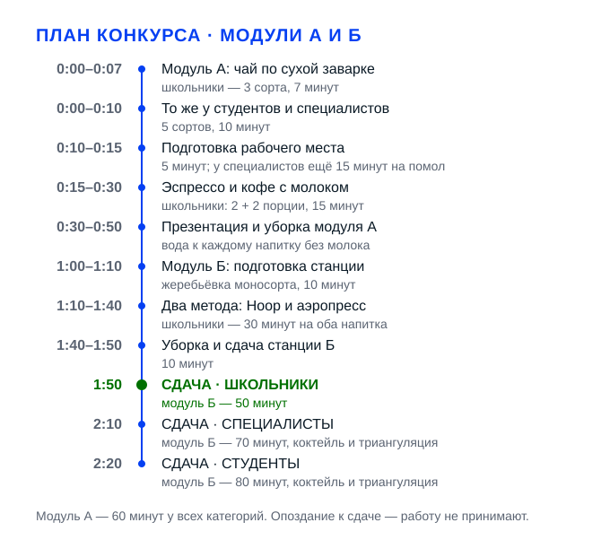

Бариста (Р,О)
Задания ниже — официальные файлы «Абилимпикс» (источник: abilympics-russia.ru), разложенные по категориям. Решения написаны по тексту задания, регламенту и критериям оценки; в них указано, что именно проверяет эксперт.
Школьник
14–16 лет, базовый уровень заданияВыдержка из официального конкурсного задания: страницы, относящиеся к категории «Школьник» (стр. 4–6 источника).
Пошаговое решение
Задание для школьников состоит из двух модулей на 100 баллов: модуль А — классические кофейные напитки, 47 баллов и 60 минут, модуль Б — альтернативные способы заваривания, 53 балла и 50 минут. За 1 час 50 минут нужно опознать три сорта чая по сухой заварке, сварить два одинаковых эспрессо и два одинаковых кофе с молоком с рисунком, а затем заварить один моносорт двумя методами — в воронке Hoop и в аэропрессе. В каждом шаге ниже разобрано, что и как делать, зачем это нужно по критериям, как проверить результат, что обычно ломается и на что смотрит эксперт. Главное в этом задании — не скорость, а повторяемость: слово «идентичных» стоит в критериях отдельно, и пара оценивается сравнением, а не по лучшей чашке.

Задача 1. Опознать три сорта чая по сухой заваркеМодуль А · 6 баллов · 7 минут
Идентификация чая — первое задание модуля А и единственное, где оценивают не руки, а знания: 6 баллов из 47. На столе три неподписанных образца сухой заварки, на всё отведено 7 минут, заваривать нельзя — только рассматривать, нюхать и описывать. Балл дают за точное определение типа и степени ферментации, за объяснение производства и за внятное описание вкусо-ароматического профиля, а не за красивые слова.
Действие 1.1. Снять признаки с каждого образца
Шаг 1.1.1
Высыпаем каждый образец отдельной горкой на белую тарелку или чистый лист бумаги: на белом фоне виден истинный цвет заварки, а не оттенок скатерти. Сначала смотрим на горку целиком — однородность, наличие лома, стеблей и пыли, потом на отдельные листья, при дневном свете и под углом к окну, чтобы поймать блеск и ворс. Отмечаем форму скрутки: горошек, тонкая игла, полоска, полушарик, цельная почка с серебристым ворсом. Отдельно смотрим на количество обломков и пыли: чистый ровный лист и труха в одном образце говорят о разном сырье, даже если цвет совпадает. Всё, что увидели, фиксируем до того, как начнём нюхать, потому что зрение не устаёт, а обоняние — да.
Критерий «идентификация чая по сухой заварке» стоит 6 баллов и относится к измеримым: эксперт сверяет ваш ответ с эталоном, а не оценивает красноречие. Внешний вид листа — единственный признак, который нельзя перепутать под влиянием соседнего образца, поэтому он идёт первым. Если сразу записать цвет, форму и однородность, дальше остаётся только подтвердить догадку ароматом, а не гадать по кругу.
У каждого образца записаны три вещи: цвет, форма скрутки, наличие ворса или стеблей. Проверьте себя вопросом: чем этот образец отличается от двух других по одному взгляду, без аромата? Если ответа нет, горка слишком мелкая — отсыпьте больше и посмотрите снова, время на это ещё есть.
Самая частая ошибка — насыпать все три образца на одну тарелку или слишком близко: крошки смешиваются, и вы начинаете описывать соседний чай, теряя балл за идентификацию. Вторая — рассматривать заварку в тени: тёмно-коричневый и зеленовато-коричневый лист в тени выглядят одинаково, а на свету разница очевидна.
Эксперт стоит рядом и видит, работает участник с образцом или просто перебирает горки: смотрит, отсыпан ли образец на белую поверхность и разложены ли листья для осмотра. Оценивает он не скорость, а последовательность — сначала цвет и форма, потом аромат.
Шаг 1.1.2
Нюхаем образцы по одному, короткими вдохами, не больше двух-трёх подряд: рецепторы адаптируются за 10–15 секунд, и после пятого вдоха нюансы уже не различаются. Между образцами делаем сброс — нюхаем свой рукав, чистое запястье или кофейное зерно, иначе предыдущий аромат перебивает следующий. Полезный приём: растереть щепоть между пальцами, тепло ладони раскрывает летучие вещества, и разница между сенным и цветочным становится очевидной. Второй приём — понюхать пустую чашку, в которой лежала заварка: стенки держат запах дольше, чем сама горка, и на них лучше читается вторая волна аромата.
Аромат сухой заварки — второй по надёжности признак после внешнего вида, и именно по нему чаще всего отличают улун от чёрного чая. Без паузы между образцами участник называет все три «травянистыми» и теряет баллы за идентификацию, хотя фактически угадал. Сброс занимает две секунды, а спасает весь ответ, который стоит 6 баллов.
У каждого образца записан характер аромата в двух-трёх словах: сено, солод, цветы, сливки, копчёность, морская капуста. Сравните описания: если два совпали дословно, перенюхайте их с паузой в десять секунд и проверьте, не перебил ли один аромат другой.
Вдыхать жадно и долго, уткнувшись в горку: обоняние садится на первом же образце, и оставшиеся два описываются наугад, а балл за идентификацию снимается целиком, даже если тип угадан. Вторая ошибка — нюхать через пакет или с ладони, на которой остался запах мыла после мытья рук.
Эксперт слушает, как участник называет аромат, и отдельно отмечает паузу между образцами: общие слова вроде «пахнет чаем» он не засчитывает, а конкретный дескриптор с указанием, откуда он взялся, засчитывает.
Шаг 1.1.3
Определяем степень ферментации по совокупности цвета и аромата. Зелёный чай — лист оливково-зелёный, иногда с матовым налётом, аромат свежий, травянистый, с нотами сена или морской капусты. Чёрный — тёмно-коричневый, почти графитовый, с солодовым, хлебным, иногда копчёным ароматом. Частично ферментированный, то есть улун или красный, — лист с красноватыми краями и зеленоватой серединой, аромат цветочный, сливочный, с медовой нотой. Белый — почки и молодые листья с серебристым ворсом и тонким цветочно-травяным ароматом. Складываем признаки в одну строку и только потом называем тип: цвет, кромка листа, ворс, характер запаха.
Ошибка в степени ферментации тянет за собой все остальные пункты: если зелёный назван чёрным, дальше неверно описываются и производство, и вкус, и температура заваривания. Критерий на 6 баллов устроен так, что ответ проверяется по цепочке «признак — тип — обработка», и разрыв в первом звене обнуляет следующие. Поэтому сначала фиксируем признак, потом называем тип, а не наоборот.
Для каждого образца есть связка из трёх элементов: цвет и скрутка, аромат, степень ферментации. Проверьте, нет ли противоречия: зелёный чай не может пахнуть солодом, а белый — иметь красные края листа. Противоречие означает, что один признак прочитан неверно, и его нужно пересмотреть.
Ответ «это чёрный чай, потому что он чёрный» — главная ловушка: у тёмного улуна цвет сухой заварки почти такой же, и вывод по одному признаку стоит половины баллов. Вторая ошибка — называть пуэр или другой выдержанный чай, не проверив, есть ли он вообще среди трёх образцов на столе.
Эксперт просит обосновать вывод одним признаком и смотрит, назван ли он до вывода или после. Признак, добавленный задним числом, он отмечает как угадывание.
Действие 1.2. Сформулировать и защитить ответ
Шаг 1.2.1
Записываем ответ по каждому образцу по одной схеме: тип и степень ферментации, способ обработки листа, вкусо-ароматический профиль в трёх словах, режим заваривания — температура воды и время. Проговариваем вслух, глядя на образец, а не в листок: на защите важна связь «признак — вывод», а не чтение конспекта. Если колеблетесь между двумя вариантами, называйте основной и объясняйте, почему второй менее вероятен — такое объяснение эксперт засчитывает как понимание. Формулировки держим короткими: одно предложение на образец, вторая фраза — обоснование.
Шесть баллов ставят за идентификацию, а идентификация — это обоснованное название, а не догадка. Эксперт может попросить объяснить, почему образец отнесён именно к этому типу, и без признака ответ рассыпается. Кроме того, проговаривание вслух тренирует ту формулировку, которую вы потом повторите на презентации напитков, где она тоже оценивается.
В ответе есть все четыре элемента, и ни один не противоречит другому. Проверьте темп: на один образец должно уходить 30–40 секунд речи, иначе вы либо не сказали главного, либо растекаетесь и не успеваете к третьему образцу.
Читать с листка вниз головой: эксперт видит, что ответ списан с подсказки, и задаёт уточняющий вопрос, на который заготовки нет. Вторая ошибка — молчать и ждать наводящих вопросов: время идёт, а балл за идентификацию так и остаётся не набранным.
Эксперт оценивает структуру ответа: назван тип, назван признак, назван режим заваривания. Порядок для него важен не меньше содержания, потому что именно он показывает, умеет ли участник рассуждать.
Шаг 1.2.2
Отвечаем на вопросы о производстве по цепочке: сбор (почка и два-три листа), завяливание, скрутка, ферментация, сушка, сортировка. Для каждого типа называем ключевой этап: у зелёного ферментацию останавливают прогревом почти сразу после скрутки, у чёрного лист лежит до полного окисления, у улуна процесс прерывают на середине. Дальше — вкус: где кислотность, где терпкость, где тело и как температура воды это подчёркивает. Полезно сразу оговорить, что скрутка бывает разной — продольной, шариком, вручную, — и она влияет на то, как лист отдаёт вкус.
В критерии прямо сказано: тестирование на знание продукта чая, его производства, вкусовых и ароматических особенностей. Балл снимают не только за неверное название, но и за пустое описание. Понимание производства объясняет и практику: почему зелёный заваривают при 75–80 °C, а чёрный выдерживает 95 °C — это пригодится в модуле Б, где вы работаете с моносортом.
На каждый вопрос есть ответ одной фразой с причиной: не «у чёрного полная ферментация», а «у чёрного лист окисляется полностью, поэтому появляется солодовый вкус и тёмный цвет». Если причина не называется, ответ считается неполным, даже когда термин верный.
Путать завяливание и ферментацию: это разные этапы, и эксперт слышит ошибку сразу, потому что дальше участник строит на ней вывод о вкусе. Вторая ошибка — рассказывать про плантацию вместо обработки: география без технологии критерий не закрывает.
Эксперт фиксирует точность терминов — ферментация, скрутка, степень окисления — и просит привести пример, как этап влияет на вкус. Ответ «попроще, без терминов» на этой компетенции стоит баллов.
Задача 2. Организовать рабочее место и подготовить станциюМодуль А · 5 баллов · 5 минут
Подготовка рабочего места в модуле А занимает 5 минут, но оценивается двумя критериями сразу: соблюдение правил гигиены и чистота рабочего места — 3 балла, внешний вид участника, осанка и манеры — 2 балла. Эти пять баллов набираются до первого зерна и держатся весь конкурс, поэтому станция собирается по зонам, а не как получится. Требования к форме в задании прописаны по пунктам, и каждое из них проверяемое.
Действие 2.1. Привести себя в порядок по требованиям задания
Шаг 2.1.1
Надеваем чёрное поло без бренда, чёрный фартук с грудкой, закрытую чёрную обувь на плоской подошве или каблуке не выше 3 см, без шнуровки и декоративных элементов. Волосы убираем полностью: у девушек под заколку и резинку, у юношей короткая стрижка, из-под воротника ничего не выглядывает. Снимаем часы, браслеты, кольца и длинные серьги, ногти короткие, без лака и покрытия, макияж мягкий. Фартук завязываем так, чтобы узел был сзади и не мешал наклоняться, а поло заправляем — свободный край над стойкой цепляется за питчер.
Внешний вид — 2 балла, и это единственный критерий, который эксперт оценивает до старта: исправить потом нельзя, время уже пошло. Требования не случайные: свободный рукав и украшения — риск попасть в напиток, а открытая обувь на мокром полу — прямая травма. Чистое поло и фартук без бренда нужны ещё и потому, что на фотоотчёте не должно быть сторонней рекламы.
Проверяем по четырём пунктам: воротник и рукава чёрные и без надписей, обувь закрытая и без шнуровки, волосы не выглядывают ни спереди, ни сзади, на руках ничего нет. Попросите волонтёра посмотреть со спины — затылок чаще всего и остаётся открытым.
Прийти в удобных кроссовках «я же за стойкой»: шнуровка и светлая подошва видны сразу и стоят балла из двух. Вторая ошибка — оставить фитнес-браслет или кольцо: снять их в спешке перед стартом уже не получится, руки должны быть свободны.
Эксперт осматривает участника на входе в бокс, до старта, и отмечает форму, обувь, волосы и руки в чек-листе. Позже он смотрит, остаётся ли форма опрятной к середине модуля.
Шаг 2.1.2
Моем руки до запястий с мылом не меньше 20 секунд, вытираем одноразовым полотенцем и повторяем это после каждого контакта с лицом, волосами, мусором, деньгами и после уборки. Полотенце меняем, как только оно стало влажным: сырая ткань на стойке — рассадник, а не инструмент. Рабочую поверхность держим сухой: пролитое молоко вытираем сразу, а не в конце модуля. Отдельная ветошь — для стойки, отдельная — для носика питчера и паровой трубки, путать их нельзя.
Гигиена и чистота рабочего места — 3 балла, и это критерий процесса: эксперт смотрит не один раз, а по ходу работы. Молоко и вода на стойке — идеальная среда для бактерий, а на чемпионате по бариста оценивают ещё и то, как выглядит станция в момент подачи. Сухая стойка — это и безопасность: лужа под ногами с горячим питчером в руке заканчивается ожогом.
Руки сухие, полотенце свежее, стойка без капель и разводов, мусор в контейнере, а не на столе. Пройдите взглядом линию от кофемашины до зоны подачи: на ней не должно быть ничего лишнего. Полотенце должно быть сухим на ощупь, а не просто чистым.
Вытирать руки о фартук — самая частая привычка: внешне руки сухие, но фартук лоснится, и эксперт это видит. Вторая ошибка — одно полотенце на весь модуль, включая пролитое молоко: к концу работы оно само становится источником запаха.
Эксперт отмечает чистоту стойки в моменты подачи: именно тогда видно, работает участник аккуратно или по принципу «потом уберу». Отдельно он смотрит, меняется ли полотенце после пролитого молока.
Действие 2.2. Разложить станцию по зонам и прогреть оборудование
Шаг 2.2.1
Выставляем посуду по зонам: две чашки для эспрессо объёмом 60–70 мл на блюдцах, две чашки или стеклянных бокала под молочный напиток объёмом не больше 240 мл, две ложки, два стакана под фильтрованную воду по 200 мл, салфетки. Чашки ставим на прогретую поверхность машины, а не на холодный стол: холодная керамика забирает у эспрессо 5–7 °C за первую минуту. Посуду осматриваем на сколы и отпечатки — чашку с трещиной у края на подачу не ставим, даже если она чистая.
Сервировка входит в критерии «приготовление эспрессо» на 15 баллов и «приготовление кофе с молоком» на 18: напиток оценивают в чашке, а не в питчере. Задание отдельно требует подавать стакан фильтрованной воды к каждому кофейному напитку без молока, то есть к двум эспрессо. Объём молочного напитка ограничен 240 мл, и посуда большего объёма сразу создаёт риск нарушить это условие.
На стойке ровно два комплекта для эспрессо, два для молочного и два стакана воды; всё вымыто, без сколов и отпечатков, чашки тёплые. Пересчитайте вслух: два, два, два — если чего-то не хватает, искать это в середине модуля будет некогда.
Взять под молочный напиток чашку на 300 мл «чтобы рисунок поместился» — прямое нарушение лимита 240 мл, за которое снимают балл независимо от качества рисунка. Вторая ошибка — подать эспрессо без воды: критерий сервировки просто не закрыт.
Эксперт проверяет комплектность подачи в момент, когда напиток ставят на стол: посуда, вода, ложка, чистый край. Он же смотрит, одинаковые ли чашки в паре.
Шаг 2.2.2
Собираем кофейную зону в пределах вытянутой руки: кофемолка и дозатор слева, темпер 58 мм и стук-бокс справа от машины, весы перед собой, питчеры на 350 и 600 мл рядом с паровой трубкой, чистая ветошь на держателе. Питчер на 350 мл берём под одну порцию молока, на 600 мл — под две: в слишком большом питчере молоко пенится неравномерно, в слишком маленьком переливается через край. Всё, что не нужно в этом модуле, убираем со стойки сразу — лишние предметы мешают руке и создают беспорядок.
Организация станции прямо влияет на 15 и 18 баллов за напитки: каждое лишнее движение — это секунды, а на два эспрессо и два молочных отведено 15 минут. Правильная зона экономит не время, а внимание: рука сама находит темпер, и вы не ищете его взглядом в неподходящий момент. Чистая ветошь нужна постоянно — протирать носик питчера и группу.
До каждого инструмента вы дотягиваетесь, не сходя с места, и ничего не стоит на пути между машиной и зоной подачи. Питчеры сухие и холодные, весы включены и обнулены, ветошь влажная и чистая. Каждый предмет лежит на своём месте и после работы возвращается туда же.
Сложить всё в кучу у машины: темпер падает, питчер цепляется за рычаг, и к четвёртой минуте станция превращается в беспорядок, который видно на подаче. Вторая ошибка — держать молоко на столе: до взбивания оно должно быть в холодильнике при 4 °C.
В модуле Б организация пространства входит в 25 баллов за каждый напиток, в модуле А её видно через скорость и аккуратность работы. Эксперт отмечает, где стоит питчер и сколько движений делает участник за одну порцию.
Шаг 2.2.3
Включаем машину заранее и ждём выхода на режим 20–30 минут, проверяем давление по манометру и температуру — 9 бар и 92–94 °C на группе. Промываем группу холостой продувкой 3–5 секунд, продуваем паровую трубку коротким импульсом и протираем её влажной ветошью. Молоко достаём из холодильника только перед взбиванием: 4 °C — рабочая температура, при которой белок держит пену. Если манометр стоит ниже 8 бар во время экстракции, об этом сразу говорим эксперту, а не варим «как есть».
Недогретая машина даёт кислый, недожаренный эспрессо: вода 88 °C вместо 93 °C меняет экстракцию сильнее, чем любая ошибка темперовки. Продувка группы убирает остатки вчерашнего кофе и конденсат, иначе первая порция идёт с горечью. Продувка трубки нужна, чтобы в питчер не попала вода из насадки: разбавленное молоко не взбивается в микропену.
Манометр показывает 9 бар, из группы после продувки идёт ровный пар без брызг, трубка чистая и сухая. Первая вода из группы горячая и без запаха старого кофе — если пахнет жжёным, продуйте ещё раз. Давление проверяем под нагрузкой, а не только на холостом ходу.
Начать варить на холодной машине: первый эспрессо выходит светлым и кислым, участник крутит помол, ломает настройку и теряет ещё две порции. Вторая ошибка — не продуть трубку: молоко получает воду и не даёт текстуры, рисунок растекается.
Эксперт смотрит на подготовку машины в первые минуты модуля: прогрета ли она, промыта ли группа, чистая ли трубка. Отсутствие продувки он фиксирует как нарушение технологии.
Задача 3. Сварить два эспрессо и два кофе с молокомМодуль А · 36 баллов · 15 минут
Ядро модуля А: два идентичных эспрессо — 15 баллов, два одинаковых молочных напитка — 18 баллов, рисунок — 3 балла, на всё 15 минут. Слово «идентичных» в задании ключевое: оценивают не лучшую чашку, а пару, поэтому вторая порция варится по тем же параметрам, что и первая. Молочный напиток можно выбрать любой, но его объём не должен превышать 240 мл, и при отдаче нужно назвать, что именно вы подаёте.
Действие 3.1. Выставить дозу, распределение и помол
Шаг 3.1.1
Набираем 18–20 г молотого кофе на двойной эспрессо и взвешиваем на весах с точностью 0,1 г: разница в 2 г меняет время экстракции на 4–5 секунд. Ссыпаем в сухой портафильтр, держа горку по центру, и распределяем пальцем или дистрибьютором от краёв к центру, не утрамбовывая. Портафильтр держим над стук-боксом, а не над столом: просыпанный кофе на стойке — минус по чистоте. Перед набором протираем корзину насухо: капля воды от прошлой промывки создаёт канал в таблетке.
Точная доза — основа повторяемости: два идентичных эспрессо получаются только из одинакового количества кофе. Пятнадцать баллов за приготовление эспрессо складываются из дозы, времени, объёма и вкуса, и первым проверяется именно вес. Недосып в 1,5 г даёт водянистый напиток, пересып — горький и медленный, и оба варианта видны уже по струе.
Весы показывают 18,0–20,0 г до темперовки, портафильтр сухой и чистый, кофейной пыли на ободке нет. Проведите по краю пальцем: если остаётся пыль, протрите, она помешает равномерному уплотнению и даст подтёки на группе.
Сыпать на глаз: разброс получается плюс-минус 3 г, и вторая чашка течёт иначе первой, а критерий идентичности стоит отдельного балла. Вторая ошибка — мокрый портафильтр после промывки: остаток воды создаёт канал в таблетке, и экстракция идёт рывком.
Эксперт смотрит на весы и на то, взвешивается ли каждая порция отдельно, а не «примерно столько же». Отдельно он отмечает, чистый ли ободок портафильтра перед темперовкой.
Шаг 3.1.2
Темперуем темпером 58 мм строго вертикально: ставим его на таблетку, находим горизонталь по ободку и давим весом корпуса, а не кистью — усилие около 15 кг, но важнее не сила, а ровность. Полируем четвертью оборота, чтобы поверхность стала гладкой и блестящей. Край таблетки не должен выступать выше борта портафильтра. После уплотнения не стучим портафильтром по стук-боксу: от удара таблетка трескается изнутри, и вода находит трещину.
Перекос темпера в два-три градуса создаёт тонкую и толстую сторону таблетки: вода идёт по пути меньшего сопротивления, и половина кофе остаётся недоэкстрагированной. Это видно по струе — она бьёт одним потоком с одной стороны. Ровная таблетка — условие того, что повторный эспрессо пойдёт по тем же 25–30 секундам.
Поверхность таблетки ровная, без трещин и вмятин, борт чистый, темпер после уплотнения не прилипает. Посмотрите на портафильтр сбоку: таблетка параллельна борту, а не сидит клином. После уплотнения таблетка не должна пружинить под темпером.
Давить со всей силы под наклоном: таблетка уплотняется неравномерно, и вместо 25 секунд получается 18 или 40, а вкус уходит в кислоту или горечь. Вторая ошибка — темперовать мокрым темпером: кофе прилипает, поверхность рвётся.
Эксперт следит за углом и чистотой темпа: пятна кофе на ободке портафильтра он отмечает как небрежность, а перекошенную таблетку — как потерю балла за приготовление.
Шаг 3.1.3
Ставим портафильтр в группу и снимаем пробную порцию в отдельную чашку: время 25–30 секунд, вес напитка 36–40 г, струя ровная и светлеющая к концу, без фонтанчиков. Если экстракция быстрее 22 секунд и напиток бледный — помол мельче на один шаг; если дольше 32 и струя капает — крупнее. Корректировку делаем одним шагом и сразу проверяем второй порцией, а не крутим туда-сюда. Пробную чашку не подаём: она уходит в слив или на собственную дегустацию.
Помол на чемпионате выставляют организаторы, но проверять его всё равно нужно первой экстракцией: влажность зерна, температура в зале и свежесть помола меняют течение за час работы. Пробная порция стоит 30 секунд, а неверная настройка — обеих порций и 15 баллов. Правило одного шага нужно потому, что при двух шагах сразу непонятно, что именно дало результат.
Секундомер показывает 25–30 секунд, весы 36–40 г, крема рыжая и однородная, без светлого кольца у стенки. Если после корректировки цифры ушли в другую сторону, вернитесь к исходному помолу и проверьте дозу — чаще всего виноват вес, а не настройка.
Крутить помол после каждой чашки: настройка уходит в крайность, и к третьей порции машина забита, а время модуля кончилось. Вторая ошибка — варить первые две порции сразу на подачу, без проверки: одна почти всегда уходит в брак.
Эксперт смотрит, проверяет ли участник экстракцию перед подачей и как реагирует на изменение течения. Он же фиксирует, сколько порций ушло в слив: две-три — норма, пять — потеря времени.
Действие 3.2. Сварить два эспрессо
Шаг 3.2.1
Прогреваем чашки: наливаем кипяток на треть, даём постоять 20–30 секунд и выливаем — к моменту экстракции керамика должна быть горячей на ощупь. Промываем группу короткой продувкой и вытираем насухо, чтобы в чашку не попала старая вода. Чашки ставим под машину обе сразу, но варим по одной, если группа одногрупповая. Поддон проверяем заранее: переполненный, он отдаёт в бокс запах старого кофе.
Эспрессо подают при 60–65 °C, и холодная чашка забирает эти градусы за полминуты, а температура подачи входит в критерий на 15 баллов. Вода, оставшаяся в группе после продувки, разбавляет первую струю и рвёт крема. Прогрев чашек — самое дешёвое действие в модуле: тридцать секунд и никакого риска.
Чашка горячая и сухая, группа чистая, поддон не переполнен. Потрогайте чашку тыльной стороной пальца: она должна быть ощутимо горячей, но не обжигать, иначе эспрессо в ней начнёт перегреваться. Если чашка остыла, прогрев повторяем, это ещё двадцать секунд.
Варить в холодную чашку: напиток остывает на 8–10 °C, и на дегустации это читается как пустой и кисловатый. Вторая ошибка — оставить в чашке воду от прогрева: эспрессо разбавляется, крема рвётся, и объём выходит за 40 г.
Эксперт проверяет температуру напитка на подаче и фиксирует, прогрета ли посуда. Он же смотрит на поддон и на сухость группы перед установкой портафильтра.
Шаг 3.2.2
Пускаем экстракцию: первые 4–6 секунд идёт тёмная густая капля, затем струя становится ровной и светлеет к двадцатой секунде. Останавливаем на 36–40 г или на 25–30 секундах — что наступит раньше, то и считаем границей, и вторую чашку останавливаем по тому же признаку. Портафильтр вынимаем сразу после остановки и выбиваем таблетку в стук-бокс. Чашку с готовым напитком не переставляем с поддона на поддон: от толчка крема рвётся.
Объём и время — измеримые параметры критерия на 15 баллов: 36–40 г из 18–20 г сухого кофе дают пропорцию 1:2, при которой эспрессо не кислый и не горький. Если тянуть до 45 г, напиток становится водянистым, если рвать на 25 г — концентрированным и вяжущим. Выбитая сразу таблетка не даёт группе остыть и не пахнет горелым.
В чашке 36–40 г, время 25–30 секунд, крема толщиной 2–3 мм, цвет от тёмно-рыжего до орехового, тигровые полосы. На вкус — сладость в начале и лёгкая кислотность в конце, без вяжущей горечи. Струя должна быть ровной по всей длине, без рывков и фонтанчиков.
Останавливать «по цвету, как учили» и промахиваться на 10 г: два эспрессо получаются разными, а критерий требует идентичности. Вторая ошибка — оставить таблетку в группе: к следующей порции она пригорает и даёт горечь, которую уже не убрать помолом.
Эксперт ставит чашку на весы и сверяет время по секундомеру, а затем пробует: горечь и кислотность — отдельные пункты. Он смотрит и на то, выбита ли таблетка сразу после порции.
Шаг 3.2.3
Оцениваем крема до подачи: цвет, однородность, отсутствие крупных пузырей и светлого кольца у стенки. Если крема бледная и пенистая — экстракция недошла, если тёмная с чёрным ободком — перетянута. Затем варим вторую порцию по тем же параметрам и ставим чашки рядом: они должны совпадать по объёму с точностью до 2–3 г и по цвету крема. Разницу в 5 г и больше видно на глаз, и объяснить её эксперту нечем.
В задании написано «2 идентичных эспрессо», и это отдельное требование, а не пожелание: пару оценивают сравнением. Даже при верной первой чашке вторая часто уходит, потому что участник меняет темп или дозу на глазок. Сравнение двух чашек рядом — единственный способ увидеть разницу раньше эксперта.
Две чашки стоят рядом: объём одинаковый, крема одного оттенка, вкус от порции к порции не меняется. Если вторая жиже, её не подаём, а перевариваем: 40 секунд дешевле потерянных баллов за идентичность.
Подать пару, где одна чашка на 10 г легче: эксперт видит разницу по уровню и снимает балл за идентичность, а заодно и за объём. Вторая ошибка — долить воды, чтобы уровнять: крема рвётся, вкус разбавляется, и разница становится ещё заметнее.
Эксперт сравнивает пару визуально и на вкус, отдельно отмечая совпадение объёма и характера. Он ставит чашки рядом и смотрит на уровень, не наклоняя их.
Действие 3.3. Взбить молоко и налить рисунок
Шаг 3.3.1
Наливаем в питчер на 350 мл холодное молоко жирностью 3,2–3,5 % примерно до половины, не выше основания носика. Для двух порций берём питчер на 600 мл и наливаем 200–220 мл. Молоко достаём из холодильника в последний момент: 4 °C — рабочая температура, тёплое молоко не даёт плотной микропены. Питчер перед набором ополаскиваем холодной водой и встряхиваем: мокрый питчер с остатками молока от прошлой порции сбивает текстуру.
Жирность и температура определяют, получится ли рисунок: на 1,5 % пена выходит сухой и хлопьями, на 6 % — тяжёлой и не тянется. Половина питчера — рабочий объём, при котором молоко успевает закрутиться и не выплёскивается. Кофе с молоком стоит 18 баллов, и текстура молока — половина этой оценки.
Молоко холодное, питчер сухой и чистый, уровень — половина или чуть меньше. Носик не забит засохшим молоком: проверьте перед включением пара, иначе струя пойдёт в сторону. На упаковке смотрим жирность и срок: просроченное молоко не взбивается.
Налить полный питчер: молоко не закрутится, пойдёт крупный пузырь, и рисунок не получится вовсе. Вторая ошибка — использовать молоко, простоявшее на столе полчаса: пена осядет через минуту после подачи, и пара будет выглядеть разной.
Эксперт смотрит на жирность молока по упаковке и на то, как участник обращается с питчером до включения пара. Полный питчер или тёплое молоко он отмечает как нарушение технологии.
Шаг 3.3.2
Опускаем носик трубки под поверхность молока на 5–8 мм, включаем пар и держим питчер чуть под углом, ловя характерный звук «шшух-шшух»: это признак того, что воздух идёт тонкой струёй. Через 3–5 секунд опускаем трубку глубже и продолжаем закручивать молоко до 60–65 °C — ладонь на стенке питчера терпит, но уже горячо. Сразу выключаем пар, протираем трубку и продуваем её. Питчер после взбивания ставим на стол и прокручиваем, чтобы пена не расслоилась.
Микропена — это молоко, в которое вбили воздух и разбили его на пузыри меньше 0,1 мм; именно такая пена ложится на эспрессо глянцевой волной, а не шапкой. При 60–65 °C белок ещё держит структуру, а после 70 °C денатурирует, и молоко пахнет варёным. Температура и текстура входят в 18 баллов за кофе с молоком.
Пена глянцевая, как жидкий йогурт, без крупных пузырей, питчер тёплый, но не обжигает ладонь. Постучите питчером по столу и покрутите: поверхность должна остаться гладкой, а не распасться на пузыри. Пузыри размером с булавочную головку — уже брак, а не текстура.
Держать трубку на поверхности всё время: получается сухая пена, которая лежит шапкой и не рисует, а молочный напиток теряет баллы и за текстуру, и за рисунок. Вторая ошибка — перегреть до 75 °C: молоко пахнет варёным, и вкус уже не спасти.
Эксперт слушает звук взбивания и смотрит на текстуру в питчере до того, как молоко коснётся эспрессо. Перегретое молоко он определяет по запаху и по оседающей пене.
Шаг 3.3.3
Наливаем молоко в эспрессо в два темпа: сначала поднимаем питчер высоко и тонкой струёй вводим молоко в центр, чтобы смешать с кофе, затем опускаем носик к поверхности и покачиваем питчером, формируя рисунок. Для питчинга ведём розетку или сердце от центра к краю, для эчинга ставим белое пятно и протаскиваем его зубочисткой или шпажкой. Объём готового напитка — не больше 240 мл. Если рисунок не идёт, останавливаемся на аккуратном белом пятне: оно закрывает критерий лучше, чем размазанная попытка.
Латте-арт — отдельные 3 балла, и они самые быстрые в наборе: рисунок видно сразу, без дегустации. Питчинг показывает контроль над молоком, эчинг — аккуратность и понимание контраста; если свободный рисунок не идёт, белое пятно с протаскиванием закрывает критерий надёжнее, чем кривая розетка. Лимит 240 мл проверяют по чашке, поэтому наливать до края нельзя.
Рисунок контрастный, белое на коричневом, края чашки чистые, пена не выступила за борт. Обе чашки одинаковые по рисунку и объёму: в задании два одинаковых молочных напитка, и разный рисунок в паре читается как небрежность.
Лить молоко с высоты до самого конца: пена уходит под кофе, и на поверхности остаётся мутное пятно. Вторая ошибка — не вытереть носик: капля молока падает на рисунок и разбивает его, а след остаётся на блюдце.
Эксперт оценивает рисунок в момент подачи, пока пена не осела, и сравнивает две чашки между собой. Он смотрит на контраст и на чистоту края, а не на сложность рисунка.
Действие 3.4. Засервировать и презентовать напитки
Шаг 3.4.1
Ставим чашку на блюдце, ложку кладём ручкой вправо, к эспрессо добавляем стакан фильтрованной воды на 200 мл. Проверяем температуру: напиток должен быть 60–65 °C, вода комнатной. Протираем край чашки и блюдца салфеткой, убираем капли с подноса. Чашку держим за ручку или за дно, а не за корпус: отпечатки на керамике видны сразу, а на тёмной чашке их особенно много.
Сервировка и презентация входят в критерии на 15 и 18 баллов, а вода к эспрессо прямо прописана в задании: один стакан на один кофейный напиток без молока. Вода не украшение — она смывает вкус предыдущей чашки и позволяет эксперту оценивать каждый напиток отдельно. Чистое блюдце — то, что видно на фото и запоминается.
Комплект полный: чашка, блюдце, ложка, стакан воды, салфетка; край сухой, на блюдце нет капель. Подача выглядит так, как будто её поставили в кофейне, а не отдали то, что было под рукой. Чашка стоит по центру блюдца, а не наезжает на край.
Забыть воду или поставить один стакан на двоих: критерий сервировки не закрыт, и балл уходит независимо от вкуса напитка. Вторая ошибка — подать чашку с каплей на блюдце: мелочь, которую эксперт отмечает сразу.
Эксперт оценивает комплектность и чистоту подачи, а также то, назван ли напиток. Он проверяет ложку и стакан воды так же внимательно, как саму чашку. Он отмечает и порядок: эспрессо подаётся раньше молочного.
Шаг 3.4.2
Называем напиток вслух — «эспрессо, 30 миллилитров» или «латте, 240 миллилитров» — и только потом ставим чашку перед экспертом. Подаём парами: сначала два эспрессо с водой, затем два молочных, каждый раз с левой стороны, не переставляя приборы. После подачи сразу забираем грязную посуду со стойки. Если эксперт задал вопрос, отвечаем коротко и по делу, не оправдываясь за рисунок или пену.
В задании сказано: при отдаче участник называет напиток, который отдаёт экспертам на пробу, — это отдельное требование, и молчаливая подача его не закрывает. Порядок «сначала без молока, потом с молоком» нужен, чтобы вкус молока не перебил эспрессо. Убранная посуда — это ещё и чистота рабочего места, 3 балла.
Обе пары поданы, каждая названа, вода стоит рядом с эспрессо, стойка свободна от грязной посуды. Если эксперт задаёт вопрос о напитке, ответ должен укладываться в одну фразу: состав и объём. Стакан воды стоит справа от чашки, не перекрывая её.
Поставить чашки молча: эксперт не знает, что именно пробует, и презентация не засчитывается. Вторая ошибка — подать молочный напиток первым: эспрессо после молока кажется резким и пустым, и оценка пары падает.
Эксперт фиксирует презентацию: название, порядок, комплектность, манеры и осанку. Он смотрит, как участник ставит чашку — за ручку или за корпус, и куда при этом смотрит.
Задача 4. Заварить один моносорт воронкой Hoop и аэропрессомМодуль Б · 50 баллов · 30 минут
Модуль Б — 50 баллов и 50 минут: 10 на подготовку, 30 на два напитка, 10 на уборку. Сорт определяется жеребьёвкой, и оба метода — воронка Hoop и аэропресс — должны раскрыть один и тот же моносорт по-разному. По 25 баллов за каждый напиток включают подготовку места, сам кофе и презентацию; ещё 3 балла дают за общее впечатление от работы.
Действие 4.1. Разобрать сорт и подготовить две станции
Шаг 4.1.1
Тянем жеребьёвку и читаем карточку сорта: страна, обработка (мытая, натуральная, хани), степень обжарки, заявленные дескрипторы. Нюхаем сухое зерно и записываем три слова, которые приходят первыми: ягода, цитрус, карамель, орех. Дальше решаем, что подчёркивать: у светлой мытой обжарки ведём к чистоте и кислотности, у натуральной — к телу и сладости. Решение фиксируем словами, чтобы потом повторить его в презентации теми же терминами.
Презентация должна соответствовать вкусо-ароматическому профилю сваренного сорта — это записано в результате модуля Б, и на каждый напиток приходится 25 баллов. Понимание профиля до заваривания позволяет выбрать температуру и соотношение, а не действовать наугад. Эксперт спрашивает, почему выбраны такие параметры, и ответ «так принято» здесь не работает.
В карточке отмечены обработка и обжарка, в блокноте три дескриптора, и вы можете объяснить, какая температура и какое соотношение из них следуют. Если дескрипторы не читаются, ориентируйтесь на обжарку: светлая — 93–94 °C, тёмная — 90–92 °C.
Не прочитать карточку и варить как всегда: для светлой обжарки привычные 92 °C дают недоваренный травянистый вкус, и 25 баллов уходят вместе с ним. Вторая ошибка — выдумать дескрипторы, которых нет: эксперт пробует то же самое и слышит расхождение.
Эксперт слушает обоснование параметров и сверяет его с карточкой сорта. Отдельно он отмечает, названы ли дескрипторы до заваривания или придуманы после дегустации.
Шаг 4.1.2
Выставляем помол отдельно под каждый метод: для Hoop средний, как столовая соль, чтобы вода проходила за 2,5–3 минуты; для аэропресса на два-три шага мельче, ближе к мелкому сахару, потому что там напиток держится в иммерсии и отжимается давлением. Проверяем помол на ощупь: крупинка должна чувствоваться, но не царапать подушечку пальца. Сразу отсыпаем две навески по 15–16 г в отдельные стаканчики и подписываем их, чтобы не перепутать в спешке.
Один сорт двумя методами — это два разных физических процесса: в воронке вода протекает через слой кофе, в аэропрессе кофе настаивается и продавливается. Одинаковый помол даст либо забитую воронку и четыре минуты вместо трёх, либо мутный переэкстрагированный аэропресс. Подготовка места входит в 25 баллов за каждый напиток, и навески — её часть.
Две навески по 15–16 г стоят отдельно и подписаны, помол в каждой отличается на глаз и на ощупь. Воронка и аэропресс собраны, фильтры под рукой, весы включены. Весы проверяем на нуле перед каждой навеской.
Молоть всё одной порцией и делить пополам: помол не подходит ни одному методу, и оба напитка уходят в брак одновременно. Вторая ошибка — молоть заранее, за 15 минут: аромат уходит, а для 25 баллов за напиток это заметно на вкус.
Эксперт проверяет, что помол для двух методов разный, и спрашивает, чем именно он отличается. Он же смотрит, подписаны ли навески и не смешались ли они на столе.
Шаг 4.1.3
Ставим чайник на 93 °C, готовим весы с точностью 0,1 г, таймер и две сервировочные чашки на 200–250 мл, прогревая их горячей водой. Отмеряем 250 мл воды для Hoop и 200 мл для аэропресса, держим рядом кувшин для готового напитка. Всё выставляем так, чтобы во время пролива не тянуться через стол. Воду пробуем на вкус: хлор и металл чувствуются в чистом моносорте сильнее, чем в молочном напитке.
Температура 92–94 °C — рабочий диапазон для светлой обжарки: при 100 °C экстракция идёт слишком жёстко и вытягивает горечь, при 85 °C напиток получается кислым и пустым. Точные весы и таймер — единственный способ повторить результат, а на два напитка отведено 30 минут, и импровизация съедает их быстрее, чем кажется.
Чайник показывает 92–94 °C, весы обнулены с посудой, таймер на нуле, обе чашки горячие. Проверьте, что вода не пахнет хлором: фильтрованная вода — часть вкуса, и её отсутствие видно по плоскому послевкусию.
Заливать крутой кипяток: светлая обжарка мгновенно отдаёт горечь, и 25 баллов тают. Вторая ошибка — греть чашки потом: холодная керамика забирает 10 °C, и напиток приходит на подачу тёплым, а не горячим.
Эксперт смотрит на температуру воды и на то, взвешивает ли участник воду, а не льёт на глаз. Он же засекает, сколько времени ушло на подготовку из отведённых десяти минут.
Действие 4.2. Заварить напиток в воронке Hoop
Шаг 4.2.1
Ставим бумажный фильтр в воронку Hoop и промываем его 100–150 мл горячей воды по кругу: это убирает бумажный привкус и прогревает керамику. Сливаем промывочную воду и ставим воронку на прогретый кувшин или чашку. Проверяем, что фильтр прилёг к стенкам без складок и воздух выходит свободно. Если фильтр болтается, его нужно прижать: иначе вода пойдёт по стенке мимо кофе.
Бумага без промывки даёт картонный тон, который в чистом моносорте слышен сразу, а за напиток номер один дают 25 баллов. Прогретая воронка держит температуру заваривания: холодная керамика сбрасывает 5–7 °C на первом проливе, и кофе недополучает экстракции. Складка у стенки создаёт канал, по которому вода уходит мимо помола.
Фильтр влажный, запаха бумаги нет, воронка горячая на ощупь, промывочная вода слита полностью. Подуйте в воронку — воздух должен проходить свободно, без сопротивления. Воронка стоит ровно, без наклона, иначе вода уйдёт в одну сторону.
Промыть фильтр холодной водой: привкус бумаги остаётся, а температура падает, и напиток выходит плоским. Вторая ошибка — не слить промывочную воду: первый пролив идёт в разбавленном виде, и соотношение 1:16 ломается.
Эксперт проверяет, промыт ли фильтр и прогрета ли посуда: это первый пункт подготовки к напитку. Он замечает и складку у стенки, по которой вода уходит мимо кофе.
Шаг 4.2.2
Засыпаем 15–16 г кофе, ставим воронку на весы, обнуляем и начинаем блум: наливаем 30–45 мл воды 93 °C по спирали от центра, чтобы смочить весь помол. Ждём 30–40 секунд, пока выйдет углекислый газ и шапка осядет. Если шапка не осела к 45 секундам, кофе очень свежий, и первый пролив стоит начать раньше. Следим за весами: 30–45 мл — это ровно столько, чтобы помол намок, но не начал стекать в чашку.
Блум — единственный этап, на котором видно, свежий ли кофе: выделение газа означает, что помол не выдохся. Без паузы вода проходит через сухой кофе неравномерно, и часть помола остаётся недоэкстрагированной, давая травянистую кислоту. Соотношение 1:16, то есть 15 г на 250 мл, — база для воронки, от которой считается вкус.
Шапка поднялась и осела за 30–40 секунд, весь помол влажный, на стенках нет сухих крупинок. Весы на этом этапе показывают 30–45 г, и вода не капает в кувшин ручьём. Помол должен намокнуть весь, а не только по центру горки.
Лить сразу весь объём: часть кофе остаётся сухой, и напиток получается одновременно кислым и горьким, а объяснить это эксперту нечем. Вторая ошибка — лить в центр одной струёй: помол вымывается в одну точку, образуя канал, и вода проходит мимо вкуса.
Эксперт смотрит на равномерность смачивания и на паузу блума, а не только на итоговое время. Он отмечает, наливает ли участник по спирали и не касается ли фильтра носиком чайника.
Шаг 4.2.3
Доливаем воду тремя порциями по 70–80 мл, каждый раз по спирали от центра к краям и обратно, не касаясь фильтра. Ждём, пока уровень опустится примерно до половины, и льём следующую порцию. Общее время — 2:30–3:00, итоговый вес в чашке — 240–250 мл; если вода уходит быстрее 2:15, помол был крупноват. Готовый напиток не держим на горячей поверхности: он продолжает отдавать горечь.
Три пролива дают равномерную экстракцию: слой кофе всё время влажный и промывается свежей водой, а не стоит в ней. Суммарное время 2:30–3:00 — граница между недоедом и горечью, и её проверяют по 25-балльному критерию. Вес 240–250 мл нужен, чтобы соотношение 1:16 сохранилось, а не получилось «сколько вылилось».
В кувшине 240–250 мл, время 2:30–3:00, помол осел ровным конусом без воронки-канала по центру. На вкус — чистая кислотность, сладость в послевкусии, без вяжущей сухости. Уровень в воронке не должен подниматься выше кромки фильтра.
Лить непрерывно, не давая уровню упасть: кофе плавает в воде, и экстракция идёт по краям, а вкус получается плоским. Вторая ошибка — долить до 300 мл, чтобы не кислило: напиток разбавляется и теряет тело.
Эксперт взвешивает готовый напиток и засекает общее время, а затем оценивает чистоту вкуса. Канал в помоле он находит по конусу: если по центру ямка, значит лили в одну точку.
Действие 4.3. Заварить тот же сорт в аэропрессе
Шаг 4.3.1
Собираем аэропресс: вставляем смоченный бумажный фильтр в крышку, закручиваем, ставим корпус на чашку и прогреваем его горячей водой. Засыпаем 15–16 г кофе средне-мелкого помола, ставим на весы и обнуляем. Способ сборки выбираем один и держим его для обеих чашек — либо прямой, либо перевёрнутый, но не путаем их между собой. Перед сборкой проверяем резиновое кольцо поршня: сухое кольцо закусывает и рвёт отжим.
Аэропресс держит воду в корпусе, и от способа сборки зависит, сколько напитка останется и насколько чистым он выйдет. Прогрев корпуса нужен, чтобы температура не падала на 8–10 °C за первую минуту настаивания. Напиток номер два стоит 25 баллов, и подготовка места входит в них отдельным пунктом.
Фильтр влажный и ровно лежит в крышке, корпус горячий, весы обнулены, навеска 15–16 г. Поршень ходит свободно, без заеданий, кольцо не перекошено. Корпус прогрет так, что на ощупь он тёплый, а не холодный.
Сухой фильтр: бумага забивается, отжим идёт рывками, а в чашку попадает муть. Вторая ошибка — насыпать кофе в мокрый корпус: часть помола прилипает к стенкам и не участвует в экстракции, поэтому вкус выходит пустым.
Эксперт смотрит на сборку и на то, прогрет ли корпус, — это видно по конденсату и по температуре готового напитка. Перекошенное кольцо он отмечает как риск срыва отжима.
Шаг 4.3.2
Заливаем 200 мл воды 90–92 °C, чтобы покрыть весь помол, и перемешиваем ложкой 10 секунд сверху вниз, поднимая гущу со дна. Настаиваем 1:00–1:30 в зависимости от помола и обжарки, затем снимаем крышку, ещё раз перемешиваем и ставим фильтр. Для светлой обжарки держим ближе к 1:30, для тёмной — к 1:00. Ложку после перемешивания не оставляем в корпусе: она держит тепло и создаёт канал.
В иммерсии время — главный регулятор экстракции: чем дольше настаивание, тем больше тела и сладости, но после двух минут появляется вяжущий танин. Перемешивание нужно потому, что помол оседает на дно и без него экстрагируется неравномерно. Температура 90–92 °C мягче, чем в воронке, и именно это даёт аэропрессу округлость.
Весь помол мокрый, гуща однородная, время настаивания зафиксировано по таймеру. На поверхности нет сухих островков кофе, а стенки корпуса чистые выше уровня. Гуща должна быть однородной, без комков сухого кофе.
Не перемешивать: верхний слой остаётся сухим, и напиток выходит кислым при густой шапке. Вторая ошибка — держать три минуты для крепости: появляется сухость в послевкусии, которую не убрать разбавлением.
Эксперт засекает время настаивания и проверяет, перемешивает ли участник гущу. Он смотрит, снята ли крышка до установки фильтра, потому что от этого зависит чистота напитка.
Шаг 4.3.3
Ставим корпус на чашку, плавно нажимаем поршень и отжимаем 20–30 секунд до шипения, давя весом корпуса, а не рывком. Сливаем напиток, добавляем горячую воду до 200–220 мл, чтобы получить фильтровую крепость, и перемешиваем. Пробуем: если не хватает тела, в следующий раз берём помол мельче, а не настаиваем дольше. Отжим заканчиваем до сухого шипения: последние капли дают горечь.
Давление в аэропрессе — это не эспрессо: полтора-два бара дают чистый напиток, а резкий отжим продавливает муть и горечь. Разбавление до 200–220 мл нужно потому, что без него получается концентрат, несопоставимый по объёму с воронкой, а сравнивают два напитка из одного сорта. Пропорция и объём — то, что эксперт видит на весах.
Отжим занял 20–30 секунд, в чашке 200–220 мл после разбавления, на поверхности нет масляных пятен и мути. Вкус плотнее, чем из воронки, но без сухости, а аромат читается теми же словами, что и в первой чашке.
Давить изо всех сил за пять секунд: муть и горечь в чашке, критерий чистоты напитка не закрыт. Вторая ошибка — не разбавлять: два напитка получаются разного объёма, и сравнение складывается не в вашу пользу.
Эксперт смотрит на темп отжима и на объём готового напитка. Он же проверяет, не осталось ли в корпусе воды, которую участник не слил в чашку. Он проверяет и то, не осталось ли в корпусе недожатого кофе.
Действие 4.4. Презентовать и объяснить разницу методов
Шаг 4.4.1
Рассказываем про каждый напиток по одной схеме: сорт, метод, параметры — 15 г на 250 мл и 2:30 для Hoop, 15 г на 200 мл и 1:20 для аэропресса. Затем объясняем разницу: воронка даёт чистоту и кислотность, потому что вода проходит через слой один раз, аэропресс — тело и сладость за счёт иммерсии и давления. Заканчиваем выводом, какой вариант больше подходит этому сорту и почему. Термины берём те же, что записали по карточке сорта, чтобы рассказ не расходился с первой частью модуля.
Результат модуля Б сформулирован так: презентация соответствует вкусо-ароматическому профилю сваренного сорта. Значит, 25 баллов за напиток включают не только чашку, но и объяснение, и оно должно совпадать с тем, что эксперт пробует. Понимание разницы методов отличает участника, который выучил рецепт, от того, кто управляет вкусом.
В рассказе есть сорт, метод, три параметра и вывод о разнице; ни одно утверждение не противоречит вкусу в чашке. Если вы говорите про кислотность, а напиток плоский, объяснение не засчитают. Проверьте, что названы оба метода и хотя бы одна цифра по каждому.
Говорить общими словами — вкусно, насыщенно, сбалансированно — без привязки к сорту и методу. Вторая ошибка — хвалить оба напитка одинаково: если разницы нет, значит метод не понят, и балл за презентацию снижается.
Эксперт задаёт вопрос о разнице методов и слушает, насколько объяснение связано с реальным вкусом. Он отмечает и то, называет ли участник параметры по памяти или ищет их в записях.
Шаг 4.4.2
Ставим обе чашки на блюдца, к каждой — стакан фильтрованной воды и ложку, проверяем температуру 60–65 °C и чистоту края. Подаём одновременно, называя напиток и метод: «моносорт, воронка Hoop, 250 миллилитров» и «тот же сорт, аэропресс, 200 миллилитров». После подачи убираем питчеры, фильтры и гущу со стойки. Чашки ставим на расстоянии ладони друг от друга, чтобы эксперт мог сравнить их, не переставляя.
Оба напитка оценивают как пару из одного сорта, поэтому их ставят рядом: разница должна читаться и в цвете, и в аромате. Вода к напиткам без молока требуется по заданию, и её отсутствие бьёт по сервировке. Убранная стойка — это те 3 балла за общее впечатление и чистота, которую смотрят до самого конца.
Две чашки, две воды, две ложки, края сухие, оба напитка названы. На стойке не осталось мокрых фильтров и гущи, а рядом с чашками нет ничего лишнего. Чашки стоят так, чтобы эксперт видел обе одновременно, не наклоняясь.
Подать напитки по одному с интервалом в пять минут: пара распадается, и сравнение проигрывает. Вторая ошибка — оставить использованные фильтры на столе: это видно и стоит баллов за организацию. В паре это видно сразу, и сравнение теряет смысл.
Эксперт оценивает пару целиком: подачу, названия, воду и состояние стойки. Он сравнивает цвет и прозрачность двух чашек ещё до того, как попробует. Он же смотрит, не осталось ли на блюдцах капель.
Задача 5. Убрать станцию и сдать работуМодуль Б · 3 балла · 10 минут
Модуль Б заканчивается уборкой: 10 минут и 3 балла за общее впечатление от работы. Здесь важно не просто вымыть посуду, а вернуть станцию в состояние, в котором её можно передать следующему участнику: чистая группа, пустой стук-бокс, молоко в холодильнике. Эксперт проходит по площадке после каждого участника, и порядок виден без измерений.
Действие 5.1. Привести станцию в порядок и сдать её
Шаг 5.1.1
Выбиваем таблетку, промываем группу пять секунд, протираем её щёткой и снова продуваем. Замачиваем портафильтр и темпер в горячей воде с чистящим средством, промываем питчеры и чашки, вытираем насухо и ставим на сушку. Протираем паровую трубку влажной, а затем сухой ветошью и продуваем коротким импульсом. Воду из поддона сливаем и вытираем его насухо — застоявшаяся вода к концу смены пахнет сильнее, чем кофе.
Гигиена и чистота — это 3 балла в модуле А и часть 3 баллов за общее впечатление в модуле Б, причём оценивают их в конце, когда всё уже сделано. Засохшее молоко на трубке к следующему участнику превращается в налёт, который влияет на вкус его напитка, а грязная группа даёт горечь с первой же порции. Чистая машина — это ещё и профессиональная привычка, которую эксперт отмечает отдельно.
Группа блестит, без кофейного налёта по краю, трубка без запаха молока, портафильтр чистый со стороны таблетки. Проведите пальцем по резиновому кольцу группы: на нём не должно оставаться тёмного. Поддон должен быть сухим, а не просто пустым.
Промыть группу водой без щётки: налёт остаётся в кольце, и к вечеру машина течёт, а вкус следующей порции уходит в горечь. Вторая ошибка — оставить питчер с молоком в раковине: через десять минут он пахнет кислым.
Эксперт осматривает машину после уборки: группу, трубку, поддон. Он открывает крышку стук-бокса и смотрит, выбита ли последняя таблетка. Он проверяет и щётку: она должна быть промыта, а не лежать в кофейной гуще.
Шаг 5.1.2
Убираем молоко в холодильник, зерно закрываем в контейнер, фильтры выбрасываем, гущу — в контейнер для отходов, ветошь — в корзину для стирки. Протираем стойку и поддон, выливаем из него воду, проверяем пол под ногами. Мусор разделяем: бумага отдельно, органические отходы отдельно. Чистые чашки переставляем на сушку, а не оставляем в раковине рядом с грязной посудой.
Порядок на стойке входит в критерий чистоты, а раздельный мусор — в общую культуру работы, которую эксперт видит и без измерений. Молоко, оставленное на столе, портится за полчаса и даёт запах, который потом чувствуется в напитках следующего участника. Сухой пол — это требование безопасности: мокрый кафель и горячая вода рядом с электричеством несовместимы.
Стойка пустая, поддон сухой, пол без луж, мусор разделён, холодильник закрыт. Пройдите по зоне и посмотрите на неё глазами следующего участника: ничего не должно требовать объяснений. Мешки для мусора завязаны, а не оставлены открытыми.
Оставить молоко и открытое зерно на столе: продукты портятся, а замечание получает участник, хотя формально виновата спешка. Вторая ошибка — вылить гущу в раковину: слив забивается, и станция выходит из строя до конца дня.
Эксперт проверяет холодильник, контейнеры и пол — это самые быстрые точки контроля. Раздельный мусор он отмечает отдельно, потому что это требование площадки.
Шаг 5.1.3
Обходим станцию по кругу и проверяем четыре зоны: машина, кофейный стол, зона подачи, пол. Сдаём эксперту рабочее место, называя, что сделано: группа промыта, молоко убрано, посуда вымыта, отходы вынесены. Если что-то сломалось или закончилось, говорим сразу, а не после сдачи. Доклад держим коротким: три-четыре фразы, без оправданий и пересказа всего модуля.
Три балла за общее впечатление ставят в конце, и они складываются из того, что участник довёл работу до конца и умеет её сдать. Честный доклад о поломке — часть оценки коммуникации: если испорченный инвентарь обнаружат после вас, объясняться будет сложнее. Спокойная сдача без суеты — последнее, что запоминает эксперт.
Все четыре зоны чистые, ни одного предмета не осталось в рабочем состоянии, доклад короткий и точный. Уходите со станции с уверенностью, что вопросов к вам нет. Стойка должна выглядеть так, будто за ней никто не работал.
Уйти молча, оставив сломанный инвентарь или испорченный продукт: это фиксируется и переносится в личное дело участника. Вторая ошибка — сдавать станцию в спешке, роняя инвентарь: шум слышно на всей площадке, и он читается как небрежность.
Эксперт слушает доклад и сверяет его с фактическим состоянием станции: расхождение стоит баллов. Он же смотрит, как участник уходит — с прямой спиной или собирая вещи на ходу.
Студент
учащиеся колледжей и техникумовВыдержка из официального конкурсного задания: страницы, относящиеся к категории «Студент» (стр. 4–7 источника).
Пошаговое решение
Решение разобрано по официальному конкурсному заданию регионального чемпионата «Абилимпикс» 2026 для категории «Студенты» по компетенции «Бариста». Модуль А идёт 60 минут: идентификация пяти сортов чая по сухой заварке (10 минут), затем два эспрессо и два одинаковых молочных напитка с рисунком латте-арт — подготовка места 5 минут, приготовление и презентация 20 минут, уборка 10 минут, и в конце триангуляция на пяти станциях по три чашки (10 минут). Модуль Б идёт 80 минут: один моносорт двумя альтернативными методами, V60 и Hoop (подготовка 5, работа 30, уборка 5 минут), и авторский коктейль на эспрессо с обязательными 15 мл сиропа (подготовка 10, приготовление с презентацией 10, уборка 10 минут). Всего 2 часа 20 минут. Обратите внимание на жёсткие рамки: молочный напиток не больше 240 мл, вода подаётся только к напиткам без молока, а два напитка в паре должны быть идентичными — именно на идентичности и на времени теряется больше всего баллов.
Задача 1. Определить пять сортов чая по сухой заваркеМодуль А · 10 минут · 5 образцов
Первое задание модуля А — сенсорный тест: перед вами пять образцов сухого чая, и за 10 минут нужно назвать категорию каждого и объяснить, по каким признакам вы это поняли. Заваривать чай не дают, работают только глаза, нос и знание производства: ферментация, скрутка, наличие типсов, характер аромата. Десять минут — это по две минуты на образец, включая запись ответа, поэтому порядок действий должен быть отработан заранее, а не придумываться на месте.
Действие 1.1. Войти в зону и подготовиться к дегустации
Шаг 1.1.1
Надеваем чёрное поло, чёрные закрытые брюки и закрытую чёрную обувь на плоской подошве или каблуке не выше 3 см, без шнуровки и без декоративных элементов, сверху — фартук без крупного бренда. Волосы убираем полностью: у юношей короткая стрижка, у девушек хвост или пучок под фартук и заколки. Снимаем часы, браслеты, кольца и длинные серьги, проверяем ногти — коротко, без лака и покрытия, макияж мягкий, без ароматной косметики.
Эти требования перечислены в конкурсном задании отдельным абзацем, и эксперт проверяет их до старта, а не в конце. Нарушение читается сразу: кроссовки со шнуровкой, открытая обувь, часы на руке — и балл за внешний вид уходит независимо от того, как вы сварите кофе. Кроме того, чистая одежда без запаха парфюма — это ещё и условие сенсорного теста: посторонний аромат мешает вам же различать чай.
Проверьте себя по четырём пунктам: обувь закрытая, без шнуровки и каблука выше 3 см; волосы не выглядывают ни спереди, ни сзади; на руках нет украшений, часов и лака; фартук чистый и завязан так, чтобы не свисал на рабочую поверхность. Попросите волонтёра посмотреть со спины: затылок остаётся открытым чаще всего, а спереди всё выглядит безупречно.
Самая частая ошибка — прийти в удобных кроссовках «на шнуровке» или в футболке с принтом, рассчитывая, что фартук всё скроет. Вторая — оставить обручальное кольцо: на сенсорном тесте оно мешает мыть руки, а на молочных напитках эксперт отдельно смотрит на гигиену и снимет балл за украшения.
Эксперт фиксирует внешний вид в первые минуты, до включения таймера, и возвращается к этому критерию ещё раз, когда вы работаете с молоком и чашками: чистое ли поло, не появились ли пятна, убраны ли волосы после наклона над машиной.
Шаг 1.1.2
Моем руки с мылом до запястий не меньше двадцати секунд, вытираем одноразовым полотенцем и сразу выбрасываем его. Перед тестом не пользуемся кремом для рук, не жуём жвачку и не пьём кофе: любой сильный запах на 10–15 минут «сажает» обоняние. На стол ставим только нужное: пять промаркированных образцов на белом листе, лист ответов, ручку, стакан воды комнатной температуры, ложку и сухую салфетку.
Аромат — главный инструмент этого задания, и всё, что пахнет, работает против вас: крем, парфюм, кофе, жвачка. Пять образцов подобраны из разных групп, и различить их можно только носом — по цвету белый и зелёный, например, почти не отличаются. Десять минут не оставляют времени на то, чтобы «переждать», пока рецепторы очистятся.
Руки сухие и без запаха, на столе нет ничего лишнего, образцы пронумерованы и стоят на светлом фоне, а лист ответов разбит на пять строк. Проверьте, что ручка пишет, а не царапает: пересохшая ручка в середине теста — это потерянные секунды и нервы.
Классика — прийти на тест сразу после того, как нюхали кофе у кофемашины, и потом «не почувствовать» тонкий цветочный аромат белого чая. Вторая ошибка — держать образцы в закрытых пакетах до последнего: сухой лист должен подышать две-три минуты, иначе запах кажется плоским.
Эксперт смотрит, как вы обращаетесь с образцами: не подносите ли бюкс к самому носу, не вдыхаете ли глубоко, есть ли у вас порядок осмотра, а не хаотичное перебирание стаканчиков.
Шаг 1.1.3
Прополаскиваем рот водой комнатной температуры, делаем два-три спокойных вдоха в ладонь (это «обнуляет» нос), затем тридцать секунд просто стоим над образцами, не нюхая, — даём рецепторам адаптироваться к комнате. Дальше работаем по возрастанию силы аромата: белый, зелёный, улун, красный, чёрный или пуэр, — потому что после дымного чёрного нежный образец уже не читается.
Порядок дегустации прямо влияет на результат: сильный аромат оседает на рецепторах и следующие два-три образца кажутся одинаковыми. Правильная последовательность — это не формальность, а способ уложиться в десять минут и не перепутать категории. Пауза после каждого образца должна быть не меньше двадцати-тридцати секунд.
После паузы вы снова различаете тонкие ноты, вода выпита, во рту нет привкуса, руки не пахнут кремом. Если через полминуты образец всё ещё «не пахнет», вернитесь к нему позже, а не стойте над ним две минуты.
Ошибка — начать с самого тёмного образца, потому что он лежит первым: дальше зелёный и белый сливаются в «траву», и вы теряете два балла из пяти. Вторая — нюхать образцы подряд без пауз, пока не начнёт болеть голова.
Эксперт видит, есть ли у участника осознанная последовательность и паузы между образцами, и отдельно отмечает, нюхает ли он короткими вдохами или тянет воздух до головокружения.
Действие 1.2. Разобрать образцы и сформулировать ответ
Шаг 1.2.1
Высыпаем на белую тарелку или лист бумаги 2–3 г сухого чая, разравниваем пальцем через бумагу и смотрим при ровном свете: цвет листа (серо-зелёный, тёмно-коричневый, серебристый с ворсом), форму скрутки (плоская, «улиткой», шарик, крупный целый лист), долю типсов, количество лома и пыли, посторонние включения вроде веточек и кусочков фруктов. Смотрим не в горсть, а на светлый фон и не под настольную лампу вплотную.
Внешний вид — самый быстрый и надёжный признак категории, и он не требует времени на заваривание. Пять образцов задания различаются именно обработкой, а она видна по цвету и скрутке: неферментированный лист остаётся зелёным, полностью ферментированный темнеет почти до чёрного, а белый узнаётся по серебристым почкам с ворсом. В задании оценивают знание производства, поэтому смотреть нужно на признаки обработки, а не на бренд.
Вы называете вслух три вещи: цвет листа, характер скрутки, есть ли ворс и типсы. Если по этим признакам образец попадает в вашу таблицу категорий, переходите к аромату, а не продолжайте крутить лист в руках.
Частая ошибка — рассматривать образец в горсти у самого лица: тепло руки тянет влагу, лист отпотевает и меняет цвет. Вторая — мять лист пальцами, чтобы «понять плотность»: на сухом листе остаются следы, и образец для вас же становится менее ароматным.
Эксперт наблюдает, как вы обращаетесь с образцом: не сдуваете ли пыль на соседа, не пересыпаете ли чай из бюкса в бюкс и не трогаете ли лист жирными после крема пальцами. Если лист раздавлен в пыль, а ворс не читается, он отмечает это как небрежное обращение с образцом.
Шаг 1.2.2
Нюхаем сухой лист в бюксе: подносим к носу на 2–3 см, делаем короткие вдохи по секунде, три подхода с паузами, не вдыхая глубоко. Затем согреваем бюкс в ладонях десять секунд и нюхаем снова — тёплый лист отдаёт больше аромата. Записываем два-три дескриптора: цветочный, цитрусовый, ореховый, сливочный, медовый, солодовый, дымный, землистый, «свежий хлеб».
Аромат сухого листа — основной критерий этого задания, а дескрипторы нужны не для красоты: они превращают «нравится» в аргумент, за который эксперт ставит балл. Пять образцов из разных групп различаются в первую очередь носом, и именно аромат позволяет отличить улун от зелёного, а пуэр от чёрного при похожем цвете.
На листе ответов у каждого образца есть два-три разных слова, а не «чайный запах» у всех пяти. Хороший признак — вы можете назвать, чем образец №2 отличается от №1, не подглядывая в записи. Проверьте, что дескрипторы у пяти образцов не повторяются дословно: три одинаковых слова — признак того, что вы не различаете ароматы.
Глубокий вдох прямо в бюкс — самая дорогая ошибка: рецепторы забиваются к третьему образцу, и дальше всё пахнет одинаково. Вторая — нюхать через силу, когда запах кажется неприятным: пуэр с землистым тоном часто принимают за «испорченный» и относят к другому сорту.
Эксперт слушает формулировки и ценит, когда участник называет характер аромата — цветочный, солодовый, землистый, — а не угадывает название наугад. Он может попросить назвать второй аромат в образце — так проверяется, работал ли участник носом или угадывал.
Шаг 1.2.3
Определяем категорию по совокупности признаков. Белый — серебристо-зелёные почки с ворсом, тонкий цветочно-травяной аромат, слабая ферментация. Зелёный — плоский или слабо скрученный лист, зелёный цвет, свежий травянистый или ореховый тон. Улун — шарики или плотная скрутка, цвет от зелёного к бурому, цветочный или сливочный аромат. Красный — тёмно-бурый лист, медово-фруктовый тон. Чёрный — почти чёрный плотный лист, солодовый и хлебный аромат. Пуэр — тёмный лист с землистым, влажным, иногда дымным тоном. Выбранную категорию сразу пишем в строку образца.
Это ядро задания: эксперт ставит балл за правильную категорию и за аргумент, а не за красивый рассказ о чае. Пять образцов почти всегда собирают из пяти разных групп, поэтому две одинаковые категории в ответе — сигнал, что один образец вы прочитали неверно. Решение нужно принимать за минуту-полторы, оставляя время на запись.
У каждой записи есть категория и один аргумент: цвет, скрутка или аромат. Если два образца получились одной категории, вернитесь к тому, у которого аргумент слабее, и перепроверьте ворс и скрутку. Если категория и аргумент противоречат друг другу, например «белый, потому что тёмный лист», — перепроверьте: значит признак прочитан неверно.
Типичная ошибка — принять улун за зелёный по цвету: слабо ферментированный улун действительно зеленоватый, но скрутка у него шариком, а аромат сливочный. Вторая — записать пуэр в чёрные чаи только потому, что лист тёмный: землистый тон и влажный запах выдают его сразу.
Эксперт сверяет ответ с ключом и смотрит на обоснование: совпадение без аргумента ценится ниже, чем верная логика с мелкой неточностью в названии сорта. В спорном случае он просит сравнить два похожих образца между собой и назвать различие.
Шаг 1.2.4
За тридцать секунд до конца теста проговариваем ответ целиком, глядя на эксперта, а не в лист: «Образец один — белый чай, серебристые почки с ворсом, аромат цветочный, ферментация слабая. Образец два — зелёный, плоский лист, свежий травянистый тон». На каждый образец — одно-два предложения, без истории про плантации. В листе ответов к этому моменту заполнены все пять строк.
Десять минут на пять образцов — это по две минуты, и последние полминуты нужны на устный ответ, потому что балл ставится за названную категорию. Если участник молчит и показывает только записи, эксперт может не засчитать знание. Проговорённый ответ заодно проверяет вас: то, что не формулируется вслух, обычно и не определено до конца.
Все пять строк заполнены, названия категорий не «плывут» между образцами, ответ произнесён до команды «время». Если на последний образец осталось меньше двадцати секунд, называйте категорию и один аргумент — этого достаточно.
Самая обидная ошибка — потратить восемь минут на первые два образца и оставить три строки пустыми: теряется больше половины баллов задания. Вторая — читать ответ с листа, запинаясь: эксперт воспринимает это как неуверенность и снижает оценку за владение материалом.
Эксперт фиксирует время и полноту ответа по каждому образцу, а в спорной ситуации просит объяснить, почему вы выбрали именно эту категорию, и слушает не название, а логику. Он слушает не заученные формулировки, а то, как участник держится, когда его переспрашивают по третьему образцу.
Задача 2. Сварить два эспрессо и два молочных напитка с латте-артомМодуль А · 5 + 20 минут · 2 + 2 порции
Вторая часть модуля А — классика: две порции эспрессо и две порции одинаковых молочных напитков с рисунком питчингом или эчингом. На подготовку места даётся 5 минут, на приготовление и презентацию — 20 минут, объём молочного напитка не должен превышать 240 мл, а к каждому напитку без молока подаётся стакан фильтрованной воды. Ключевое слово в задании — «одинаковых»: пара оценивается как одна работа, поэтому совпадать должны вес, температура, текстура пены и рисунок. Дальше разобрано, как выстроить эти двадцать минут без спешки.
Действие 2.1. Организовать место и настроить помол
Шаг 2.1.1
Расставляем всё по маршруту «доза — темпер — группа — питчер — чашка — подача»: весы с точностью 0,1 г и таймер слева от машины, темпер и WDT-иглу рядом с кофемолкой, две эспрессо-чашки 60–80 мл и две молочные 180–240 мл на верхней решётке для прогрева, два питчера на 350 и 600 мл, чистые тряпки отдельно для пара и для стола, стук-бокс под рукой. Молоко 3,2–3,5 % держим в холодильнике или в ведре со льдом до момента взбивания.
Двадцать минут на четыре напитка — это примерно пять минут на пару, и каждый лишний шаг через стол стоит двадцать-тридцать секунд. Организация зоны входит в критерий подготовки рабочего места, который оценивают до первого пролива. Кроме того, разложенный инвентарь — это ещё и безопасность: горячий питчер не ищут по всей стойке.
Пройдите маршрут взглядом, не сходя с места: каждый предмет должен оказаться в пределах вытянутой руки. Чашки на решётке горячие, питчеры сухие и холодные, весы включены и обнулены с чашкой, тряпки лежат отдельно от молока.
Ошибка — поставить питчеры под группу, а чашки в другой конец стола: в момент пролива вы бежите за чашкой, эспрессо остывает и теряет крема. Вторая — не прогреть чашки заранее: на холодной чашке напиток теряет 10–15 °C за минуту.
Эксперт обходит зону до старта и смотрит, возвращается ли участник за предметами во время работы: каждый лишний шаг через стол виден ему так же, как вам — потерянные секунды. Отдельно он отмечает, лежит ли на столе то, что не нужно: телефон, личные вещи, лишняя посуда.
Шаг 2.1.2
Проверяем машину: температура бойлера 92–94 °C, давление 9 бар по манометру, вода из группы идёт ровным кольцом по всей площади душа. Промываем группу пять секунд, протираем душ и решётку, делаем холостой пролив в пустую чашку и смотрим, нет ли в воде кофейной грязи. Чашки ставим на верхнюю решётку прогреваться минимум за пять минут до первого пролива.
Нестабильная температура — главная причина, по которой два «одинаковых» эспрессо получаются разными: первый шот идёт на холодной группе и выходит кислым. Рабочее давление 9 бар задаёт скорость пролива, и при 8 барах тот же помол пойдёт дольше и даст горечь. Идентичность напитков — прямое требование задания, и она начинается с прогретой машины.
Оба манометра в зелёной зоне, вода из группы идёт ровным кольцом без брызг и тёмных хлопьев, чашки горячие на ощупь. Если машина стояла без дела больше десяти минут, сделайте ещё один холостой пролив: группа остывает быстрее, чем кажется.
Ошибка — варить сразу после включения: первый шот уходит на прогрев, второй получается нормальным, и «одинаковости» в паре нет. Вторая — не промыть группу после предыдущего участника: в душе остаётся старая гуща и шот горчит.
Эксперт проверяет температуру и давление до старта модуля, а иногда просит показать холостой пролив и посмотреть, чистая ли вода в чашке. Если машина не прогрета, он фиксирует это до первого пролива, а не по вкусу готового напитка.
Шаг 2.1.3
Настраиваем помол под конкретную корзину: 18–20 г молотого кофе, ровная постель, темперовка, пролив. Цель — 36–40 г напитка за 25–30 секунд. Если шот выходит быстрее 25 секунд и на вкус кислит — мельчим на один шаг регулятора; если медленнее 30 секунд и горчит — крупним. После каждой правки выбрасываем старую дозу, потому что в дозаторе остаётся кофе прежнего помола, и повторяем пролив с весами и таймером.
Помол — единственный параметр, которым вы управляете в реальном времени, и без него эспрессо не будет ни вкусным, ни повторяемым. В задании для студентов настройка не выделена отдельным пунктом, но от неё зависят и вкус, и идентичность пары, и время: двадцать минут не хватит на десять пробных шотов.
Два пролива подряд дают 36–40 г за 25–30 секунд, крема 3–5 мм, вкус без резкой кислоты и вяжущей горечи. Запомните положение регулятора и больше его не трогайте до конца пары, иначе идентичность напитков исчезнет.
Ошибка — крутить помол «на слух» и без весов: шот получается то на 25 г, то на 50 г, и вы не понимаете, что менять. Вторая — отдать экспертам первый, настроечный шот: он почти всегда невкусный.
Эксперт смотрит, пользуется ли участник весами и таймером, и стабильна ли вторая прогонка: если после настройки помол снова крутят, значит настройка была не осознанной. Он может попросить назвать текущее положение регулятора и объяснить, почему помол больше не меняется.
Шаг 2.1.4
Готовим молоко: 150–180 мл на напиток, жирность 3,2–3,5 %, температура 4 °C, питчер заполнен на треть. На две чашки берём либо два питчера, либо один, но взбиваем строго по порции перед каждым напитком. Молоко не оставляем в питчере между напитками и не подогреваем заранее: пена отслаивается за две-три минуты. Питчер держим в ведре со льдом до момента взбивания, а не на тёплой полке рядом с машиной.
Жирность 3,2–3,5 % даёт плотную глянцевую микроструктуру, а обезжиренное молоко — сухие крупные пузыри, которые рвут рисунок. Объём 150–180 мл рассчитан на чашку 180–240 мл с учётом пены, и превышать 240 мл по заданию нельзя. Холодное молоко даёт больше времени на растяжение, поэтому его держат в холоде до последнего момента.
Питчер холодный, молоко налито до основания носика, пены на поверхности нет, срок годности в порядке. Если молоко уже стояло в тепле — вылейте и возьмите новое, иначе рисунок «поплывёт» через десять секунд после пролива.
Ошибка — взбить молоко заранее на две чашки сразу: ко второй порции пена расслоится на плотную шапку и водянистую часть. Вторая — взять молоко 1,5 % «для лёгкости» и получить пузыри вместо крема.
Эксперт смотрит на количество молока, на его температуру и на то, не стоит ли питчер с молоком без дела, пока участник занят кофемолкой. Он проверяет, не стоит ли молоко вне холода дольше нескольких минут, и делает вывод о подготовке зоны.
Действие 2.2. Сварить эспрессо
Шаг 2.2.1
Смалываем 18–20 г в сухую корзину, ставим на весы и проверяем вес с точностью до 0,1 г. Разравниваем WDT-иглой по спирали от центра к краю десять-пятнадцать секунд, не утрамбовывая и не поднимая иглу высоко, чтобы кофе не разлетался. Корзина должна быть сухой: влага на дне схватывает первые граммы в комок. Перед дозировкой продуйте корзину и убедитесь, что в ней нет остатков прошлой таблетки.
Разница в один грамм дозы — это примерно две секунды пролива, а комки и перекос постели дают каналы, по которым вода уходит в обход кофе. Критерий вкуса начинается не у чашки, а здесь: ровная постель — единственный способ получить одинаковые шоты из одной дозы.
Вес 18–20 г, поверхность ровная, комков нет, корзина сухая и без остатков прошлой таблетки. Проведите по поверхности пальцем через бумагу — она должна быть как выровненный песок, без ямок и горки у края. Если после распределения на поверхности видны тёмные и светлые пятна, перемешайте ещё раз: это признак комков.
Ошибка — сыпать «на глаз» и не взвешивать: шоты выходят разного объёма, и один кислит сильнее другого. Вторая — стучать портафильтром по столу, чтобы «утрамбовать»: постель трескается ещё до пролива. Третья — молоть в корзину, оставленную в портафильтре с водой: первый грамм схватывается в комок, и шот идёт рывком.
Эксперт следит, взвешивает ли участник дозу и пользуется ли распределением, а не только темпером: разница между «на глаз» и весами видна по стабильности второй чашки. Он смотрит на весы в момент дозировки, а не на результат: важно, взвешивает ли участник каждую порцию.
Шаг 2.2.2
Темперируем: локоть над портафильтром, темпер 58 мм, усилие 15–20 кг, поверхность строго горизонтальна — проверяем по краю корзины, а не по руке. В конце делаем полировку поворотом на 180° без нажима и убираем темпер, не стуча им о портафильтр и не стуча портафильтром о стук-бокс. Перед темперовкой проверьте, что корзина стоит в портафильтре ровно, без перекоса: даже миллиметр наклона даёт разную глубину постели по краям.
Перекос в один-два миллиметра создаёт канал: вода идёт по короткому пути, часть кофе остаётся недоэкстрагированной, и шот получается кислым и пустым при нормальном времени. Стук разрушает уже сформированную постель и трескает корзину, а трещина в корзине — это замена инвентаря и потеря времени.
Таблетка после пролива ровная, без трещин, кратеров и «сухих» участков, край корзины чистый. Если таблетка выходит с ямкой с одной стороны — перекос был, и его надо убрать до следующего шота. Проверьте край таблетки: он должен быть ровным по всей окружности, без сколов и «ступеньки».
Ошибка — давить «как получится» и поправлять перекос вторым нажатием: канал уже сформирован. Вторая — стучать портафильтром, чтобы стряхнуть остатки: на группе и на решётке остаётся кофе, а постель трескается.
Эксперт смотрит на горизонтальность темперовки и на то, не стучит ли участник портафильтром: стук читается как неуверенность и портит постель перед проливом. Он оценивает положение локтя и корпуса: темперовка от плеча даёт перекос чаще, чем от запястья.
Шаг 2.2.3
Вставляем портафильтр, сразу нажимаем старт и включаем таймер. Пролив ведём до 36–40 г на весах: первые секунды идут «мышиные хвостики», затем единая струя толщиной 2–3 мм, цвет меняется от тёмно-орехового к светло-карамельному. Останавливаем по весу, а не по секундомеру, и сразу снимаем чашку с решётки. Чашку ставьте на весы заранее и обнуляйте вместе с ней: снимать и взвешивать после пролива — это минус три-четыре секунды на каждом шоте.
Соотношение 1:2 по весу — база классического эспрессо: 18–20 г дозы дают 36–40 г напитка. Пролив короче 25 секунд означает недоэкстракцию, и в чашке будет кислота и солоноватость; длиннее 30 секунд — горечь, сухость и вяжущее послевкусие. Оба эспрессо в паре должны попасть в этот коридор, иначе они не будут одинаковыми.
На весах 36–40 г, время 25–30 секунд, крема 3–5 мм орехового цвета, струя не пляшет из стороны в сторону. Если крема светлая и рыхлая — шот перелит, если тёмная с дыркой — в постели был канал. Если струя начала светлеть раньше двадцатой секунды, шот почти наверняка недоэкстрагирован — смотрите на цвет, а не только на весы.
Ошибка — ориентироваться на объём «по глазомеру» и наливать 60 г: вкус становится водянистым, и второй шот уже не совпадёт по весу. Вторая — не пользоваться весами вообще, тогда время пролива ничего не значит.
Эксперт фиксирует время и вес, а затем пробует оба эспрессо и сравнивает их между собой: для него важно не «вкусно или нет», а одинаково ли получились две чашки. Он слушает звук пролива: ровное шипение без «фырканья» говорит о нормальной постели.
Шаг 2.2.4
Пробуем первый шот ложкой: оцениваем кислотность, горечь, сладость и тело, а не только «нормально или нет». Если вкус явно смещён — правим помол на один шаг и повторяем пролив, выбрасывая старую дозу. На подачу идут два шота, сваренных подряд на одной настройке, с интервалом не больше минуты. Второй шот снимаем в прогретую чашку и сразу ставим рядом с первым, чтобы сравнить цвет крема.
Требование «два идентичных эспрессо» выполняется только тогда, когда оба шота сняты с одной настройки и не успели остыть. Первый шот после правки помола — технический, его не отдают; дегустация перед подачей — единственный способ поймать ошибку, пока есть время её исправить.
Два шота рядом: одинаковый вес, одинаковая крема, температура в пределах 2–3 °C, вкус читается как один напиток. Разница видна, если поставить чашки на один стол и посмотреть на них вместе, а не по очереди.
Ошибка — отдать первый и последний шоты, не сравнив их: разный объём, разная температура, минус за идентичность и за вкус. Вторая — пить шот до подачи, оставляя на чашке след: это уже вопрос гигиены. Третья — сравнивать шоты, когда первый уже остыл: на вкус он кажется кислее, и вы снова крутите помол без причины.
Эксперт ставит чашки рядом, сравнивает цвет крема и пробует обе, отмечая разницу во вкусе и температуре: пара оценивается как одна работа. Он сравнивает не только вкус, но и вес чашек: разница больше двух граммов для него уже несоответствие.
Действие 2.3. Взбить молоко и налить рисунок
Шаг 2.3.1
Продуваем пар две секунды в тряпку, чтобы убрать конденсат, и опускаем сопло в питчер в точку «четыре часа» — у стенки, на сантиметр ниже поверхности молока. Включаем пар на одну-две секунды и находим положение, при котором слышно короткое ровное «чшш»: это воздух входит в молоко. Питчер держим на столе, а не в воздухе, чтобы не дрожала рука. Питчер держите под углом 30–40 градусов к столу, чтобы молоко вращалось воронкой, а не билось о стенку.
Конденсат в сопле — это вода, которая попадает в молоко и разбавляет его, а мокрый пар даёт крупные пузыри. Правильная точка и звук — единственный надёжный признак того, что воздух идёт в молоко, а не в атмосферу. Без этого этапа пена получается либо «мыльной», либо её нет вообще.
Слышен ровный звук всасывания, молоко вращается воронкой, крупных пузырей на поверхности нет. Если звук резкий и молоко разбрызгивается — сопло слишком высоко, если тишина — слишком глубоко. Проверьте, что питчер не нагрелся за время поиска: если он уже тёплый, молоко начало греться без растяжения.
Ошибка — держать сопло на поверхности: получаются «мыльные» пузыри, которые потом лежат шапкой. Вторая — опустить сопло на дно: молоко не растягивается, греется и не даёт текстуры для рисунка. Третья — включать пар, не продув сопло: конденсат уходит в молоко, и пена получается водянистой.
Эксперт слушает первый момент взбивания и смотрит, найдено ли положение сопла с первого раза: поиск «на слух» дольше трёх секунд уже греет молоко без растяжения. Он обращает внимание на положение корпуса: наклон над машиной и поднятый локоть читаются как неуверенность.
Шаг 2.3.2
Растягиваем молоко две-четыре секунды до увеличения объёма примерно на треть, затем погружаем сопло на сантиметр и держим вихрь до 55–65 °C. Второй рукой контролируем температуру: питчер должен быть горячим, но терпеть ладонь две-три секунды. Как только это ощущение уходит — выключаем пар. Готовую пену стучим питчером по столу один-два раза и прокручиваем три-пять секунд, чтобы пузыри и молоко стали единой массой.
55–65 °C — граница, до которой молоко остаётся сладким; выше 70 °C белки денатурируют, появляется вкус кипячёного молока, и он перебивает кофе. Вихрь после растяжения вбивает пузыри в микроструктуру и делает пену однородной, поэтому прекращать вращение нельзя до самого конца.
Пена глянцевая, как жидкая краска, без видимых пузырей, температура питчера терпит руку две-три секунды. Если пена матовая и с крупными дырами — растяжение было слишком долгим или сопло стояло высоко. Проверьте объём: молока должно стать примерно на треть больше, но не вдвое — иначе пена будет сухой.
Ошибка — греть до 75–80 °C «чтобы горячее»: привкус варёного молока и потеря рисунка, потому что пена становится жёсткой. Вторая — растягивать всю порцию до конца, не переходя в вихрь: получается шапка и жидкое молоко под ней.
Эксперт трогает питчер или смотрит на термометр и оценивает текстуру пены до пролива: по ней видно, получится рисунок или нет. Он слушает, как долго идёт растяжение: две-четыре секунды — норма, восемь секунд — уже ошибка.
Шаг 2.3.3
Наливаем эспрессо в прогретую чашку 180–240 мл, берём питчер и начинаем с высоты 5–7 см тонкой струёй в центр, пока чашка не заполнится примерно на треть. Затем опускаем носик на 2 см, приближаем его к поверхности и рисуем — сердце, розетту или тюльпан. Если выбрали эчинг, сначала заливаем белое пятно, а потом иглой или палочкой растягиваем его в узор. Чашку держим за ручку и поворачиваем к себе, а не наклоняем над столом.
Высота струи определяет, уйдёт пена на дно или ляжет на поверхность: с высоты она тонет, вплотную — остаётся сверху. Рисунок и его читаемость прямо входят в критерий латте-арта, а объём 240 мл — жёсткий предел задания, выше которого напиток не засчитывают.
Рисунок читается, белое лежит на коричневом с контрастом, края чашки чистые, объём не больше 240 мл. Посмотрите на чашку сверху: форма должна угадываться без объяснений, а не напоминать случайное пятно. Проверьте наклон: при наклоне питчера пена должна течь к носику, а не оставаться в середине.
Ошибка — лить с высоты 15 см: пена уходит на дно, и на поверхности остаётся мутное пятно. Вторая — лить вплотную с самого начала: получается белый блоб без формы, а эспрессо не успевает смешаться с молоком.
Эксперт оценивает читаемость рисунка, симметрию и контраст, а затем сравнивает две чашки между собой — одинаковый ли рисунок по форме и размеру. Он смотрит на контраст рисунка под углом к свету: серое белое выдаёт перегретое молоко.
Шаг 2.3.4
Повторяем второй напиток на той же настройке, с той же порцией молока и той же высоты струи, с тем же рисунком той же формы и размера. Ставим чашки рядом и сравниваем: объём, высота пены, положение рисунка относительно ручки. Если вторая чашка вышла хуже — не «догоняем» её третьей, а повторяем ровно один раз, пока есть время. Молоко для второй чашки берём новую порцию, а не остаток из первого питчера.
В задании требуется две одинаковых порции молочных напитков, и пара оценивается как одна работа. Разный рисунок или разная высота пены читаются как разная техника, даже если обе чашки вкусные. Двадцать минут на всё задание оставляют запас ровно на один повтор, поэтому тратить его нужно осознанно.
Чашки рядом: одинаковый объём, одинаковая пенка, рисунок совпадает по форме и расположению, температура отличается не больше чем на 3 °C. Если рисунок смещён к краю — вторая чашка уже не пара. Проверьте, что чашки пары совпадают по высоте пены: разница в полсантиметра видна сразу.
Ошибка — вторую чашку делать «побыстрее и попроще»: пара разваливается, и балл за идентичность уходит. Вторая — пытаться спасти неудачную чашку добавлением молока: пена оседает, и станет только хуже. Третья — рисовать вторую чашку другим рисунком «для разнообразия»: пара перестаёт быть парой.
Эксперт ставит чашки рядом и сравнивает их как пару, а не по отдельности: смотрит на линию рисунка и на высоту пены в обеих чашках. Он ставит чашки рядом и сравнивает рисунок построчно, а не на глаз по одной.
Действие 2.4. Подать и представить напитки
Шаг 2.4.1
Сервируем: чашка на блюдце, ложка справа на блюдце, салфетка рядом. К каждому эспрессо ставим стакан фильтрованной воды 150–200 мл, к молочным напиткам воду не подаём. Чашку берём за ручку или за дно, а не за край, и выносим на подносе либо двумя руками, если подноса нет. Блюдце перед выносом протираем снизу: на нём остаются капли от решётки. Блюдца и ложки прогревайте вместе с чашками: на холодном блюдце напиток теряет 5–8 °C за первую минуту.
В задании прямо сказано: один стакан воды на один кофейный напиток без молока. Это проверяемое условие подачи, и перепутать его легко: воду часто ставят к капучино «для комплекта» и забывают к эспрессо. Чистое блюдце и правильно положенная ложка входят в критерий сервиса.
Вода стоит у каждого эспрессо, ложка на блюдце, край чашки и блюдца сухие, на блюдце нет капель и кофейных брызг. Пройдитесь взглядом по подносу перед выходом: комплект должен читаться с одного взгляда. Проверьте, что стаканы с водой стоят позади чашек и не мешают взять напиток.
Ошибка — подать воду к молочным напиткам и не подать к эспрессо: условие задания нарушено, даже если вода просто «лишняя». Вторая — нести чашку за край, оставляя отпечатки на ободке. Третья — ставить стакан с водой перед чашкой и задевать его при подаче: вода расплёскивается на блюдце.
Эксперт проверяет комплектность подачи и чистоту посуды в момент, когда чашка встаёт на стол, а не после того, как вы отошли. Он смотрит, как участник держит поднос: одной рукой или двумя, и не касается ли края чашки.
Шаг 2.4.2
Называем напиток до того, как чашка встанет на стол: «Эспрессо, доза 20 г, выход 40 г, пролив 27 секунд» и «Капучино 180 мл на двойном эспрессо, молоко 3,2 %». Говорим именно то название, которое соответствует напитку в чашке, и называем объём молочного напитка, если он близок к верхней границе. Если эксперт переспрашивает, объясняем состав, а не повторяем название громче.
Задание требует при отдаче называть напиток, который идёт экспертам на пробу, и ограничивает объём молочного напитка 240 мл. Название вместе с параметрами — доказательство того, что участник понимает, что сварил, а не просто налил молоко в кофе. Молча поставленная чашка часто оценивается как «не тот напиток».
Название, объём, состав и температура прозвучали до подачи, эксперт кивнул или задал уточняющий вопрос. Если он спрашивает «а это точно капучино?» — назовите соотношение кофе и молока и объём. Если название и объём расходятся, поправьте себя сразу: «капучино, 180 мл» звучит лучше, чем спор с экспертом.
Ошибка — поставить чашку молча: эксперт может записать напиток в другую категорию, и балл уйдёт не туда. Вторая — назвать «латте» при объёме 180 мл и соотношении 1:3, которое соответствует капучино. Третья — называть латте напиток 180 мл с тонкой пеной: по объёму и текстуре это капучино, и эксперт отметит несоответствие.
Эксперт слушает формулировку и сверяет её с тем, что видит и пробует: название напитка должно совпадать с объёмом и соотношением, иначе балл уходит в другую категорию. Он сверяет название с объёмом чашки и с пеной: латте с тонкой пеной он отметит как несоответствие.
Шаг 2.4.3
Выносим сначала пару эспрессо, затем пару молочных, каждую — одновременно, с интервалом между чашками в паре не больше тридцати-сорока секунд. Всё задание укладываем в 20 минут вместе с презентацией; если пара не готова, вторую чашку не выносим вперёд, а ждём и подаём вместе. Перед выходом сверяем по часам, сколько осталось до конца задания и сколько времени нужно на уборку.
Двадцать минут — общий лимит приготовления и презентации, и он включает разговоры с экспертами. Подача по одной чашке ломает идентичность пары: пока вторая стоит на стойке, первая остывает и теряет крема. У эспрессо крема заметно разрушается уже через 60–90 секунд.
Обе пары вынесены, в каждой паре чашки стоят рядом, температура в паре отличается не больше чем на 3 °C. На часах — не больше 20 минут от старта задания, а зона уже наполовину убрана. Проверьте интервал по часам: от первой чашки пары до второй не должно пройти больше сорока секунд.
Ошибка — вынести три чашки и «догнать» четвёртой через три минуты: температура и крема разные, пара не читается. Вторая — растянуть презентацию и выйти за 20 минут, потеряв балл за время. Третья — уносить чашки, не проверив рисунок: осевшая пена выглядит как брак, хотя напиток приготовлен нормально.
Эксперт фиксирует время подачи и порядок, в котором напитки оказались на столе: пара, поданная вразнобой, читается как незаконченная работа. Он фиксирует время каждой подачи отдельно и сравнивает с регламентом задания.
Действие 2.5. Убрать рабочее место после напитков
Шаг 2.5.1
Выбиваем таблетку в стук-бокс, промываем группу пять секунд, протираем душ и решётку чистой тряпкой, делаем холостой пролив. Портафильтр оставляем чистым и сухим, корзину промываем, тряпку для пара меняем на чистую. Кофейную гущу не оставляем в группе даже на пять минут, а решётку снимаем и промываем отдельно, если под ней видна гуща. Решётку снимайте и промывайте в раковине, а не протирайте на месте: под ней остаётся гуща, которую видно при первом же взгляде.
Уборка 10 минут входит в модуль А и оценивается отдельно, а чистая группа нужна ещё и для следующего задания. Старая таблетка в группе даёт горький привкус следующему шоту, а мокрая тряпка для пара — это уже санитария, которую эксперт фиксирует без всяких измерений.
Группа без кофейной грязи, решётка сухая, в стук-боксе нет старых таблеток, тряпка чистая. Проверьте резинку группы — под ней чаще всего остаётся гуща, и именно её видит эксперт. Проверьте, что в группе не осталось воды: после холостого пролива она должна уходить ровно, без задержки.
Ошибка — оставить мокрую гущу и грязную тряпку: минус за организацию и горчинка в следующей паре напитков. Вторая — мыть группу, не сняв решётку, и оставлять кофе под ней. Третья — мыть группу, не сняв решётку: кофе под ней сохнет и даёт горечь следующему шоту.
Эксперт проходит по зоне после задания и смотрит на группу, стук-бокс и тряпки: по ним видно, убирался участник или просто вытер стол. Он заглядывает под решётку и в стук-бокс: там чаще всего и обнаруживается неубранная гуща.
Шаг 2.5.2
Промываем молочный питчер горячей водой сразу после пролива, пока молоко не схватилось; посуду относим в мойку, молоко убираем в холод, стол и весы протираем насухо. Полотенца для посуды меняем, мусор — в контейнер, лёд и пролитое молоко вытираем сразу, а не «досохнет». Питчер ставим сушиться вверх дном, чтобы внутри не оставалась вода. Питчер мойте горячей водой без мыла: мыло оставляет плёнку, и следующая порция молока пахнет моющим средством.
Засохшее молоко — самая частая причина минуса за санитарию, и отмыть его потом в разы дольше, чем сполоснуть сейчас. Мокрый стол и пол — ещё и риск падения с горячим питчером, а безопасность оценивают отдельно от вкуса.
Питчер чистый, молоко в холодильнике, стол сухой, на полу нет луж, посуда в мойке, а не на рабочей поверхности. Проведите ладонью по столу: липких пятен от молока быть не должно. Проверьте питчер на просвет: на стенках не должно быть молочного налёта, он появляется уже через десять минут.
Ошибка — бросить питчер «отмокать» до конца конкурса: к следующему заданию он в налёте, и мыть его придётся в спешке. Вторая — оставить молоко на столе: за 80 минут модуля Б оно скиснет. Третья — оставить грязные тряпки на столе: эксперт видит их раньше, чем чистые поверхности.
Эксперт оценивает санитарное состояние в конце модуля, до перехода к модулю Б, и отдельно смотрит питчеры и пол под стойкой. Он проводит пальцем по столу и проверяет питчеры: липкая поверхность читается как незавершённая уборка.
Задача 3. Провести триангуляцию на пяти станцияхМодуль А · 10 минут · 5 станций × 3 чашки
Третье задание модуля А — триангуляция: пять станций, на каждой три чашки смеси молока и кофе, из которых две приготовлены одинаково, а одна отличается. Нужно найти лишний образец на каждой станции и назвать признак, по которому вы это поняли. На пять станций даётся 10 минут, то есть две минуты на станцию вместе с записью ответа. Здесь выигрывает не тот, кто тоньше чувствует, а тот, у кого есть отработанный порядок сравнения.
Действие 3.1. Разобраться в схеме и подготовиться
Шаг 3.1.1
На каждой станции три промаркированные чашки — А, Б, В или 1, 2, 3. Переставлять их нельзя, поднимать и переставлять с места на место тоже: номер должен остаться на месте. Сначала переписываем номера в лист ответов по станциям, потом начинаем смотреть. Две минуты на станцию делим так: тридцать секунд осмотр, тридцать — аромат, сорок — вкус, двадцать — запись ответа.
Ошибка в нумерации обнуляет даже правильную дегустацию: вы нашли лишнюю чашку, но назвали не тот номер, и балл не зачтён. Две минуты на станцию — жёсткая рамка, и она вынуждает работать по плану, а не «пока не пойму». Пять станций подряд без плана почти всегда заканчиваются тем, что на четвёртой участник путается в номерах.
В листе пять строк, в каждой три номера, ручка на месте. Чашки стоят так, как их поставили, и вы помните, какая из них первая по кругу. На часах после станции — не больше двух минут. Проверьте, что ручка не закрывает номер чашки: ответ должен читаться с листа без догадок.
Ошибка — переставлять чашки, чтобы «удобнее было сравнивать»: номера съезжают, и дальше вы уже не уверены, какую пробовали. Вторая — записывать ответы после всех пяти станций по памяти. Третья ошибка — начинать со станции, где чашки стоят ближе, и терять порядок нумерации, который задал эксперт.
Эксперт следит, не переставляет ли участник чашки и укладывается ли в две минуты: на пятой станции видно, работал ли он по плану или «догонял» время. Он может подойти и переставить чашку сам, чтобы проверить, следит ли участник за нумерацией.
Шаг 3.1.2
Между станциями делаем глоток воды комнатной температуры, ложку или соломинку меняем либо тщательно прополаскиваем. Не пьём образец до дна и не идём к следующей станции с полным ртом. Если на станциях образцы разной крепости, начинаем с более светлого и заканчиваем тёмным, но внутри станции порядок всегда один и тот же. Держите стакан с водой в одной руке, а чистую ложку — в другой, чтобы не искать их между станциями.
Вкус переносится: после крепкой смеси с высоким содержанием кофе слабая кажется водянистой, и вы назовёте лишней не ту чашку. Гигиена при дегустации из общих чашек тоже оценивается, особенно в категории, где рядом работают другие участники. Кроме того, на площадке рядом работают другие участники, и общая гигиена на дегустации — это ещё и условие допуска к следующей станции.
Вода выпита, инструмент чистый, во рту нет остатков предыдущего образца. Если после воды вкус всё ещё тянется, подождите десять секунд, а не начинайте следующую станцию. Проверьте, что после воды вы снова чувствуете запах чая, а не привкус предыдущего образца.
Ошибка — пробовать пять станций подряд без воды: к третьей всё сливается, и ответы становятся случайными. Вторая — пить из чашки, а не пробовать ложкой: это нарушение, за которое снимают баллы. Третья — пробовать с края чашки, где смесь холоднее: температура меняет восприятие тела и сладости.
Эксперт видит, делает ли участник паузы и меняет ли инструмент между образцами, и отдельно отмечает тех, кто пьёт из общей чашки. Он смотрит на смену инструмента и на то, не пьёт ли участник из общей чашки.
Действие 3.2. Сравнить три чашки на станции
Шаг 3.2.1
Начинаем с глаз: цвет, плотность, количество и характер пены, конденсат на стенках, одинаковость уровня. Наклоняем чашку к свету, но не подносим к лампе и не ставим под прямые лучи. Смотрим на просвет у края — по оттенку хорошо видна разница в жирности молока или в количестве кофе. Осмотр занимает не больше тридцати секунд на станцию, поэтому не пытайтесь разглядеть в чашке больше, чем она показывает.
Лишний образец часто отличается уже по виду: другая жирность даёт другой оттенок и другую пену, а другое соотношение кофе и молока — другой уровень конденсата на стенках. Осмотр занимает секунды и не тратит рецепторы, поэтому начинать нужно с него, а не с глотка.
Две чашки совпадают по цвету, пене и уровню, третья отличается хотя бы по одному признаку. Если визуально все три одинаковые — это нормально, переходим к аромату и не задерживаемся на осмотре. Проверьте уровень: у одинаковых смесей он совпадает, у лишней часто отличается на несколько миллиметров.
Ошибка — сразу пить, не посмотрев: вы теряете самый быстрый и самый надёжный признак. Вторая — крутить чашку так, что пена оседает, и потом сравнивать уже изменённые образцы. Третья — смотреть на чашки против света: оттенок теряется, и разница в жирности не читается.
Эксперт отмечает, начинает ли участник с осмотра и наклоняет ли чашку к свету, а не к лампе: под лампой пена бликует и разница в оттенке исчезает. Он отмечает, смотрит ли участник на чашки сбоку, а не только сверху.
Шаг 3.2.2
Нюхаем по одному-два коротких вдоха над каждой чашкой, держа её на расстоянии трёх-пяти сантиметров, в одном и том же порядке, например А, Б, В. Затем повторяем в обратном порядке: В, Б, А. Записываем, у какой чашки аромат отличается — более сливочный, более кофейный, с кислинкой или с привкусом карамели. Держите чашку за дно, а не за край, и не наклоняйте её над столом: смесь на стенках пахнет иначе, чем в объёме.
Аромат смеси молока и кофе различается по жирности и степени взбитости, и это различие читается носом быстрее, чем языком. Обратный порядок отсекает эффект первого образца, из-за которого середина кажется «такой же, как первая». Кроме того, аромат — единственный признак, который не маскируется температурой, поэтому он надёжнее вкуса на остывших образцах.
У одной чашки аромат явно другой, и вы можете назвать, в чём именно: слаще, более молочный, более горький. Если все три пахнут одинаково, не тратьте больше тридцати секунд — переходите к вкусу. Проверьте, что вы нюхаете на одной и той же дистанции: приближение к чашке меняет интенсивность и сбивает сравнение.
Ошибка — вдыхать глубоко над горячей чашкой: ожог рецепторов, и дальше вы не различаете ничего. Вторая — нюхать в разном порядке и потом сравнивать впечатления, которые нельзя сопоставить. Третья — нюхать по кругу и возвращаться к первому образцу через минуту: за это время впечатление уже стёрлось.
Эксперт слушает комментарий, если участник проговаривает его вслух, и смотрит на дистанцию до чашки: слишком близко — ожог рецепторов, слишком далеко — не почувствовать разницу.
Шаг 3.2.3
Пробуем по одному глотку из каждой чашки, держим во рту две-три секунды, оцениваем тело, сладость, кислотность, горечь и послевкусие. По каждому признаку ставим в листе «больше» или «меньше» относительно двух других. Температура должна быть одинаковой: не пейте одну чашку горячей, а другую остывшей — это собьёт оценку сильнее, чем реальная разница.
Триангуляция — это сравнение, а не поиск самого вкусного: нужно найти два совпадающих профиля по трём-четырём признакам. Балл дают за правильный номер, а не за красивое описание, поэтому признаки лучше фиксировать, а не держать в голове. Разница в температуре воспринимается как разница во вкусе, и это классическая ловушка.
У двух чашек совпадают три признака из четырёх, третья отличается по двум и более. Если разница только в одном признаке — проверьте его повторно, прежде чем записывать ответ. Проверьте, что глотки одинакового размера: большой глоток одной чашки и маленький другой дают разное впечатление.
Ошибка — решать по одному признаку, например «эта слаще»: сахар, сироп и температура дают ложный сигнал. Вторая — пробовать большими глотками и быстро: язык устаёт, и к пятой станции вы не чувствуете разницы вообще.
Эксперт смотрит на методичность: есть ли порядок, записи «больше-меньше» и повторная проверка спорного признака, а не один глоток «на удачу». Он смотрит на паузу между глотками: она нужна, чтобы послевкусие не накладывалось.
Шаг 3.2.4
Через двадцать-тридцать секунд делаем контрольный проход в другом порядке, например В, А, Б, с глотком воды между чашками. Если выбор не изменился — фиксируем; если изменился — решает большинство признаков, а не последнее впечатление. На повтор оставляем не больше тридцати секунд, иначе не хватит времени на следующую станцию. Отмечайте в листе номер чашки, а не «первая-вторая»: к пятой станции порядок забудется, и запись станет бесполезной.
Первое впечатление часто ложно, особенно после сладкого сиропа или сока, которые могли остаться на языке с предыдущей станции. Повторный проход в другом порядке — стандартный приём сенсорной оценки, и он дешевле по времени, чем переделка всей станции.
Выбор устойчив при двух проходах, аргумент сформулирован одним предложением. Если два прохода дали разное, записывайте ту чашку, которая отличалась по двум признакам и более. Проверьте, что повтор идёт с водой между чашками, иначе вы сравниваете смесь двух образцов.
Ошибка — менять ответ из-за одного признака или, наоборот, упорствовать, когда два прохода показали разное. Вторая — тратить на повтор минуту и не успеть на последнюю станцию. Третья ошибка — повторять проход в том же порядке и получить то же первое впечатление, не проверив его.
Эксперт оценивает уверенность и логику, а не только совпадение с ключом: устойчивый ответ с аргументом весит больше, чем случайное попадание. Он оценивает, изменился ли ответ после повтора, и делает вывод об устойчивости восприятия.
Действие 3.3. Назвать лишний образец
Шаг 3.3.1
Называем номер лишней чашки и один-два аргумента: «На второй станции лишняя чашка Б — у неё меньше тела, выше кислотность и крупнее пена, а А и В совпадают по сливочности и горечи». Говорим до команды «стоп», сразу после станции, пока впечатление свежее. В лист пишем номер и одно слово-признак. Если на станцию осталось меньше двадцати секунд, называйте только номер и одно слово-признак, а аргумент добавляйте после.
Ответ засчитывается по номеру, а аргумент показывает, что участник работал, а не угадал. Десять минут на пять станций означают, что ответ нужно давать на месте: если копить впечатления до конца, номера перепутаются. Проговорённый вслух аргумент заодно помогает вам самим услышать, насколько он убедителен.
Номер и аргумент произнесены, записаны в лист, время станции не превышено. На каждую станцию в листе есть строка — пять строк, пять ответов, без пропусков. Проверьте, что номер назван раньше аргумента: так эксперт успевает записать ответ, даже если вы не договорите.
Ошибка — молчать до конца и потом писать все пять ответов по памяти: путаница номеров и потеря баллов. Вторая — называть две чашки «лишними», если сомневаетесь: ответ не засчитывают. Третья — называть аргумент раньше номера: эксперт не успевает записать ответ, и он теряется.
Эксперт фиксирует ответ по каждой станции отдельно, обычно сразу после того, как участник его назвал, и сверяет номер с ключом. Он записывает ответ в лист сразу и сверяет его с ключом после окончания задания.
Шаг 3.3.2
Если сомневаетесь — считаем признаки: цвет, пена, аромат, тело, кислотность, горечь. Лишней считаем ту чашку, которая отличается по большинству признаков, а не по самому яркому. После того как ответ назван, его не меняем, даже если сосед говорит другое: наборы чашек на станциях разные, и его ответ к вашей станции не относится. Считайте признаки про себя по одному, а не «в целом»: так ответ получается быстрее и не зависит от настроения.
В триангуляции правильный ответ — это статистика признаков, а не озарение, и правило большинства даёт лучший результат, чем интуиция под давлением времени. Смена ответа после подсказки — прямое нарушение самостоятельности, за которое снимают баллы и могут пригласить к главному эксперту.
Решение принято по трём признакам и более, ответ не менялся после объявления. Если сомнение осталось, всё равно называйте один номер: пустой ответ не засчитают никогда. Проверьте, что в листе не осталось исправлений: зачёркнутый номер читается как сомнение.
Ошибка — списать у соседа: наборы чашек разные, ответ неверный, и есть риск дисквалификации за нарушение правил. Вторая — не назвать ответ вообще, посчитав, что «лучше промолчать». Третья — обсуждать станцию с соседом даже шёпотом: это фиксируется как нарушение самостоятельности.
Эксперт следит за самостоятельностью и за тем, чтобы участники не переговаривались между станциями: подсказка стоит дороже, чем неверный ответ. Он следит за переговорами между участниками и фиксирует их как нарушение.
Задача 4. Заварить один сорт двумя методами: V60 и HoopМодуль Б · 5 + 30 минут · один моносорт, два метода
Модуль Б начинается с альтернативного заваривания: по жеребьёвке вы получаете моносорт и варите его двумя методами — в воронке V60 и в Hoop, с сервисом и презентацией. Подготовка места — 5 минут, работа — 30 минут на оба метода, уборка — 5 минут. Презентация должна соответствовать вкусо-ароматическому профилю именно этого сорта, поэтому рецепт выбирается под обработку и обжарку, а не берётся универсальный. Ниже — как за 30 минут успеть оба метода, не потеряв температуру, время пролива и чистоту чашки.
Действие 4.1. Подготовить зону и выбрать рецепт
Шаг 4.1.1
Получаем сорт по жеребьёвке и читаем карточку: страна и регион, обработка — мытая или натуральная, степень обжарки, дескрипторы обжарщика. Под обработку выбираем рецепт: для мытой обработки помол чуть тоньше и температура 93 °C, для натуральной — помол крупнее и 91–92 °C, чтобы не вытащить в чашку брожение. Записываем дозу, воду, температуру, помол и целевое время на бумаге.
В задании сказано, что презентация должна соответствовать вкусо-ароматическому профилю заданного сорта, значит рецепт — часть ответа, а не фон. Натуральная обработка при 94 °C и тонком помоле даёт лекарственный тон, и никакая красивая презентация это не исправит. Жеребьёвка проходит перед заданием, так что времени на раздумья нет.
На бумаге пять параметров: доза 15 г, вода 250 г, температура, помол, время. Вы можете объяснить, почему выбрали именно эти значения, одним предложением — и не подглядывая в карточку. Проверьте, что рецепт записан до старта, а не вспоминается у воронки: на 30 минут это экономит две-три минуты.
Ошибка — варить все сорта одинаково «по привычному рецепту»: профиль не совпадёт с заявленным, и балл за презентацию уйдёт. Вторая — выбирать рецепт по названию сорта, не прочитав обработку. Третья ошибка — выбирать рецепт по названию страны и не смотреть на обработку, хотя именно она задаёт температуру и помол.
Эксперт может спросить, почему выбран такой рецепт, и смотрит, читал ли участник карточку сорта или взял привычные цифры. Он спрашивает про обработку и обжарку, чтобы понять, выбирал ли участник рецепт осознанно.
Шаг 4.1.2
Расставляем зону: весы 0,1 г, чайник с термометром или с точным контролем температуры, воронка V60 02 и воронка Hoop, бумажные фильтры под каждую, два сервера 400–600 мл, две чашки, полотенце, таймер, кувшин с водой для промывки. Отвешиваем две порции по 15 г в отдельные чашки, чтобы не отвлекаться во время пролива. Воронки ставьте на разные серверы заранее, чтобы не переставлять горячее стекло в момент пролива.
Тридцать минут на два метода — это примерно двенадцать-четырнадцать минут на метод вместе с сервисом. Любая перестановка в процессе съедает время и сбивает температуру воды, а вода в чайнике остывает примерно на градус в минуту. Подготовка места — отдельные 5 минут, которые входят в модуль.
Оба набора собраны, весы включены и обнулены, вода доведена до 93 °C, фильтры под рукой, порции отвешены. Руки свободны, на столе нет ничего лишнего, оба сервера прогреты. Проверьте, что обе порции по 15 г стоят отдельно и не перепутаются: одинаковый вес — условие честного сравнения.
Ошибка — искать фильтр под V60 в момент пролива: вода остывает, блум пересыхает, и время уходит. Вторая — отвешивать кофе во время пролива, отвлекаясь от воронки. Третья ошибка — ставить обе воронки на один сервер и потом искать второй в процессе.
Эксперт обходит зону до старта и смотрит, готовы ли оба метода к работе: вторая воронка часто остаётся в сумке и появляется только к середине задания. Он смотрит, насколько близко к рукам стоит каждая воронка и не придётся ли тянуться через стол.
Шаг 4.1.3
Промываем фильтры горячей водой: V60 — 100–150 мл, воду сливаем; Hoop прогреваем и промываем так же. Прогреваем серверы и чашки, сливаем воду. Воду в чайнике доводим до 93 °C и держим на этой температуре, проверяя термометром перед каждым проливом, а не один раз в начале. Промытую воду сливайте в отдельный стакан, а не в сервер, иначе вы снова охладите посуду.
Бумажный фильтр без промывки даёт привкус картона, который в прозрачной чашке фильтр-кофе слышен сразу. Прогретый сервер держит температуру напитка к подаче на уровне 65–70 °C, а холодный забирает 8–10 °C за первую минуту. Контроль температуры перед каждым проливом — то, что отличает стабильный результат от случайного.
Сервер горячий на ощупь, фильтр не пахнет бумагой, термометр показывает 92–94 °C. Если вода остыла, подогрейте её — это двадцать секунд, а не повод варить на 88 °C. Проверьте, что в сервере нет воды от промывки: она разбавит первую порцию и изменит температуру.
Ошибка — не промыть фильтр: плоский бумажный тон в чашке, и эксперт ловит его на вкусе. Вторая — варить на воде 85 °C «чтобы не горчило»: недоэкстракция и кислота. Третья ошибка — греть сервер горячей водой и ставить его на холодный стол без подставки: температура уходит за минуту.
Эксперт смотрит на термометр и на то, промыт ли фильтр до начала работы, и отдельно проверяет, не пахнет ли бумагой пустая чашка. Он проверяет пустой сервер на запах и на капли воды.
Действие 4.2. Заварить V60
Шаг 4.2.1
Мелём 15 г на средний помол, как столовая соль: крупинка различима, но не пыль. Ссыпаем в промытый фильтр, встряхиваем воронку, чтобы постель легла ровно, ставим на весы и обнуляем. Воронку ставим по центру сервера, а не на край. Если фильтр сложен неровно, поправьте его пальцем до кофе, а не после: сухой фильтр держит форму лучше мокрого. Воронку ставьте на весы до того, как насыпать кофе, и обнуляйте вместе с фильтром: так вы видите весь вес воды, а не разницу.
Ровная постель — условие равномерной экстракции: если кофе лежит горкой, вода пройдёт по центру и оставит края сухими. Для 15 г кофе и 250 г воды средний помол даёт целевое время 2:30–3:00, и это тот коридор, в котором чашка получается чистой и сладкой.
Поверхность ровная, весы на нуле, воронка стоит устойчиво и по центру. Проверьте, что фильтр прилегает к стенкам без складок у шва и не выступает над краем. Проверьте, что кофе не выступает над краем фильтра: при блуме он поднимется и уйдёт через край.
Ошибка — сыпать в мокрый фильтр, не встряхнув: кофе собирается сбоку, и вода уходит каналом. Вторая — молоть в пыль «для вкуса»: пролив встаёт, и чашка становится вяжущей. Третья ошибка — ставить воронку на весы вместе с сервером и обнулять всё вместе, теряя контроль над весом воды. Третья — сыпать кофе в воронку, стоящую на сервере: часть дозы уходит мимо, и рецепт 1:16 уже не работает.
Эксперт смотрит на помол и на ровность постели перед проливом: горка по центру означает, что вода пойдёт каналом, и это видно ещё до первой капли. Он смотрит на помол между пальцами: пыль или крупа — это и есть оценка настройки мельницы.
Шаг 4.2.2
Заливаем блум: 30–45 г воды 93 °C по спирали от центра к краю, стараясь намочить весь кофе. Ждём 30–40 секунд, пока пена осядет, и аккуратно вращаем воронку один-два раза, чтобы вода прошла через всю постель. Не размешиваем ложкой: ложка рвёт фильтр и выносит гущу на стенки. Воду лейте из чайника с тонким носиком и не поднимайте его выше двадцати сантиметров над воронкой.
Свежемолотый кофе выделяет углекислый газ, и без паузы этот газ выталкивает воду и мешает равномерной экстракции. Тридцать-сорок секунд — стандарт для фильтра: меньше — газ ещё идёт, больше — кофе начинает остывать и отдавать горечь. Кроме того, блум показывает свежесть помола: у полежавшего кофе пена почти не поднимается, и это сигнал, что вкус будет плоским.
Пена осела, вода впиталась, запах раскрылся — от хлебного до фруктового. Если пена не осела за сорок секунд, кофе очень свежий: подождите ещё десять и начинайте пролив. Проверьте, что вода не ушла в сервер за время блума: первые капли должны появиться к концу паузы.
Ошибка — сразу лить всю воду: «шапка» поднимается, вода уходит по краям, а середина остаётся сухой. Вторая — мешать ложкой: фильтр рвётся, и в чашку попадает гуща. Третья ошибка — мешать блум ложкой и рвать фильтр, а потом удивляться гуще в чашке.
Эксперт смотрит на паузу блума и на то, насколько аккуратно намочен весь кофе: сухие островки по краям означают, что часть дозы не участвовала в экстракции. Он слушает, как шипит свежий кофе: активное шипение говорит о правильной паузе.
Шаг 4.2.3
Продолжаем пролив порциями: до 150 г к 1:00–1:10, затем до 250 г к 1:45–2:00. Льём тонкой струёй, носик на 5–8 см, по спирали от центра, не касаясь фильтра, и следим, чтобы уровень воды не поднимался выше двух третей воронки. После каждой порции даём воде уйти до уровня постели. Держите таймер на виду и сверяйтесь с ним после каждой порции, а не только в конце: так правка помола ещё возможна.
Порционный пролив держит температуру и уровень, а не промывает кофе одной массой воды. Касание фильтра смывает пыль со стенок в чашку и даёт горечь, а слишком высокий уровень воды увеличивает время контакта и вытягивает вяжущие вещества. Спираль от центра даёт равномерный проход воды по всей площади.
Общее время 2:30–3:00, вода ушла, постель ровная, без «сухих островов» по краям. Если пролив закончился за 2:15 — помол слишком крупный, если идёт дольше 3:15 — слишком мелкий. Проверьте, что после последней порции вода уходит за 20–30 секунд, а не стоит в воронке.
Ошибка — лить одной струёй в центр: канал в середине, кислый и пустой вкус. Вторая — лить на стенки фильтра: бумажный привкус и вода в обход кофе. Третья ошибка — доливать воду до самого края воронки, чтобы «ускорить», и получать вяжущий вкус.
Эксперт фиксирует общее время пролива и технику: высоту носика, спираль и уровень воды в воронке. Он смотрит на уровень воды в воронке в моменте, а не на итоговое время.
Шаг 4.2.4
Снимаем воронку, перемешиваем сервер одним-двумя движениями, чтобы выровнять температуру и экстракцию, и пробуем. Оцениваем прозрачность, кислотность, сладость, тело и послевкусие, записываем два-три дескриптора для презентации. Если вкус явно пустой — отмечаем это и не пытаемся «исправить» повторным проливом: время уходит на второй метод. Переливайте напиток в чашку только после перемешивания: иначе первый глоток будет крепче последнего.
V60 даёт чистую прозрачную чашку с высокой кислотностью, и именно это нужно назвать при подаче. Оценка до подачи позволяет говорить о том, что действительнополучилось, а не пересказывать дескрипторы с пачки. Один неудачный пролив — это ещё не провал модуля, а вот второй метод без времени — уже провал.
Чашка прозрачная, без осадка и мути, кислотность и сладость сбалансированы, время уложилось в 2:30–3:00. В описании есть два-три слова, которые вы можете подтвердить на вкус. Проверьте, что в чашке нет осадка на дне: муть означает, что фильтр был порван или помол слишком мелкий.
Ошибка — не пробовать и рассказывать про «шоколад и орех», которых в чашке нет: презентация разойдётся с профилем. Вторая — пытаться переварить неудачную чашку и терять время второго метода. Третья — переливать неудачную чашку в другой сервер «чтобы спасти»: вкус не меняется, а время уходит.
Эксперт слушает описание и пробует напиток сам, сравнивая с вашими словами: расхождение между рассказом и чашкой стоит баллов за презентацию. Он пробует напиток после участника и сравнивает с описанием.
Действие 4.3. Заварить Hoop
Шаг 4.3.1
Подбираем помол под Hoop: если вода уходит быстрее 2:15 — мельчим на один шаг, если дольше 3:15 — крупним. Отвешиваем 15 г, встряхиваем воронку, ставим на весы и обнуляем. Первый пролив на Hoop считаем пробным: он показывает скорость истечения, и по нему же корректируем помол до основного. Первый пролив на Hoop делайте на 100–120 г воды, чтобы не тратить всю порцию на настройку.
У Hoop широкое выходное отверстие, вода уходит быстрее, чем в V60, и тот же помол даст недоэкстракцию и водянистую чашку. Задание требует два метода на одном сорте, поэтому разница должна быть во вкусе, а не в том, что один напиток просто слабее. Подбор помола — это и есть работа бариста, а не формальность.
Пробный пролив укладывается в 2:00–2:45, постель ровная, вода не встаёт. Если время вышло за коридор, правьте помол до основного пролива, а не после. Проверьте, что вода не встаёт в воронке: на Hoop это признак слишком мелкого помола.
Ошибка — варить Hoop на помоле V60: вода проскакивает, чашка водянистая, и разница между методами выглядит как ошибка. Вторая — крутить помол после пролива, когда исправлять уже нечего. Третья ошибка — настраивать помол по времени, не пробуя чашку: быстрый пролив ещё не значит недоэкстракция.
Эксперт смотрит, меняет ли участник помол между методами и понимает ли, зачем: одинаковый помол на двух воронках — самая частая причина «двух одинаковых напитков». Он отмечает, сколько времени ушло на настройку: больше трёх минут — и второй метод уже под угрозой.
Шаг 4.3.2
Блум 30 г воды на 30 секунд, затем проливы порциями до 150 г и до 250 г, ближе к центру, короткими порциями, с вращением воронки после каждой. Общее время держим в коридоре 2:00–2:45. Следим, чтобы вода не уходила полностью между порциями: на Hoop это происходит быстрее, чем на V60. Лейте ближе к центру, чем на V60: широкое отверстие быстрее уводит воду от краёв, и они остаются сухими.
Короткие порции и вращение компенсируют быстрое истечение и выравнивают экстракцию по всей постели. Рецепт 15 г на 250 г остаётся тем же, что и на V60, — иначе сравнение методов будет нечестным, а презентация развалится. Держать уровень воды важно: сухая постель между порциями остывает и отдаёт вяжущее.
Время в коридоре, постель без каналов, чашка плотнее V60 по телу и мягче по кислотности. Если вода уходит за 1:40 — помол всё ещё крупный. Проверьте, что постель после пролива ровная: ямка по центру означает, что вода шла одной струёй.
Ошибка — лить «как в V60», с теми же интервалами: вода успевает уйти, кофе пересыхает, вкус вяжущий. Вторая — налить сразу 250 г: воронка переполняется, и пролив идёт по краю. Третья ошибка — не вращать воронку, из-за чего постель остаётся горкой, а экстракция — неравномерной.
Эксперт сравнивает два напитка между собой и смотрит на стабильность времени на обоих методах: разброс больше тридцати секунд читается как потеря контроля. Он сравнивает время двух методов и делает вывод о контроле над процессом.
Шаг 4.3.3
Снимаем воронку, перемешиваем и пробуем: тело, сладость, чистота, послевкусие. Формулируем отличие от V60 одним предложением: «Hoop дал больше тела и мягче кислотность, V60 — прозрачнее и с более высоким цветочным тоном». Записываем это в презентацию, чтобы не вспоминать на ходу. Пробуйте напитки в одном порядке — сначала V60, потом Hoop, — и записывайте разницу сразу, пока вкус не смешался.
Задание требует два метода одного сорта, и эксперт ждёт, что участник объяснит разницу, а не сварит два одинаковых напитка. Сравнение по телу и кислотности — самое наглядное и подтверждается на вкус. Записанная формулировка экономит время на презентации, где каждая секунда на счету.
Есть два-три отличия, и они подтверждаются на вкус. Вы можете назвать, какой метод дал более плотную чашку и почему — помол, скорость истечения, температура. Проверьте, что оба напитка пробуются при одной температуре: остывший кажется менее сладким.
Ошибка — описать Hoop теми же словами, что V60: презентация не показывает понимания метода. Вторая — сравнивать напитки, забыв, что сорт один и тот же: разница должна быть в методе, а не в сырье. Третья ошибка — сравнивать напитки, когда один уже остыл: температура маскирует разницу в теле. Третья — пробовать Hoop первым, если V60 получился ярче: контраст съедает впечатление от второго напитка.
Эксперт задаёт вопрос «чем отличается», и по ответу видно, работал ли участник осознанно или просто сварил две чашки по одной схеме. Он просит назвать отличие одной фразой и слушает, есть ли в ней конкретика.
Действие 4.4. Подать и презентовать оба напитка
Шаг 4.4.1
Переливаем напитки в прогретые чашки по 150–200 мл, ставим на блюдце, кладём ложку и салфетку, к каждому добавляем стакан фильтрованной воды 150 мл. На карточке или вслух обозначаем метод: V60 и Hoop. Края чашек протираем, блюдца проверяем на капли. Ставьте чашки на поднос так, чтобы вода стояла позади, а не перед чашкой: эксперт берёт напиток первым.
Сервис входит в оценку модуля, а вода — тот же принцип подачи, что и в модуле А. Подпись метода снимает путаницу при дегустации: эксперты пробуют два напитка подряд, и без обозначения легко перепутать, где какой. Чистый край и сухое блюдце — то, что видно до первого глотка.
Две чашки, две воды, ложки на блюдцах, края чистые, температура напитков 65–70 °C. Чашки стоят так, чтобы эксперту было удобно взять любую, а методы подписаны или названы. Проверьте, что чашки стоят на одном уровне и не мешают друг другу: эксперту нужно взять обе.
Ошибка — подать без воды и без указания метода: эксперты пробуют не тот напиток, и оценка уходит не туда. Вторая — налить до самого края: нести такую чашку невозможно, и она обязательно расплещется. Третья ошибка — подать напитки в чашках без блюдец: горячую чашку невозможно взять, и подача выглядит небрежной.
Эксперт проверяет комплектность подачи и то, подписаны ли методы: без подписи он пробует напитки наугад и может оценить не тот. Он проверяет, что подписи методов не перепутаны, и сверяет их с напитками.
Шаг 4.4.2
Рассказываем за 60–90 секунд: сорт и обработка, рецепт — 15 г на 250 г, 93 °C, помол и время, — что получилось в чашке и почему методы дали разницу. Говорим по делу, без истории про плантации, и заканчиваем фразой о том, какой метод больше раскрыл сорт. Начните с сорта и обработки, а не с «я заварил V60»: метод — вторая половина ответа, а не первая.
В задании прямо сказано, что презентация должна соответствовать вкусо-ароматическому профилю сорта, поэтому баллы идут за связку «сорт — рецепт — вкус». Три параметра рецепта и два дескриптора — минимальный набор, который показывает, что напиток сварен осознанно. Полторы минуты — это ещё и время, которое нужно уложить в тридцать минут модуля.
В рассказе есть сорт, обработка, три параметра рецепта и два дескриптора вкуса, и всё это совпадает с тем, что эксперт чувствует в чашке. Уложились в 60–90 секунд. Проверьте, что вы называете температуру воды и время пролива: это два параметра, по которым видно понимание.
Ошибка — говорить про «богатый вкус» без цифр и сорта: эксперт не может засчитать понимание. Вторая — рассказывать двадцать минут, выходя за рамки модуля. Третья ошибка — рассказывать о методе десять минут и не назвать сорт, из-за чего презентация не связывается с профилем.
Эксперт слушает и задаёт один уточняющий вопрос, чаще всего про помол или температуру, и по ответу оценивает, понимает ли участник свой рецепт. Он задаёт вопрос о помоле, если описание расходится со вкусом.
Шаг 4.4.3
Убираем зону за 5 минут: воронки промываем, фильтры выбрасываем, серверы относим в мойку, весы протираем, стол вытираем насухо, кофе закрываем и убираем. Чайник доливаем или выключаем, термометр протираем, полотенце меняем на сухое. Фильтры выбрасывайте в контейнер, а не в раковину: мокрая гуща забивает слив и создаёт проблему для следующего участника.
Уборка 5 минут заявлена в конкурсном задании и оценивается вместе с организацией рабочего места. Мокрый стол, использованные фильтры и открытый пакет с кофе читаются как незавершённая работа, а впереди ещё коктейль, для которого нужна чистая зона. Кроме того, чистая зона нужна вам самим через десять минут для коктейля, и убирать дважды никто не станет.
Стол сухой, инвентарь чистый, мусор в контейнере, кофе закрыт. Зона выглядит так, как будто на ней сейчас начнут работать заново, а не так, как будто её бросили. Проверьте, что пакет с кофе закрыт: открытый кофе выдыхается и влияет на следующие задания.
Ошибка — оставить кофейную гущу и фильтры: минус за организацию и грязная зона для следующего задания. Вторая — мыть серверы в спешке и ставить их мокрыми на стол. Третья ошибка — оставить мокрые серверы на столе и получить лужи к началу следующего задания.
Эксперт проходит по зоне после задания, до перехода к коктейлю, и смотрит на воронки, весы и полотенца. Он смотрит на зону перед стартом коктейля и отмечает, готова ли она.
Задача 5. Приготовить авторский коктейль на основе кофеМодуль Б · 10 + 10 + 10 минут
Финальное задание модуля Б — авторский фантазийный коктейль на эспрессо. Обязательное условие: 15 мл сиропа компании-партнёра, с ассортиментом знакомят в день «−1». На площадке есть молоко, сливки и два вида сока, напиток можно подать холодным или горячим, а барный инвентарь участник привозит сам. На подготовку зоны — 10 минут, на приготовление и презентацию — 10, на уборку — 10. Это единственное задание, где оценивают идею, поэтому рецепт с цифрами и название нужно придумать заранее.
Действие 5.1. Придумать напиток и подготовить зону
Шаг 5.1.1
Определяемся с идеей до старта: база — эспрессо 30–40 мл, обязательные 15 мл сиропа, один из двух соков или молоко и сливки. Выбираем температуру подачи — холодный вариант со льдом в шейкере или горячий в чашке — и посуду под объём 200–300 мл. Придумываем название из двух-трёх слов, которое объясняет состав, а не просто «кофейный микс». Держите под рукой карточку с ассортиментом сиропов: название и вкус нужно произнести точно, а не «тот, сладкий».
На приготовление и презентацию даётся всего 10 минут, и импровизация в них не помещается: выбор сиропа и сока занимает 4–5 минут, а потом не остаётся времени на рассказ. Сироп 15 мл — обязательное условие задания, без него напиток не засчитывают, поэтому он стоит в рецепте первым. Ассортимент известен заранее, значит идею можно отрепетировать дома.
Есть рецепт в граммах, название и посуда. В рецепте ровно 15 мл сиропа, и вы можете назвать его вкус — ваниль, карамель, лаванда, цитрус. Проверьте, что название можно произнести без запинки: на презентации это первое, что слышит эксперт.
Ошибка — импровизировать на площадке: время уходит на выбор, и презентация сваливается в «вот, попробуйте». Вторая — взять сироп «на глаз» меньше 15 мл: условие задания нарушено. Третья — выбрать сироп только по цвету бутылки, не пробуя его сочетание с кофе.
Эксперт спрашивает название и состав и проверяет, есть ли в напитке сироп: без 15 мл сиропа коктейль не соответствует заданию. Он спрашивает, почему выбран именно этот сироп, и слушает, есть ли ответ по делу.
Шаг 5.1.2
Записываем рецепт в миллилитрах и граммах: 40 мл эспрессо, 15 мл сиропа, 60 мл сока, 30 мл сливок, 120–150 г льда. Считаем итоговый объём под посуду 200–300 мл с учётом того, что лёд занимает место и тает. Проверяем баланс по трём осям: сладкое, кислое, кофе — и решаем, что будет главным. Считайте не только жидкость, но и воду от растаявшего льда: она прибавляет к объёму и разбавляет вкус.
Рецепт с цифрами позволяет повторить напиток и объяснить его на презентации, а без расчёта объёма коктейль либо не влезает в бокал, либо становится водянистым от растаявшего льда. Баланс — это то, что оценивают на вкус: если кофе не читается, напиток превращается в лимонад. Пятнадцать миллилитров сиропа — точка отсчёта для сладости, дальше её двигает только сок.
Сумма ингредиентов и льда сходится с объёмом посуды, сироп ровно 15 мл, в рецепте есть кофе как основа, а не как добавка. Пропорции вы можете назвать по памяти. Проверьте, что вы помните пропорции без бумаги: подсматривать в записи на презентации — потеря темпа.
Ошибка — лить «на глаз»: на презентации вы не назовёте пропорции, а вкус будет зависеть от случайности. Вторая — налить 100 мл сока: кофе исчезает, и напиток перестаёт быть кофейным. Третья ошибка — не учитывать объём льда и получить напиток, который не помещается в бокал.
Эксперт смотрит на записи и на мерный инструмент: джиггер или мензурка говорят о подготовке больше, чем рассказ о «щепотке». Он смотрит на джиггер и на записи: цифры должны совпадать с тем, что налито.
Шаг 5.1.3
Расставляем барный инвентарь: шейкер или смесительный стакан, стрейнер, джиггер, барную ложку, пинцет, нож и доску для декора, ведро со льдом, посуду и заготовки декора. Всё в пределах вытянутой руки, лёд открыт перед сборкой, а не за пять минут до подачи. Посуду проверяем на отпечатки и ставим на сухую салфетку. Пинцет и нож кладите справа, а шейкер — слева, если вы правша: так сборка идёт без перекрёстных движений.
Инвентарь участник привозит сам — это условие задания, и его наличие показывает подготовку. Десять минут на уборку после коктейля означают, что беспорядок обойдётся дорого, поэтому инструменты ставятся по местам сразу. Открытый заранее лёд тает и разбавляет напиток ещё до шейкинга.
Каждый инструмент на месте, лёд не тает, посуда чистая и сухая, декор нарезан и лежит на доске. До старта вы можете собрать напиток, не сходя с места. Проверьте, что лёд не тает в ведре: если вода уже стоит на дне, возьмите свежий.
Ошибка — искать стрейнер в сумке в момент сборки: лёд тает, время уходит, презентация сдвигается. Вторая — ставить бокал на мокрую салфетку: на фото и на столе видно, что подача небрежная. Третья ошибка — оставить лёд в морозилке до момента сборки и искать его, когда напиток уже начат.
Эксперт оценивает организацию зоны до начала сборки: разложенный инвентарь и открытый лёд читаются как готовность. Он оценивает, может ли участник собрать напиток, не покидая зону.
Действие 5.2. Собрать и сбалансировать напиток
Шаг 5.2.1
Варим эспрессо 30–40 мл на той же настройке помола, что и в модуле А, и сразу используем: для холодной версии даём остыть 30–60 секунд или охлаждаем в шейкере, для горячей — вливаем в чашку сразу. Пробуем шот на вкус: если он горчит, коктейль это не исправит, лучше поправить помол. Для холодной версии охлаждайте шот в шейкере со льдом, а не в чашке на столе: так он быстрее и не разбавляется.
Горячий эспрессо в шейкере со льдом резко разбавляется и теряет аромат, а слишком долго остывающий — теряет крема и баланс. Тридцать-сорок миллилитров — та доза, при которой кофе остаётся основой напитка, а не тонет в соке. Оценка шота до сборки экономит целую порцию коктейля.
Шот 30–40 мл, крема есть, вкус без резкой горечи и кислоты. Если шот вышел 60 мл, это уже не база для коктейля, а разбавленный кофе. Проверьте, что шот не остыл до сборки: для горячей версии это критично, для холодной — нет.
Ошибка — перелить 60–80 мл: напиток становится «кофейным соком» с горечью и теряет свежесть. Вторая — использовать шот, который стоял десять минут: аромат ушёл, осталась кислотность. Третья ошибка — варить шот заранее и оставлять его стоять, пока готовится декор: аромат уходит за две минуты.
Эксперт смотрит на объём шота и на то, пробует ли участник его перед сборкой: по вкусу кофе видно, будет ли напиток сбалансирован. Он смотрит на весы и на объём в чашке до добавления сиропа.
Шаг 5.2.2
Холодная версия: лёд в шейкер до двух третей, эспрессо, 15 мл сиропа, сок и сливки по рецепту, закрываем и трясём 10–12 секунд энергично, пока на стенках не появится иней. Процеживаем двойным стрейнером в бокал со свежим льдом, держа шейкер на высоте 5–10 см. Лёд для шейкера берите крупный: мелкий тает за десять секунд и разбавляет напиток ещё до процеживания.
Десяти-двенадцати секунд хватает, чтобы охладить и аэрировать напиток, но не разбавить его полностью: тридцать секунд шейкинга дают водянистый вкус. Двойное процеживание убирает лёд и мелкие частицы, и напиток остаётся прозрачным. Свежий лёд в бокале не даёт напитку «поплыть» через минуту.
Бокал холодный, напиток с мелкой пенкой, льда в бокале примерно до двух третей, объём в посуде, а не выше края. На стенках бокала нет потёков и крошек льда. Проверьте, что шейкер не переполнен: при 2/3 объёма лёд успевает охладить, а не разбавить.
Ошибка — трясти тридцать секунд: лёд тает, вкус водянистый, и кофе уходит на второй план. Вторая — не процеживать: в бокале плавают осколки льда и частицы, вид небрежный. Третья ошибка — процеживать в тёплый бокал, из-за чего пена оседает сразу после подачи.
Эксперт смотрит на технику шейкинга, на температуру бокала и на чистоту напитка: муть и осколки льда читаются как небрежность. Он слушает шейкинг: короткий и энергичный звук говорит о правильной технике.
Шаг 5.2.3
Горячая версия: 15 мл сиропа на дно прогретой чашки, вливаем эспрессо и размешиваем, чтобы сироп растворился. Молоко 60–65 °C вливаем тонкой струёй через ложку, чтобы получился слой, и только потом ставим декор пинцетом. Чашку держим за ручку, а не за край. Ложку держите выпуклой стороной вверх и лейте молоко на неё, а не в чашку: так струя не пробивает слой.
Сироп на дне растворяется в горячем кофе равномерно, а если налить его сверху, первый глоток будет приторным, а последний — горьким. Молоко 60–65 °C не даёт варёного привкуса, а слой держится только при аккуратной струе через ложку. Декор руками — это нарушение гигиены, которое видно сразу.
Слои читаются, сироп не осел на дне, температура 60–65 °C, декор держится на поверхности. Край чашки чистый, ложка не оставила потёков. Проверьте, что сироп растворился полностью: на дне не должно быть липкого слоя.
Ошибка — лить молоко бурно: слои смешиваются, и вид получается «каша». Вторая — сыпать сироп сверху: он не растворяется и оседает на дне. Третья ошибка — размешивать напиток после укладки слоя, уничтожая то, что собирались показать.
Эксперт оценивает внешний вид и температуру до того, как попробует, и смотрит, не растворяется ли слой через полминуты. Он оценивает симметрию слоя и чистоту края чашки.
Шаг 5.2.4
Пробуем напиток ложкой или через трубочку и правим баланс по 5 мл: если кисло — добавляем 5 мл сиропа, если приторно — 10–15 мл сока или 20 мл воды со льдом, если кофе не читается — уменьшаем сок, а не доливаем эспрессо. Каждую правку записываем, чтобы назвать финальный рецепт на презентации. Пробуйте через трубочку из середины бокала, а не с поверхности: так вы оцениваете весь напиток, а не только пену.
Авторский напиток оценивают по вкусу и балансу, и «на глаз» добавленный сироп убивает кофе, а недостаток сладости делает кислоту резкой. Правка по 5 мл предсказуема: так вы не проскочите точку баланса. Финальный рецепт нужен для презентации — без него рассказ превращается в общие слова.
Во вкусе читаются и кофе, и сироп, и сок, нет доминанты одного, и вы можете назвать финальные пропорции. Кислота не режет, сладость не забивает кофе. Проверьте, что после правки вкус не «поплыл» в другую сторону: одна правка — одна проверка.
Ошибка — долить 30 мл сиропа «для вкуса»: напиток становится лимонадом, и кофе в нём не чувствуется. Вторая — исправлять кислый эспрессо сахаром: горечь и кислотность никуда не уходят. Третья ошибка — корректировать вкус, не записывая правки, и на презентации называть исходный рецепт.
Эксперт пробует и спрашивает, что в напитке главное и почему: ответ показывает, строил ли участник баланс или просто смешал компоненты. Он пробует финальную версию и сверяет её с тем, что участник называет на презентации.
Действие 5.3. Подать, презентовать и убрать зону
Шаг 5.3.1
Подаём в чистой посуде на сухой салфетке или подставке, с трубочкой либо ложкой, декор ставим пинцетом на край или на поверхность. Протираем край и проверяем, нет ли отпечатков на бокале, затем ставим перед экспертами и называем напиток. Если версия холодная — лёд в бокале должен быть свежим, а не плавающим с прошлой минуты. Декор ставьте в последнюю секунду перед подачей, чтобы он не успел утонуть или размякнуть.
Подача входит в оценку, и первое, что видит эксперт, — это посуда и край бокала. Отпечатки, потёки и декор, положенный руками, снижают впечатление даже при хорошем вкусе. Свежий лёд нужен потому, что старый уже подтаял и разбавил напиток, пока вы несли его к столу.
Посуда без отпечатков, декор держится, трубочка или ложка на месте, салфетка сухая, край чистый. Напиток стоит устойчиво и не переливается через край. Проверьте, что на бокале нет отпечатков у основания: их видно на просвет.
Ошибка — подать бокал мокрым или с отпечатками: минус за сервис, который легко было не потерять. Вторая — положить декор руками: это ещё и гигиена. Третья ошибка — нести бокал за верхнюю часть, оставляя отпечатки там, куда смотрит эксперт.
Эксперт оценивает внешний вид до того, как попробует напиток, и смотрит на посадку декора: съехавший декор виден сразу. Он смотрит на подачу до дегустации и отмечает аккуратность отдельно от вкуса.
Шаг 5.3.2
Презентуем за 60–90 секунд: название, состав с цифрами — 40 мл эспрессо, 15 мл сиропа, 60 мл сока, — идею сочетания и температуру подачи, объясняя, почему выбраны именно эти компоненты. Отвечаем на вопросы коротко и по делу, не пересказывая рецепт заново. Называйте цифры в одном порядке — эспрессо, сироп, сок, — чтобы эксперт успевал записывать и не переспрашивал.
Авторский коктейль — единственный напиток в задании, где оценивают идею, и без рассказа эксперт видит только вкус. Название, три цифры состава и объяснение сочетания — минимальный набор, за который ставят баллы за презентацию. Полторы минуты — это ещё и рамка, за которой начинается спешка с уборкой.
В рассказе есть название, три цифры состава и объяснение, почему компоненты сочетаются. Вы можете ответить на вопрос «почему не наоборот» без паузы. Проверьте, что рассказ укладывается в полторы минуты и не превращается в пересказ рецепта.
Ошибка — сказать «это мой авторский напиток» и замолчать: баллы за презентацию не ставятся. Вторая — рассказывать пять минут, оставляя зону грязной. Третья ошибка — рассказывать про «настроение» и «вдохновение», не называя состав, который можно проверить.
Эксперт слушает и задаёт один вопрос о балансе или о роли сиропа, оценивая не красноречие, а понимание своего напитка. Он задаёт вопрос о балансе и оценивает, может ли участник защитить свою идею.
Шаг 5.3.3
Убираем зону за 10 минут: шейкер и стакан промываем, стрейнер прополаскиваем, лёд убираем в ведро или раковину, стол вытираем насухо, инвентарь складываем в сумку, мусор — в контейнер. Полотенце меняем, чашки и бокалы относим в мойку, а не оставляем на столе. Шейкер промывайте тёплой водой без мыла и сразу открывайте, чтобы запах сиропа не остался внутри.
Десять минут на уборку заявлены в задании отдельным пунктом, и это последняя зона, которую видят эксперты. Тающий лёд и грязный шейкер читаются как незавершённая работа, а вода на полу — это ещё и риск падения. Чистая зона в финале влияет на общее впечатление от всейCompetence работы.
Стол сухой, инструменты чистые, лёд убран, пол без луж, мусор в контейнере. Если пролили сок — вытрите сразу, а не в конце. Проверьте, что шейкер открыт и просушен: закрытый держит запах сиропа и влагу.
Ошибка — оставить тающий лёд и грязный шейкер: минус за санитарию в самом финале. Вторая — сложить мокрый инвентарь в сумку: к следующему дню он в налёте. Третья ошибка — оставить лёд таять на столе и получить лужу к моменту, когда эксперт подойдёт к зоне.
Эксперт делает финальный обход зоны после презентации: это последнее, что он видит, и по зоне складывается впечатление о всей работе. Он делает финальный обход и смотрит на пол под стойкой.
Специалист
работающие профессионалыВыдержка из официального конкурсного задания: страницы, относящиеся к категории «Специалист» (стр. 4–12 источника).
Пошаговое решение
Разбор конкурсного задания регионального чемпионата «Абилимпикс» 2026 по компетенции «Бариста» для категории «Специалисты». Всего на два модуля отведено 2 часа 10 минут: модуль А «Классические кофейные напитки» — 60 минут и 60 баллов, модуль Б «Альтернативные способы заваривания кофе» — 70 минут и 40 баллов. В модуле А вы определяете пять сортов чая по сухой заварке, организуете рабочее место, настраиваете помол, варите четыре эспрессо и четыре молочных напитка с рисунком. В модуле Б — два способа заваривания одного моносорта из «чёрного ящика», авторский коктейль с обязательными 15 миллилитрами сиропа партнёра и триангуляция на шести станциях. Задание разбито на пять задач, каждая — на действия, действие — на шаги: сначала что и как делать с инструментами, граммами, градусами и секундами, затем почему именно так, как проверить результат, что обычно идёт не так и на что смотрит эксперт.
Задача 1. Определить пять сортов чая по сухой заваркеМодуль А · 10 баллов
Первое задание модуля А и первое, что вообще оценивают на площадке: перед вами пять пронумерованных образцов сухой заварки, и за десять минут нужно назвать каждый — тип, степень ферментации, регион и вкусо-ароматический профиль. Заваривать чай не дают: работаем только глазами, пальцами и носом, поэтому решает не память на бренды, а умение читать сам лист. Десять баллов — самая дешёвая часть задания и самая обидная для потери, потому что здесь нечему сгореть и нечему остыть.
Действие 1.1. Разложить образцы и прочитать сухой лист
Шаг 1.1.1
Пять образцов ставим в один ряд на белый лист бумаги, каждый на отдельное блюдце, и подписываем номерами, которые дал эксперт, — не своими названиями, чтобы не подгонять вывод под догадку. Рядом кладём сухую чайную ложку, салфетку и стакан воды. Заварку не пересыпаем горстями: набираем ложкой и высыпаем на салфетку дорожкой в один лист, чтобы видеть форму и размер отдельных чаинок, а не общую кучу. Белый фон нужен потому, что на цветном столе зелёный лист кажется темнее, а чёрный — светлее, и глаза обманываются.
На идентификацию отведено 10 минут и 10 баллов, то есть по два балла за образец. Раскладка на белом фоне — не педантизм: цвет сухого листа входит в число признаков, по которым отличают зелёный чай от белого, а белый от слабоферментированного улуна, и на цветной скатерти разница в полтона просто исчезает.
Все пять номеров видны, образцы лежат тонким слоем, ложка сухая, руки не касались заварки. Если чаинки слиплись в комок, разберите его ложкой: комок скрывает и форму, и наличие типсов. Проверьте и то, что образцы не перепутаны местами: номер на блюдце должен совпадать с номером в карте.
Высыпать всю пробу на ладонь и растереть — лист ломается, типсы теряются, а на руках остаётся запах, который потом мешает нюхать следующие образцы. Вторая ошибка — подписать блюдца своими версиями: дальше вы будете искать подтверждение, а не признаки.
Эксперт подходит уже на этом этапе и смотрит, умеет ли участник обращаться с продуктом: берут ложкой, не мнут, не смешивают номера. Если блюдца переставлены, эксперт фиксирует это как ошибку организации, а не знания.
Шаг 1.1.2
Читаем каждый образец по четырём признакам подряд: цвет, форма и размер чаинки, наличие типсов и посторонних включений, блеск. Зелёный чай даёт матовый зелёно-серый или оливковый лист, часто скрученный в тонкие спирали или в «иглы»; чёрный — тёмно-коричневый до почти чёрного, с рыжим отливом и лоснящейся поверхностью. Белый узнаётся по серебристо-зелёным почкам, покрытым ворсом, и по крупному неразмятому листу. Улун — это плотно скрученные шарики или полумесяцы с зелёной серединой и красноватым краем. Пуэр — тёмно-бурый, неровный, часто с черешками и пылью, иногда спрессованный в блин.
Цвет и форма — самые надёжные признаки, потому что подделать их сложно: степень ферментации меняет цвет листа от зелёного к тёмно-коричневому, а способ скрутки зависит от технологии и выдаёт регион. Именно по этим признакам эксперт ждёт от вас обоснования, а не угадывания наугад.
Назовите про себя по каждому образцу цепочку: цвет, форма, типсы, включения. Если два образца выглядят похоже, сравните их рядом, переложив на один лист: разница в оттенке и плотности скрутки видна только в паре.
Определять сорт по одному признаку — по цвету, не глядя на форму: крупный зелёный лист легко принять за белый, а тёмный улун — за чёрный. Ошибка стоит двух баллов за образец и тянет за собой неверное описание профиля.
Смотрит, как участник держит образец, сравнивает ли пары и называет ли признаки вслух — по этому видно, что вывод сделан, а не угадан. Отдельно отмечает, сравнивает ли участник образцы в паре, а не по одному.
Шаг 1.1.3
Нюхаем сухой лист в три коротких вдоха, держа блюдце на расстоянии пяти–семи сантиметров от носа и слегка поворачивая его, чтобы поймать разные фракции аромата. Не вдыхаем глубоко и долго: обоняние насыщается за три-четыре секунды и перестаёт различать. Между образцами нюхаем тыльную сторону своей ладони или делаем паузу в пятнадцать секунд — так рецепторы восстанавливаются. Порядок важен: начинаем с самого светлого по цвету образца и идём к самому тёмному, иначе сильный дымный аромат пуэра забьёт зелёный чай.
Аромат сухого листа даёт вторую половину ответа: зелёный пахнет свежескошенной травой и сеном, белый — цветами и свежестью, улун — цветами с сливочной нотой, чёрный — солодом, сухофруктами и медом, пуэр — землёй, древесиной и влажным подвалом. В критерии «идентификация чая» описание аромата оценивается отдельно от названия сорта.
По каждому образцу у вас должно быть два-три слова про запах, и они должны совпадать с типом: если лист зелёный, а пахнет дымом и землёй, значит, вы либо ошиблись с образцом, либо перед вами копчёный чай — перепроверьте цвет.
Нюхать сразу после растирания в пальцах: руки пахнут кофе, мылом и всем, что трогали до этого, и запах искажается. Вторая ошибка — нюхать все пять образцов подряд без пауз: к третьему обоняние слепнет, и вы начинаете называть то, что ожидали услышать.
Эксперт наблюдает за техникой: короткие вдохи, паузы, движение от светлого к тёмному. Это видимая часть профессионального навыка сенсорики. Глубокий вдох носом прямо над блюдцем — заметная ошибка техники, её фиксируют сразу.
Действие 1.2. Сопоставить признаки и сдать ответ
Шаг 1.2.1
Сводим наблюдения в короткую карту: напротив каждого номера пишем цвет, форму, типсы, аромат и предполагаемый тип с указанием степени ферментации. Ориентиры такие: зелёный — ферментация почти нулевая, лист зелёный и матовый; белый — до десяти процентов, почки с ворсом; улун — от пятнадцати до шестидесяти, край листа красный при зелёной середине; чёрный — восемьдесят и выше, лист тёмный и лоснящийся; пуэр — постферментация, лист бурый и неровный. Если признак не сходится с типом, ставим знак вопроса и возвращаемся к образцу.
Карта нужна не для красоты: она страхует от главной ошибки — назвать сорт и только потом начать искать обоснование. За идентификацию дают 10 баллов, и оценивают не только попадание в название, но и логику: эксперт может спросить, почему вы решили, что это улун, и ответ «по запаху» без деталей стоит дешевле, чем «средняя скрутка, красный край листа, цветочный аромат».
По каждому номеру заполнены все пять граф, знаков вопроса не осталось или они честно отмечены. Проверьте себя на самом простом: если образец зелёный и травяной, а вы записали его в чёрные, значит, где-то подменили номер.
Писать «чёрный» только потому, что лист тёмный: сильно прожаренный улун и старый зелёный тоже темнеют. Вторая ошибка — оставить пустую графу и не вернуться к ней, потеряв два балла на ровном месте. Третья — записать регион вместо типа, когда просят именно тип.
Смотрит на карту, если она ведётся, и на то, возвращается ли участник к спорному образцу. Возвращение — признак профессионализма, а не сомнения. Карта с пробелами читается как незаконченная работа, и это стоит балла.
Шаг 1.2.2
Сдаём ответ вслух, коротко и в одном формате по каждому образцу: номер, тип и степень ферментации, регион или хотя бы страна, два-три слова о профиле. Например: «Образец три — улун средней ферментации, скрутка в полумесяц, аромат цветочный с сливочной нотой, вкус, как ожидается, мягкий, без горечи». Говорим ровно, не спеша, не перебивая эксперта, и не добавляем предположений, в которых не уверены: лишняя догадка при ошибке стоит дороже молчания.
Каждый напиток и каждый продукт на конкурсе нужно уметь представить, и чай — не исключение. Формулировка «тип плюс ферментация плюс профиль» показывает, что вы понимаете технологию, а не просто узнали картинку. Кроме того, при отдаче эксперты фиксируют манеру речи и осанку — это отдельные 3 балла в модуле А, и они набираются как раз в таких коротких ответах.
Ответ по каждому из пяти образцов прозвучал целиком, без «ну, наверное». Если эксперт переспросил — значит, формулировка была размытой, и лучше повторить чётко, чем оправдываться. Спросите себя, можно ли по вашему ответу представить чай, не видя образца; если нет — формулировка слабая.
Называть только тип без ферментации и профиля — половина ответа. Или наоборот, уходить в рассказ про плантации и историю чая, теряя время: за десять минут нужно закрыть все пять образцов, а не один. Лишние догадки тоже вредят: ошибка в деталях тянет вниз общее впечатление от ответа.
Слушает формулировки и отмечает, назван ли профиль. При равных попаданиях выигрывает тот, кто говорит структурно. Если участник называет сорт и сразу объясняет признак, ответ засчитывается уверенно; название без обоснования эксперт может уточнить вопросом.
Шаг 1.2.3
Перед сдачей делаем контрольную проверку двух самых сомнительных образцов: сравниваем их между собой по цвету и плотности скрутки, затем по аромату, и задаём себе один вопрос — какой признак разводит их сильнее всего. Если расходятся только оттенком, смотрим на типсы и на включения: у белого чая почки серебристые и с ворсом, у зелёного их почти нет. На проверку оставляем не меньше двух минут из десяти.
Два образца из пяти всегда похожи — на этом и построено задание. Контрольная пара забирает у них неопределённость и не даёт потерять сразу четыре балла из десяти: ошибка в паре почти всегда парная, потому что участник путает два похожих типа между собой.
Вы можете назвать один признак, по которому образцы различаются, и он подтверждается вторым признаком. Если оба признака противоречат друг другу — доверяйте форме листа, она технологичнее аромата. На проверку пары и уходят последние две минуты из десяти — не больше.
Оставить сомнительную пару без проверки и написать первое, что пришло в голову: в паре ошибок обычно две, и это минус четыре балла. Вторая ошибка — менять уже записанный ответ в последнюю секунду без нового признака, «на удачу».
Отмечает, что участник вернулся к паре и обосновал выбор. Это ровно то поведение, которое отличает специалиста от школьника в этом задании. Если же участник меняет ответ без нового признака, это читается как угадывание.
Задача 2. Организовать рабочее место и настроить помолМодуль А · 13 баллов
Двадцать минут, из которых пять — на рабочее место и пятнадцать — на помол. Здесь набираются баллы, которые почти невозможно добрать потом: 4 за гигиену и чистоту, 3 за внешний вид и манеры, 6 за подготовку места и настройку помола. Настроенный помол — фундамент всего модуля А: от него зависят четыре эспрессо, четыре молочных напитка и ваша репутация в глазах эксперта на оставшиеся сорок минут.
Действие 2.1. Войти в бокс по требованиям КЗ
Шаг 2.1.1
Комплект строго по заданию: чёрная рубашка или поло без бренда, чёрный фартук с грудкой и без логотипов, закрытая чёрная обувь на плоской подошве или каблуке не выше трёх сантиметров, без шнуровки и без декоративных элементов. Волосы убраны полностью — у длинных под резинку и под заколку, чтобы не выбивались у виска; ногти короткие, без покрытия и лака; украшения сняты все, включая часы, кольца и тонкие цепочки. Макияж мягкий, без блёсток.
Внешний вид — 3 балла, и это единственный критерий, который эксперт фиксирует до старта: потом уже неважно, насколько хорошо сварено. Требования к обуви без шнуровки и к снятым украшениям не формальность — это безопасность у горячей группы и паровая трубка под давлением, за которую цепляется браслет. За несоответствие снимают балл целиком, а не пропорционально.
Проверьте себя по четырём пунктам: волосы не выбиваются ни спереди, ни сзади; на руках нет ничего; обувь закрытая, чёрная, без шнурков; фартук чистый и без надписей. Попросите волонтёра посмотреть со спины — затылок и воротник вы сами не увидите.
Прийти в чёрной футболке с маленьким логотипом на груди: издалека это не видно, а вблизи читается, и балл уходит. Вторая ошибка — оставить обручальное кольцо или смарт-часы «они не мешают»: на паровой трубке металл греется за секунды.
Оценивает до старта и потом ещё раз в середине модуля: фартук, закатанные или спущенные рукава, выбившиеся волосы — всё это фиксируется по ходу. Если фартук испачкан к середине модуля, это тоже фиксируется, замены не будет.
Шаг 2.1.2
Моем руки с мылом до запястий не меньше двадцати секунд, проходя большие пальцы, промежутки и ногти, вытираем одноразовым полотенцем и выбрасываем его. Повторяем после каждой операции с сырьём, после уборки, после того как поправили волосы или вытерли лицо, и обязательно после того, как унесли грязную посуду. Стол протираем насухо до старта: мокрая столешница под чашкой — это уже нарушение чистоты.
Гигиена и чистота рабочего места — 4 балла, самый весомый пункт подготовительной части. Кофе и молоко — скоропортящиеся продукты, а чашка, которую эксперт берёт в руки и нюхает, стоит на столе, к которому вы прикасались. Оценивают не только стартовое состояние, но и то, остаётся ли стол чистым через сорок минут работы.
Руки сухие, полотенце сразу в мусоре, столешница сухая и без крошек. Проверьте зону под кофемолкой: там всегда тонкий слой молотого кофе, и именно его эксперт замечает первым. Полотенце должно быть сухим на ощупь: влажное размазывает молоко по столешнице, а не убирает его.
Протереть руки о фартук: визуально сухо, но фартук становится переносчиком и к середине модуля выглядит грязным — минус и по гигиене, и по внешнему виду. Вторая ошибка — начать работать на столе, где остались капли от предыдущего участника.
Смотрит на руки и на стол в течение всего модуля, а не только на входе. Отдельно отмечает, меняется ли полотенце после молока. Если после молока участник берётся за холдер, не вымыв руки, это отдельная отметка в чек-листе.
Шаг 2.1.3
Расставляем инвентарь по зонам, чтобы к каждому предмету был один короткий путь: слева от машины — холдер, темпер, весы и стакан для промывки, справа — питчеры, ложка, полотенца и поднос с чашками. Кофемолка стоит так, чтобы дозировать кофе в холдер без переноса через всю станцию. Молоко в кувшине — в холодильнике или в ванночке со льдом, но не на столе: оно должно оставаться холодным до момента взбивания. Мусорное ведро и ветошь — под рукой, но вне зоны подачи.
Организация пространства оценивается отдельно и стоит 6 баллов вместе с настройкой помола. Правильная расстановка экономит не эстетику, а секунды: на 4 эспрессо и 4 молочных отведено 20 минут, и каждый лишний шаг через станцию — это потерянный темп. Кроме того, на тесной станции легко опрокинуть питчер с молоком на чашки.
Проверьте себя просто: от точки, где вы стоите, до любого предмета не больше одного шага, и ничего не нужно переставлять во время работы. Чашки для подачи стоят отдельно от грязной посуды. Прогоните маршрут мысленно: взять холдер, насыпать, темперовать, поставить, взять питчер — всё это должно идти без разворота корпуса.
Сложить всё в кучу у машины «чтобы под рукой»: питчеры мешают холдеру, полотенце лежит на весах, и в момент подачи вы ищете ложку. Вторая ошибка — держать молоко на тёплом столе: оно теряет температуру и взбивается хуже.
Оценивает мизанплас до старта и смотрит, приходится ли участнику переставлять предметы в процессе — это видно сразу. Тесно заставленная станция — частая причина потери темпа, и это видно уже на первом шоте.
Действие 2.2. Подготовить кофемашину и кофемолку
Шаг 2.2.1
Включаем машину и даём ей выйти на режим: у большинства машин на это уходит от двадцати минут, и начинать надо с этого, а не с расстановки чашек. Прогреваем группу холостым проливом воды на пять секунд без холдера, протираем её насухо и проверяем манометр — стрелка должна стоять в рабочей зоне, обычно это девять бар при проливе через кофе. Температуру на бойлере выставляем в диапазоне 92–94 градуса для средней обжарки.
Холодная группа даёт недогретую первую чашку и нестабильную экстракцию: первый шот почти всегда уходит в брак, а у вас их всего четыре. Манометр и температура — измеримые параметры, по которым эксперт понимает, что участник управляет машиной, а не просто нажимает кнопку. Это входит в 6 баллов за подготовку места и помол.
Стрелка манометра в рабочей зоне, вода из группы идёт ровной струёй без рывков, пар сухой. Потрогайте группу рукой в перчатке или через полотенце: она должна быть горячей, а не тёплой. Если вода идёт с рывками или свистит, в группе воздух или накипь — об этом лучше сказать эксперту до старта, а не после.
Начать варить на холодной машине: первый шот льётся быстро, крема бледная, вкус кислый, и вы тратите его впустую. Вторая ошибка — крутить температуру наугад, не глядя на дисплей, и удивляться, почему шоты гуляют.
Смотрит, включает ли участник машину первым действием и проверяет ли показания. Опытный эксперт видит прогрев по пару и по звуку пролива. Прогрев нельзя ускорить, поэтому он идёт первым действием, ещё до расстановки посуды.
Шаг 2.2.2
Проверяем кофемолку: снимаем крышку бункера, смотрим, нет ли посторонних предметов и старого кофе, выставлен ли бункер под нужную партию. Делаем пустой помол на пять–десять граммов и выбрасываем его — это остатки вчерашней партии и кофе, который лежал в жерновах. Проверяем степень помола на ощупь: между пальцами он должен ощущаться как мелкая соль, а не как пудра и не как крупа.
Старый помол в жерновах — самая незаметная причина нестабильных шотов: первые два-три пролива дают другой результат, чем последующие, и настройка помола уезжает. Пять граммов выброшенного кофе дешевле, чем два испорченных шота из четырёх. Кроме того, пустой помол показывает, что жернова крутятся ровно.
После пустого помола в дозаторе нет комков и пыли, помол однородный. Проведите пальцем по щепотке: если чувствуются отдельные крупные частицы — жернова изношены или помол слишком грубый. Понюхайте щепотку: свежий помол пахнет ярко, лежалый — плоско и бумажно.
Молоть сразу в холдер, не сделав пустой помол: первые граммы уходят в шот, и он экстрагируется иначе. Вторая ошибка — менять помол без пустого помола, тогда непонятно, что именно изменилось. Третья — молоть в мокрый холдер: кофе налипает на стенки, и доза уходит в минус.
Наблюдает, чистит ли участник дозатор и проверяет ли помол на ощупь. Это часть культуры работы с оборудованием. Отдельно отмечает, выброшен ли первый помол: это привычка, которую видно без вопросов.
Шаг 2.2.3
Готовим мелочь, которая решает темп: весы с точностью 0,1 грамма тарируем с чашкой, холдер вытираем насухо — вода в корзине даёт неравномерную экстракцию, темпер подбираем по диаметру корзины (обычно 58 миллиметров) и кладём рядом, а не в кармане фартука. Питчеры для молока — 350 и 600 миллилитров, оба чистые и сухие. Полотенца: одно для группы, одно для пара, одно для стола, и они не должны лежать друг на друге.
Настройка помола оценивается по результату — по шоту, но результат зависит от чистоты корзины и точности весов. Мокрый холдер и весы без тары — это шоты, которые отличаются на три-четыре грамма, и тогда никакая настройка не работает. Три полотенца нужны по санитарии: тряпка для пара, которой касаются молока, не должна касаться стола.
Весы показывают ноль с пустой чашкой, корзина сухая и без остатков вчерашнего кофе, темпер лежит на своём месте, питчеры сухие. Проверьте, что ничего из этого не придётся искать в процессе. Считайте предметы: если чего-то не хватает, лучше обнаружить это сейчас, а не в середине серии.
Тарировать весы с холдером в руке и потом ставить его на весы — погрешность в десять граммов. Вторая ошибка — использовать одно полотенце и для пара, и для стола: молоко на столе, а кофейная гуща на трубке.
Смотрит на подготовку инвентаря до первого шота: чистая корзина и отдельные полотенца — маркеры профессиональной привычки. Чистота корзины и сухость питчера — два признака, по которым сразу видно уровень подготовки.
Действие 2.3. Откалибровать помол по шоту
Шаг 2.3.1
Варим первый пробный шот по базовому рецепту: 18–20 граммов молотого кофе в двойную корзину, разравниваем без нажима, темперуем ровно, с усилием около пятнадцати килограммов, и сразу ставим чашку на весы. Цель — 36–40 граммов напитка за 25–30 секунд от начала пролива. Всё записываем: дозу, вес, время. Без записи настройка превращается в угадывание.
Помол — единственный параметр, который участник реально контролирует, и калибровка по трём числам (доза, вес, время) — единственный способ сделать её осознанно. Именно эту процедуру имеет в виду критерий «подготовка рабочего места, настройка помола» на 6 баллов: эксперту нужно увидеть методику, а не удачный шот.
Три числа записаны, шот уложился в диапазон или отклонение понятно: например, 40 граммов за 22 секунды — значит, помол грубоват. Крема должна быть плотной, орехового цвета, без светлого ободка по краю.
Варить «на глаз», не взвешивая: на вкус шот может казаться нормальным, но воспроизвести его вы не сможете, а нужно ещё три. Вторая ошибка — темперовать с разным усилием от шота к шоту: тогда меняется не помол, а ваша рука.
Смотрит, стоят ли на весах чашка и записывает ли участник параметры. Блокнот или карта рецепта на станции — сильный сигнал. Если участник варит без весов, эксперт фиксирует это как отсутствие контроля экстракции.
Шаг 2.3.2
Корректируем по правилу: быстрый пролив и кислый жидкий вкус — помол мельче, на одно деление; медленный, горький, тёмный шот — крупнее. Меняем только одну переменную за раз и после каждого изменения варим новый шот. Если помол уже мелкий, а шот всё равно быстрый, проверяем дозу: при 16 граммах в двойной корзине воды проходит больше, и время падает. Второй шот тоже взвешиваем.
Кофе на площадке — новая партия и часто новый обжарщик, поэтому универсального положения ручки не существует. Умение идти к цели по одному шагу и есть настройка помола; хаотичное кручение ручки в обе стороны эксперт читает как отсутствие метода. Чем мельче шаг, тем точнее попадание.
Два шота подряд дают близкие числа — расхождение по весу не больше двух граммов, по времени не больше двух секунд. Вкус второго шота сбалансирован: есть сладость, кислотность не режет, горечь не остаётся во рту.
Крутить помол, не дождавшись результата предыдущего шота: два изменения сразу, и непонятно, что помогло. Вторая ошибка — догонять время давлением темперования вместо помола. Третья — не записывать, что именно изменили, и потом не суметь повторить удачный шот.
Смотрит на последовательность: одна переменная, один шот, запись. Это ключевой момент всех 6 баллов за помол. Хаотичные изменения помола — самый частый способ потерять все шесть баллов за настройку.
Шаг 2.3.3
Фиксируем рабочий рецепт на бумаге или на стикере у машины: доза, вес напитка, время, положение ручки помола, температура. Затем варим контрольный шот и сверяем с записью — если совпало, помол настроен и можно начинать серию. Одну чашку из контрольных оставляем себе на дегустацию: она покажет, не ушёл ли вкус за время настройки. Стикер клеим на корпус машины или на весы, но не на чашку, которую подаём.
Четыре эспрессо должны быть идентичными — это прямо записано в результате модуля А, и добиться идентичности можно только от зафиксированного рецепта. Кроме того, запись страхует от провала: если через десять минут шоты начнут уходить, вы будете знать, к какому значению возвращаться.
Рецепт записан, контрольный шот совпал по весу и времени, вкус ровный. Ручка помола зафиксирована — случайно не сдвинулась при чистке дозатора. Убедитесь, что ручка помола не сдвинулась при чистке дозатора и что рядом не осталось чужих стикеров с прошлой смены.
Держать рецепт в голове: к четвёртому шоту вы его перепутаете, а времени пересчитывать не будет. Вторая ошибка — оставить ручку помола в положении «почти» и надеяться, что серия вытянет. Третья — не оставить себе контрольную чашку и подать в серию шот, который никто не пробовал.
Сверяет вашу запись с фактическими шотами во время серии: совпадение — признак управляемой работы. Зафиксированный рецепт — то, что отличает управляемую серию от четырёх случайных шотов, и это видно по стабильности.
Задача 3. Сварить четыре эспрессо и четыре кофе с молокомМодуль А · 37 баллов
Главная часть модуля А: за двадцать минут отдать четыре одинаковых эспрессо и четыре одинаковых молочных напитка с рисунком. Оценивают отдельно эспрессо (14 баллов), кофе с молоком (17) и латте-арт (6). Слово «одинаковых» здесь ключевое: эксперты ставят чашки рядом и сравнивают цвет крема, высоту пены и рисунок, поэтому выигрывает не самый красивый отдельный напиток, а самый ровный сет из четырёх.
Действие 3.1. Сварить четыре эспрессо
Шаг 3.1.1
Набираем 18–20 граммов молотого кофе в двойную корзину и ставим холдер на весы, чтобы доза была одинаковой во всех четырёх шотах. Разравниваем поверхность пальцем или иглой WDT: круговыми движениями от центра к краю разбиваем комки, не нажимая на таблетку. Темперуем строго вертикально, локоть над холдером, усилие около пятнадцати килограммов — этого достаточно, чтобы таблетка стала плотной и гладкой. В конце делаем четверть оборота темпера без нажима, чтобы отполировать поверхность.
Одинаковая доза — первое условие идентичности четырёх напитков, а за идентичность дают часть из 14 баллов за эспрессо. Комки внутри таблетки создают каналы: вода проходит по ним и экстрагирует кофе неравномерно, поэтому шот получается одновременно кислым и горьким. Перекос темтера в сторону даёт тонкую стенку и фонтанчик у края чашки.
Таблетка гладкая, без трещин и без кофе на ободке холдера, после темперования на поверхности виден ровный отпечаток. Проверьте вес на весах до пролива: разница между шотами не должна превышать полграмма.
Темперовать «как получится», с наклоном: шот пойдёт по краю, время сократится на пять секунд, и вкус уйдёт в кислоту. Вторая ошибка — стучать холдером по столу, чтобы «утрамбовать»: это ломает таблетку изнутри, и вода находит трещины.
Эксперт смотрит на распределение и на вертикальность темтера — это подготовительная часть оценки эспрессо, и её видно за секунды. Если темперование разное от шота к шоту, это видно по времени пролива — оно скачет на три-четыре секунды, и стабильность теряется.
Шаг 3.1.2
Ставим под группу прогретую чашку на весы, обнуляем и включаем пролив. Держим в голове три числа: 36–40 граммов напитка за 25–30 секунд. Смотрим на струю: она должна идти двумя тонкими тёмными нитями, не пениться и не бледнеть к середине. Крема на выходе — плотная, орехового цвета, с рыжеватым оттенком, без светлого кольца по краю. Останавливаем пролив по весу, а не по секундомеру, если они расходятся.
Время и вес — два измеримых параметра экстракции, и именно по ним эксперт понимает, управляет ли участник процессом. Струя рассказывает о помоле больше, чем секундомер: светлая и быстрая — недоэкстракция, тёмная и капающая — переэкстракция. Четыре одинаковых шота без контроля веса получить невозможно.
На весах 36–40 граммов, время в диапазоне 25–30 секунд, струя ровная и тёмная до конца. Крема занимает не меньше половины объёма чашки и не рвётся при наклоне. Отметьте цвет крема на просвет: у нормального шота он тёмно-ореховый, а не бежевый, и не имеет светлого ободка по краю.
Лить «до полной чашки», не глядя на весы: объём гуляет на десять граммов, и вкус вместе с ним. Вторая ошибка — догонять время, останавливая пролив раньше, когда помол уже настроен: вы получите кислый шот при идеальном времени.
Смотрит на весы и на струю в момент пролива, а не только на результат. Взгляд на весы во время экстракции — маркер привычки. Он также смотрит, стоит ли чашка на весах во время пролива, а не рядом с ними.
Шаг 3.1.3
Пробуем первый шот сами: размешиваем крема ложкой, даём остыть до пятидесяти градусов и оцениваем три вещи — сладость в начале, кислотность в середине, горечь и сухость в финале. Если шот кислый и жидкий, а время короткое, помол мельче на одно деление; если горький и вяжущий при длинном времени — крупнее. Шот с дефектом не подаём: он уходит в раковину, а не в сет, потому что одна плохая чашка ломает сравнение четырёх.
Дегустация собственного шота — обязательная часть работы бариста, и на конкурсе она отдельно смотрится: эксперт видит, пробует ли участник то, что варит. Подача шота с явным дефектом стоит баллов и в блоке эспрессо, и в общем впечатлении, а переделка одного шота занимает меньше минуты.
Вкус ровный: сладость есть, кислотность не режет, горечь не остаётся во рту дольше пяти секунд. Если после глотка хочется запить — шот переэкстрагирован, даже при нормальном времени. Крем после размешивания однородный, без тёмных пятен, вкус не вяжет нёбо. Если после глотка хочется запить, шот переэкстрагирован.
Пробовать шот, не размешав крема: верхний слой горчит, нижний кислит, и вывод получается ложным. Вторая ошибка — пробовать слишком горячим и не чувствовать ни сладости, ни дефекта. Третья — пробовать шот и всё равно подавать, надеясь, что эксперт не заметит разницы между четырьмя чашками.
Отмечает, пробует ли участник напиток до подачи и реагирует ли на дефект. Это ровно та разница, которую ищут в категории «Специалисты». При равном вкусе выигрывает тот, кто умеет назвать дефект и объяснить его причину.
Шаг 3.1.4
Собираем сет: четыре прогретые чашки по 60–80 миллилитров, поставленные на поднос в одну линию ручками в одну сторону. К каждой чашке эспрессо полагается стакан фильтрованной воды — по одному стакану на напиток без молока. Чашки берём за ручку или за дно, не касаясь кромки, и ставим так, чтобы рисунок крема не смазался при переносе. Подаём все четыре сразу, а не по одной.
Сервировка и презентация входят в 14 баллов за эспрессо отдельной строкой, и вода — не украшение: она очищает рецепторы, чтобы эксперт оценил следующий напиток, а не остаток предыдущего. Одновременная подача нужна потому, что четыре чашки сравнивают между собой, и разница в температуре на минуту уже заметна.
Все четыре чашки полные, одинакового объёма, крем целый, вода стоит рядом с каждой. Края сухие, на подносе нет капель. Проверьте, что чашки не остыли: поднос держим в тёплой зоне, а не у открытого окна.
Подать три чашки и догонять четвёртой: сет распадается, и оценивают его как неполный. Вторая ошибка — забыть воду, что прямо прописано в задании и снимается отдельно. Третья — ставить чашки так, что ручки смотрят в разные стороны: сет выглядит собранным наспех, и это видно до дегустации.
Сверяет количество чашек и стаканов воды с заданием. Недокомплект фиксируется сразу, до дегустации. Отдельно проверяет, поданы ли напитки одной рукой, одновременно, и названы ли они при отдаче, — это часть презентации.
Действие 3.2. Взбить молоко в микропену
Шаг 3.2.1
Берём молоко жирностью 3,2–3,5 процента, холодное, из холодильника — не выше четырёх градусов. Наливаем в питчер на треть, если нужен плотный рисунок, и чуть больше половины, если рисунок крупный: молоко увеличивается в объёме при взбивании. На две чашки берём питчер на 600 миллилитров и наливаем 250–300 миллилитров молока, а вторую пару взбиваем свежей порцией, когда первые две чашки уже собраны. Питчер держим за ручку, носик смотрит в сторону от лица.
Молочные напитки — 17 баллов, самая дорогая строка модуля А, и почти все они зависят от качества молока и его температуры. Тёплое молоко взбивается в крупную пену и не даёт глянца; обезжиренное пенится жёстко и быстро расслаивается. Объём в питчере тоже принципиален: на слишком малом объёме молоко пригорает к стенке, на слишком большом — не успевает закрутиться.
Молоко холодное на ощупь, питчер чистый и сухой, объём залит до нужной отметки. Понюхайте молоко: оно должно пахнуть свежим, без кислинки — испорченное свернётся в хлопья при первом же касании пара. Питчер должен быть сухим внутри: капля воды, оставшаяся от мытья, разбавляет молоко и мешает пене.
Взять молоко, которое полчаса стояло на столе: оно уже тёплое, и пенка получится крупной и сухой. Вторая ошибка — налить полный питчер: при взбивании молоко выплёскивается на руку и на машину, а это ещё и риск ожога.
Смотрит, откуда взято молоко и не проверено ли оно. Кислое молоко в чашке — мгновенная потеря всех 17 баллов за молочный блок. Замечает, проверяет ли участник молоко на запах, — на площадке молоко стоит в общей ванне и может оказаться тёплым.
Шаг 3.2.2
Продуваем паровую трубку коротким импульсом в пустой питчер, чтобы снять конденсат. Опускаем носик трубки в молоко так, чтобы он был у самой поверхности, у стенки питчера, и включаем пар. Первые одну-две секунды держим на поверхности — в этот момент в молоко заходит воздух и слышен характерный звук «чшш». Затем опускаем трубку глубже, создавая воронку, и держим до 60–65 градусов: питчер становится горячим, но рука ещё терпит.
Воздух, добавленный за первую-вторую секунду, и есть микропена: именно он делает рисунок возможным. Если передержать трубку на поверхности, пена станет жёсткой и ляжет шапкой; если сразу опустить — молоко прогреется без пены, и рисунок не получится. Температура выше 65 градусов разрушает белок, молоко становится сладковато-варенным, и это отчётливо слышно на вкус.
Питчер горячий снизу и тёплый сверху, молоко вращается воронкой без крупных пузырей. На слух — ровное шипение без визга. Термометр, если он есть на станции, показывает 60–65 градусов. Пена не должна оседать, пока вы несёте питчер к чашке: если поверхность пошла пузырями, текстура испорчена и рисунок не выйдет.
Держать трубку на поверхности всё время взбивания: получается жёсткая пена, которая не растекается в рисунок. Вторая ошибка — взбивать до кипения: молоко теряет сладость, а пена распадается через двадцать секунд.
Слушает и смотрит: звук, воронка, положение рук. Это самый наблюдаемый навык во всём модуле. Слушает звук: короткий вдох воздуха и ровное шипение — правильная техника, а непрерывный визг означает, что трубка слишком высоко или слишком глубоко.
Шаг 3.2.3
Сразу после взбивания ставим питчер на стол и прокручиваем его по кругу, чтобы пена и молоко соединились в однородную массу. Смотрим на поверхность: она должна блестеть, как мокрая краска, без крупных пузырей. Если пузыри есть, постучим питчером по столу и снова прокрутим — крупные лопнут. Консистенция — как жидкая сметана: чуть гуще молока, но всё ещё текучая.
Текстура молока — это 80 процентов успеха латте-арт, за который дают 6 баллов, и заодно вкус напитка: правильно взбитое молоко сладкое само по себе, без сиропа. Пузыри на поверхности — признак перегрева или лишнего воздуха, и они же мешают рисунку: пена выходит комками, а не линией.
Молоко глянцевое, однородное, свободно льётся из питчера и оставляет за собой ровный след. Капните немного в пустую чашку: капля должна растечься кругом, а не лежать шариком. Пена держится на стенке питчера тонким ровным слоем, а не сползает комками. На вкус молоко сладкое, без привкуса кипячёного.
Взбить молоко заранее и оставить стоять: через минуту оно расслаивается, пена уходит вверх, и рисунок рвётся. Вторая ошибка — взбивать четыре порции в одном питчере и лить из него всю серию: к третьей чашке текстура уже другая.
Смотрит на глянец и на то, прокручивает ли участник питчер. По текстуре видно, работал ли он с молоком раньше. Смотрит на объём пены: её должно быть примерно на треть больше исходного молока, а не вдвое.
Действие 3.3. Нанести рисунок
Шаг 3.3.1
Рисунок наносим сразу после взбивания, на свежий эспрессо: крем должен быть горячим и целым. Держим чашку на столе, наклоняем её к питчеру на десять–пятнадцать градусов и начинаем лить с высоты около десяти сантиметров тонкой струёй — так молоко уходит под крем и не разбивает его. Затем опускаем носик почти к поверхности, и рисунок начинает раскрываться. Чашку выпрямляем по мере заполнения.
Высота струи — главный управляемый параметр пичинга: сверху молоко проваливается под крем и создаёт базу, внизу растекается по поверхности и рисует. Если лить с одной высоты, рисунок либо не появится, либо размажется. Это те 6 баллов за латте-арт, которые набираются техникой, а не художественным талантом.
Крем не разбит, поверхность ровная, рисунок начинает читаться с первого контакта молока. Если пошли пузыри — молоко перегрето или плохо прокручено, вернитесь к предыдущему действию. На поверхности не осталось белого круга от первой струи: если он есть, вы лили слишком высоко и слишком долго.
Лить с высоты пять сантиметров сразу: струя пробивает крем, и на поверхности остаётся белое пятно без формы. Вторая ошибка — лить слишком медленно, тогда молоко оседает слоем и рисунок расплывается. Третья — наклонять чашку слишком сильно: молоко уходит к краю, и рисунок съезжает набок, к ручке.
Смотрит на высоту струи и на наклон чашки — два признака, по которым техника видна сразу. Оценивает, держит ли участник чашку на столе, а не в воздухе: на весу рисунок почти всегда получается неровным.
Шаг 3.3.2
Для пичинга выбираем рисунок, который умеете повторять: сердце или простую розетту. Сердце: лить тонкой струёй в центр, затем опустить носик и качнуть питчером один раз, после чего провести носиком через рисунок, формируя верхушку. Розетта: покачивать питчером из стороны в сторону с одинаковой амплитудой, продвигаясь от дальнего края чашки к ближнему, и в конце протянуть линию через все лепестки.
Оценивают не сложность, а читаемость и повторяемость: четыре одинаковых сердца выглядят сильнее, чем четыре разных лебедя. Амплитуда и ритм покачивания — то, что отличает ровную розетту от каши; тренируется это только на повторах, поэтому на конкурсе берите рисунок, отработанный до автоматизма.
Рисунок читается без объяснений, симметричен относительно ручки, занимает не меньше половины поверхности. Лепестки одинаковой ширины, верхушка не смазана. Симметрия проверяется просто: проведите мысленную линию от ручки через центр — рисунок должен делиться ею пополам.
Пробовать сложный рисунок первый раз на конкурсе: половина чашек получится с бесформенным пятном, и это минус баллы и за латте-арт, и за внешний вид напитка. Вторая ошибка — качать питчер всей рукой, а не кистью: амплитуда скачет.
Смотрит на ритм и на одинаковость лепестков. Повторяемость ценится выше сложности — это прямо в критерии. Смотрит на амплитуду покачивания: ровные лепестки бывают только при одинаковом размахе кисти.
Шаг 3.3.3
Эчинг делаем, когда рисунок нужно дополнить тонкими линиями: берём палочку или иглу и, начиная от центра, проводим линии к краю, не касаясь кромки чашки. Инструмент держим почти вертикально, под углом около восьмидесяти градусов, и ведём по поверхности крема, а не погружая в молоко. Линии проводим сразу, пока пена не схватилась: на остывшем напитке они получаются рваными.
Эчинг — второй разрешённый техникой способ, и он выручает, когда питчером рисунок не читается: тонкие линии добавляют контраст и делают чашку аккуратной. Но линии не должны пересекать край чашки — это и некрасиво, и говорит о небрежности. В критерии «латте-арт» эчинг оценивается наравне с пичингом.
Линии ровные, одинаковой толщины, не пересекают кромку, контраст между молоком и кофе сохраняется. Проверьте чашку под углом к свету: на креме не должно быть вмятин от иглы с разошедшейся пеной. Проведите по линии ногтем через край чашки: если чувствуется борозда, игла шла слишком глубоко.
Вести иглу, погружая её в молоко: пена расходится, и линии превращаются в борозды. Вторая ошибка — делать эчинг на подстывшем напитке, когда пена уже держит форму и рвётся под инструментом. Третья — делать эчинг на чашке с тонкой пеной: линии не держатся и расплываются через десять секунд.
Смотрит, держит ли участник инструмент вертикально и не касается ли кромки. Тонкие линии на четырёх чашках — признак натренированной руки. Отмечает аккуратность: линии не должны выходить за пределы рисунка и пачкать кромку.
Шаг 3.3.4
К четвёртой чашке сознательно повторяем ту же последовательность движений, что и в первой: то же положение чашки, та же высота, тот же ритм покачивания, та же точка старта. Между чашками прокручиваем питчер и, если пена осела, добавляем чуть-чуть взбитого молока из второго питчера. Ставим готовые чашки в ряд и сравниваем: одинаковый ли размер рисунка и одинаковый ли уровень молока.
Четыре одинаковых молочных напитка — прямое требование задания, и сравнение идёт попарно, а не по одной чашке. Ровный сет читается как профессиональная работа даже при простом рисунке, а одна выбивающаяся чашка портит впечатление от всех четырёх. Из 17 баллов за молочные напитки часть снимается именно за несоответствие в сете.
Рисунки одного размера, уровень молока одинаковый, цвет напитка одинаковый. Поставьте чашки вплотную: разница в оттенке и высоте пены должна быть незаметной. Поставьте чашки вплотную и посмотрите на них с расстояния вытянутой руки: разница в рисунке должна читаться только при внимательном взгляде.
Догонять отстающую чашку «как получится»: она всё равно выбивается, а время уходит. Вторая ошибка — не сравнить сет перед подачей: со стороны разница видна сразу, а вы к этому моменту уже несёте поднос.
Выстраивает чашки в линию и сравнивает — это то, что делает эксперт, и он видит, сделали ли вы то же самое до подачи. Сравнивает четыре чашки между собой, а не с идеалом: именно разброс внутри сета он и оценивает.
Действие 3.4. Подать напитки и убрать станцию
Шаг 3.4.1
Молочные напитки наливаем в чашки объёмом не больше 240 миллилитров — это прямо ограничено заданием. При отдаче называем напиток, который подаём: капучино, флэт уайт или латте, и говорим, на какой порции эспрессо он сделан, одинарной или двойной. Название должно совпадать с тем, что в чашке: если молока больше и пена тоньше, это латте, а не капучино. Подаём четыре чашки одновременно на подносе, ручками в одну сторону.
Объём до 240 миллилитров и правильное название — формальные требования задания, которые проверяют буквально. Несоответствие названия и содержимого читается как непонимание продукта и снимает баллы сразу в двух строках: за кофе с молоком и за презентацию.
В чашке не больше 240 миллилитров, название названо до того, как чашка поставлена, все четыре напитка одинаковые по объёму. Проверьте на весах одну чашку, если сомневаетесь: 240 миллилитров молока с эспрессо — это около 250 граммов.
Налить полную большую чашку «чтобы выглядело щедро»: объём выше 240 миллилитров — прямое нарушение, и его фиксируют. Вторая ошибка — назвать напиток одним словом, не указав основу: эксперт не понимает, что именно пробует.
Слушает название и сверяет его с содержимым чашки. Это проверяется на каждой подаче, а не выборочно. Проверяет объём и название у каждой чашки, а также то, назван ли напиток до того, как поднос поставлен на стол.
Шаг 3.4.2
Перед выносом проходим по подносу глазами: края чашек сухие, на блюдцах нет капель, ложка лежит правильно, рисунок не смазан, стаканы с водой стоят рядом с эспрессо. Проверяем температуру ладонью через блюдце — напиток должен быть горячим, 60–65 градусов, но не обжигать. Несем поднос двумя руками, на уровне груди, не разворачиваясь резко. Блюдца держим за край, а не пальцами по центру.
Температура и чистота края — часть оценки подачи, и они теряются в последние тридцать секунд, когда участник торопится. Молоко, взбитое до 60–65 градусов, к моменту дегустации остаётся тёплым, а перегретое успевает остыть и отдаёт варёным. Капля на блюдце стоит дешевле, чем балл за сервировку.
Края сухие, блюдца чистые, температура в норме, все элементы сета на месте. Посмотрите на поднос сверху: он должен выглядеть как витрина, а не как рабочий стол. Проверьте поднос на просвет: на белом блюдце капля кофе видна сразу, и её лучше убрать до выноса.
Вытирать край пальцем или полотенцем, которое лежало у машины: разводы остаются, а гигиена страдает. Вторая ошибка — нести поднос на вытянутых руках через всю площадку: чашки едут, рисунок смазывается.
Оценивает чистоту и температуру в момент, когда поднос поставлен на стол, — до дегустации. Оценивает траекторию и аккуратность переноса: поднос, который несут на вытянутых руках, читается как неуверенность.
Шаг 3.4.3
После подачи сразу чистим группу: снимаем холдер, выбиваем таблетку, промываем корзину и группу коротким проливом, протираем насухо. Питчеры замачиваем в воде, полотенца меняем на чистые, молоко убираем в холод. Стол протираем, кофемолку подметаем, чашки с дегустации уносим в мойку. На уборку после модуля А отведено десять минут, и они начинаются сразу после подачи.
Чистота рабочего места — отдельные 4 балла, и они набираются не в конце, а всё время. Промытая группа нужна и вам: остатки кофе на сетке горчат в следующем шоте, а молоко на трубке засыхает и забивает канал. Эксперт проходит по боксу после подачи, и застать его врасплох грязной станцией — самый обидный способ потерять баллы.
Группа чистая, корзина пустая и сухая, питчеры в воде, полотенца заменены, стол сухой, кофемолка без кофейной пыли. Проверьте зону под машиной: там скапливается вода и пролитый кофе. Проведите пальцем по сетке группы: на ней не должно оставаться кофейной гущи, а вода из пролива должна идти прозрачной.
Оставить уборку «на потом» и уйти готовиться к модулю Б: десять минут уборки входят в модуль А, и если их не сделать сейчас, времени на них уже не будет. Вторая ошибка — протереть стол, но не промыть группу.
Проходит по станции после подачи и отмечает чистоту группы, стола и полотенец. Это финальный снимок модуля А. Отмечает, начата ли уборка сразу после подачи: пауза перед уборкой стоит времени, которого потом не хватит.
Задача 4. Заварить один сорт двумя альтернативными методамиМодуль Б · 21 балл
Модуль Б начинается с «чёрного ящика»: сорт моносорта вы узнаёте перед стартом, и за двадцать минут нужно заварить его двумя разными методами из четырёх — V60, Kemex, аэропресс, Hoop — и подать оба напитка. Здесь 10 баллов за первый напиток, 11 за второй и отдельная строка за организацию станции. Метод выбираете вы, но выбранные два должны показать сорт с разных сторон, а не дважды одинаково.
Действие 4.1. Собрать станцию и прочитать сорт
Шаг 4.1.1
Расставляем станцию в один рабочий треугольник: весы с точностью 0,1 грамма и таймер — по центру, чайник с контролем температуры — справа, воронка на подставке — слева от весов. Фильтры, ложка, термометр, полотенца и слив для промывки — в пределах вытянутой руки. Сервировочную посуду ставим отдельно, чтобы не путать её с рабочей. Воду набираем свежую, фильтрованную, и ставим греть первым делом.
Организация станции в модуле Б оценивается отдельной строкой в каждом из двух напитков, всего до 21 балла вместе с завариванием. Правильная расстановка экономит секунды: двадцать минут на два метода — это немного, и каждый переход через станцию стоит времени. Плюс на тесной станции легко опрокинуть чайник с кипятком.
Проверьте, что весы видны и не закрыты чайником, таймер запускается одной рукой, а до слива можно дотянуться, не обходя стол. Всё, что нужно для заваривания, укладывается в один шаг от центра. Уберите со стола всё, что не участвует в заваривании: лишняя посуда и упаковка мешают и отнимают место.
Поставить чайник так, что при наклоне рука проходит над весами: пар и брызги попадают на шкалу, а горячий корпус мешает работе. Вторая ошибка — начать с зерна и только потом вспомнить про воду. Третья — поставить весы под струёй пара: шкала запотевает, и показания приходится ловить на глаз.
Смотрит на станцию до старта: аккуратно ли расставлено, есть ли таймер, стоит ли вода греться. По этому видно, заваривал ли участник альтернативу всерьёз.
Шаг 4.1.2
Открываем пакет и оцениваем зерно: цвет обжарки, блеск, запах, дату на упаковке. Светлое зерно с матовой поверхностью — это светлая обжарка, она отдаёт кислотностью и цветами; тёмное, лоснящееся — тёмная, с горьковатым шоколадным профилем. Разжуём одно зерно: на зубах оно должно хрустеть, а вкус подскажет плотность. Записываем вывод одним словом — «светлая», «средняя», «тёмная».
Сорт определяют жеребьёвкой или чёрным ящиком, и от обжарки зависят все параметры: температура воды, помол, время. Светлую обжарку заваривают горячее и дольше, тёмную — прохладнее и короче, иначе получится горечь. Презентация должна соответствовать вкусо-ароматическому профилю сорта, а без оценки зерна вы этот профиль не предскажете.
Вы можете назвать обжарку и предположить профиль до заваривания. Проверьте себя: если зерно лоснится и пахнет горьким шоколадом, а вы планируете 96 градусов, напиток выйдет вяжущим. Запах сухого зерна должен быть ярким, без нот бумаги, сырости и жжёного.
Заваривать все сорта по одному рецепту «как привык»: тёмная обжарка при 96 градусах даёт жёсткую горечь, и это минус баллы за вкус в обоих напитках. Вторая ошибка — не посмотреть дату обжарки: старый кофе отдаёт бумагой и пылью.
Смотрит, оценивает ли участник зерно вообще: цвет, запах, дату. Это первое, что отличает работу со специалистами. Отмечает, нюхает ли участник зерно и смотрит ли дату: это две секунды, которые многое говорят об опыте.
Шаг 4.1.3
Считаем рецепт на бумаге до первого пролива: пропорция от 1 к 15 до 1 к 16, то есть 15 граммов кофе на 240–250 граммов воды. Температуру выбираем по обжарке: 93–96 для светлой, 90–93 для средней, 88–91 для тёмной. Помол — под метод: для V60 и Hoop как столовая соль, для Kemex крупнее, для аэропресса мельче. Время закладываем тоже по методу и записываем все четыре параметра в одном месте.
Рецепт, посчитанный заранее, — это то, что позволяет повторить результат и объяснить его эксперту. Пропорция и температура входят в оценку вкуса, а соответствие метода сорту — в оценку презентации. Без расчёта участник варит «по ощущениям», и второй напиток получается не сопоставимым с первым.
Четыре числа записаны до старта: доза, вода, температура, время. Проверьте арифметику: при 15 граммах и пропорции 1 к 16 воды нужно 240 граммов, и это ровно одна полная чашка. Пересчитайте воду под свою посуду: в чашку на 200 миллилитров не влезет 250 граммов, и часть напитка останется в сервере.
Считать в уме в процессе и сбиваться: вода уже льётся, а вы ещё делите в голове. Вторая ошибка — налить воды больше, чем рассчитали, и получить водянистый напиток. Третья — не учитывать, что при заваривании часть воды остаётся в кофе: из 250 граммов в чашку попадёт около 220.
Сверяет заявленный рецепт с фактическими действиями: расхождение видно сразу и стоит баллов за презентацию. Спрашивает, откуда взялись параметры, и ждёт ответа про обжарку и метод, а не про привычку.
Действие 4.2. Первый метод — воронка (V60 или Hoop)
Шаг 4.2.1
Ставим фильтр в воронку, ставим воронку на сервер или чашку и промываем фильтр горячей водой по всему диаметру. Воду сливаем, посуду под воронкой прогреваем и вытираем насухо. Промывка убирает бумажный привкус и прогревает керамику: на холодной воронке первый пролив остывает на несколько градусов. Складку фильтра прижимаем к стенке, чтобы она не развернулась при проливе.
Бумажный фильтр без промывки отдаёт в напиток картонный привкус, и на дегустации это читается как дефект заваривания. Прогрев посуды влияет на температуру экстракции — а она у нас один из четырёх параметров рецепта. Промывка занимает двадцать секунд и напрямую работает на баллы за вкус.
Фильтр плотно сидит в воронке, вода прошла насквозь без задержки, сервер горячий на ощупь, вода из промывки слита полностью. В воронке не осталось складок у стенки. После промывки воронка должна быть горячей, а фильтр — плотно прилегать к стенкам без пузырей воздуха.
Промыть фильтр холодной водой: она не смывает бумажный привкус и охлаждает воронку. Вторая ошибка — не слить воду из сервера, тогда первый пролив разбавляется. Третья — промыть фильтр, но не слить воду, и заваривать поверх неё: пропорция уезжает на двадцать граммов.
Смотрит на промывку фильтра в первые секунды: это базовый навык, который отличает того, кто варит альтернативу, от того, кто пробовал пару раз. Замечает, слита ли вода и прогрет ли сервер: это подготовительные секунды, но они видны.
Шаг 4.2.2
Отвешиваем 15 граммов кофе, ссыпаем в воронку и выравниваем поверхность легким постукиванием по стенке, чтобы слой был ровным. Ставим воронку с кофе на весы, обнуляем и готовим чайник: для V60 и Hoop температура в диапазоне 92–94 градуса для средней обжарки. Проверяем помол на ощупь: он должен быть как столовая соль, без пыли и без крупных крупинок.
Ровный слой кофе — условие равномерной экстракции: если горка стоит по центру, вода промоет канал и не заберёт вкус из краёв. Доза 15 граммов на 240–250 миллилитров даёт сбалансированный напиток для одного человека, а не концентрат. Помол и температура — два параметра из четырёх, за которые ставят баллы.
Весы обнулены с воронкой, слой ровный, чайник показывает нужную температуру на дисплее. Если термометра нет, после закипания дайте воде постоять тридцать секунд — это примерно 93 градуса. Проверьте, что кофе не прилип к стенкам воронки: сухие частицы не участвуют в экстракции и портят вкус.
Сыпать кофе прямо из пакета, не взвешивая: доза уходит на два-три грамма, и пропорция ломается. Вторая ошибка — лить кипяток из только что закипевшего чайника: 100 градусов выжигает ароматические масла.
Проверяет дозу и температуру до первого пролива. Если участник не взвешивает, дальше всё построено на догадке. Отмечает, выровнен ли слой: горка по центру — самый частый признак того, что участник не работал с воронкой.
Шаг 4.2.3
Начинаем пролив: сначала 40–50 граммов воды, чтобы смочить всю заварку, и ждём 30–40 секунд — это «блум», выход углекислого газа. Затем льём круговыми движениями от центра к краю и обратно, поддерживая уровень воды на два сантиметра выше слоя кофе, и доводим общий вес до 240–250 граммов к 2:00–2:15. Кружка должна опустеть к 2:30–3:00. Держим чайник невысоко над воронкой, чтобы струя не разбивала слой кофе.
Блум выпускает газ, который иначе мешает воде равномерно пройти через слой, и без него первая часть напитка получается кислой, а вторая горькой. Темп пролива определяет время контакта, а время вместе с помолом — степень экстракции. Это ядро оценки вкуса в обоих напитках.
Вода уходит ровно, без фонтанчиков у стенки, слой кофе остаётся плоским, а не воронкой. Общее время 2:30–3:00. Если стекло быстрее двух минут — помол грубый, если дольше трёх с половиной — мелкий. После пролива на фильтре должен остаться ровный слой влажной гущи, а не сухие островки по краям.
Лить всю воду сразу: уровень поднимается, кофе всплывает, экстракция идёт неравномерно. Вторая ошибка — лить строго в центр без движения: промывается канал, остальное остаётся недоэкстрагированным. Третья — лить воду стенкой, не смачивая кофе: часть заварки остаётся сухой.
Смотрит на рисунок пролива и на время: ровный слой и предсказуемое время — признаки управляемой экстракции. Смотрит на высоту чайника и на рисунок струи: льют с высоты десяти сантиметров только новички.
Шаг 4.2.4
Пробуем напиток, когда он остынет до шестидесяти градусов: размешиваем, оцениваем кислотность, сладость, тело и финал. Если кисло и водянисто — помол мельче или вода горячее; если горько и сухо — наоборот. Корректировку вносим во второй напиток только одной переменной, чтобы разница методов читалась, а не смешивалась с разницей рецептов. Пробуем из ложки, а не из чашки, чтобы не тянуть весь объём и не остужать напиток.
Дегустация собственного напитка — обязательная часть работы, и в критерии она входит через соответствие презентации профилю: вы должны знать, что именно подаёте. Меняя одну переменную, вы сохраняете сравнимость двух методов, а это и есть суть задания — показать один сорт с двух сторон.
Вкус соответствует заявленному профилю сорта: если обещали цветочно-цитрусовый, он есть. Тело не водянистое, финал не вяжет. Проверьте температуру: на горячем напитке горчинка маскируется. Оцените напиток дважды: горячим и через минуту, когда он остынет до пятидесяти градусов.
Пробовать и ничего не менять, даже если напиток явно недотягивает: дегустация без реакции читается как формальность. Вторая ошибка — менять сразу и помол, и температуру. Третья — корректировать помол, не записав, что именно изменили: удачный вариант потом не повторить.
Спрашивает, пробовал ли участник напиток до подачи, и как он объясняет разницу между первым и вторым методом. Спрашивает, чем второй напиток отличается от первого по вкусу, и ждёт конкретики.
Действие 4.3. Второй метод — аэропресс или Kemex
Шаг 4.3.1
Готовим выбранный прибор. Для аэропресса: вставляем смоченный фильтр в крышку, закручиваем на цилиндр, ставим на весы в прямом положении (или переворачиваем для инвертного способа, если он вам привычнее). Для Kemex: вставляем толстый фильтр, промываем горячей водой, сливаем и прогреваем колбу. В обоих случаях рядом уже стоят весы, таймер и горячая вода нужной температуры.
Второй метод нужен, чтобы показать сорт иначе: аэропресс даёт плотное тело и низкую кислотность, Kemex — чистый, прозрачный напиток с выраженной кислотностью. Прибор должен быть собран до засыпки кофе, иначе вы теряете время и температуру. За второй напиток дают 11 баллов — на один больше, чем за первый, именно потому, что здесь оценивают и работу с другим оборудованием.
Прибор собран, фильтр смочен и сидит ровно, весы обнулены с установленным прибором. Проверьте, что крышка закручена до конца: на аэропрессе неплотная крышка даёт протечку при перевороте. Проверьте уплотнитель на поршне: если он сухой, смажьте его водой, иначе прессование пойдёт рывками.
Собирать прибор в процессе, уже насыпав кофе: часть уходит мимо, и доза меняется. Вторая ошибка — сухой фильтр: он забивается и прессование идёт рывками. Третья — ставить прибор на весы, не обнулив их: доза считается вместе с корпусом.
Смотрит на сборку: смоченный фильтр, плотно закрученная крышка, обнулённые весы. Это те секунды, где видно навык. Смотрит, смочен ли фильтр и прогрет ли прибор: холодный цилиндр забирает у воды пять градусов.
Шаг 4.3.2
Завариваем по параметрам метода. Аэропресс: 15 граммов кофе среднего помола, 200–220 граммов воды 85–88 градусов, заливаем и перемешиваем ложкой десять секунд, ждём до 1:30–2:00. Kemex: 30 граммов кофе крупного помола на 500 граммов воды 92–94 градусов, пролив круговыми движениями, общее время 4:00–4:30. В обоих случаях температура ниже, чем в воронке, если обжарка тёмная.
Разные методы требуют разной температуры и помола, и это не формальность: аэропресс работает под давлением, поэтому вода прохладнее и время короче; Kemex — это по сути большая воронка с толстым фильтром и длинным контактом. Именно разница параметров и делает второй напиток непохожим на первый — это и оценивают в презентации.
Параметры совпадают с записанным рецептом, время идёт по таймеру, а не по ощущению. Для Kemex уровень воды в колбе поднимается равномерно, без обвала слоя; для аэропресса кофе плавает ровным слоем. Для аэропресса после перемешивания на поверхности не должно оставаться сухих комков.
Держать аэропресс на весах во время переворота и разлить воду: часть уходит на стол, доза меняется. Вторая ошибка — заливать Kemex полной струёй: слой кофе разбивается, и фильтр забивается мелкой фракцией.
Сверяет время и температуру с рецептом. Отклонение больше пяти градусов или тридцати секунд эксперт замечает. Отмечает, работает ли участник по таймеру: на аэропрессе лишние двадцать секунд дают заметную горечь.
Шаг 4.3.3
Завершаем заваривание вовремя. У аэропресса: ставим чашку, переворачиваем цилиндр и плавно давим поршнем тридцать секунд — до шипения, но не до продавливания воздуха через слой. У Kemex: даём воде полностью уйти, но не ждём, пока слой высохнет до трещин, и убираем фильтр. Готовый напиток сразу переливаем в прогретую чашку, чтобы экстракция не продолжалась в горячей колбе.
Остановка экстракции — такой же параметр, как и начало: передержанный аэропресс даёт горечь и сухость, а Kemex, оставленный на горячей поверхности, продолжает отдавать вяжущие вещества. Давление при прессовании должно быть ровным: рывок продавливает канал и выносит в чашку взвесь.
Поршень идёт с одинаковым сопротивлением, напиток в чашке прозрачный, без гущи на дне. У Kemex слой кофе остался влажным, но не превратился в сухую лепёшку. На дне чашки не должно быть осадка: если он есть, помол слишком мелкий или фильтр прорвался.
Давить поршень изо всех сил и до конца: в чашку уходит воздух и взвесь, тело становится грязным. Вторая ошибка — оставить Kemex стоять на горячей плите после слива. Третья — переворачивать аэропресс, не поставив чашку: напиток льётся на стол.
Слушает шипение и смотрит на усилие: ровное давление — признак того, что помол и доза подобраны верно. Слушает шипение в конце прессования: оно означает, что воздух пошёл через слой, и это нормальный финал.
Действие 4.4. Подать два напитка и объяснить разницу
Шаг 4.4.1
Подбираем посуду под метод и прогреваем её: для воронки — чашка или бокал на 200–250 миллилитров с широким устьем, чтобы раскрылся аромат; для аэропресса или Kemex — чашка по объёму напитка, не шире ладони. Ополаскиваем посуду горячей водой и вытираем насухо. Наливаем так, чтобы до края оставалось полтора-два сантиметра: так напиток не расплёскивается при переносе.
Посуда входит в презентацию, а презентация — в оценку обоих напитков. Слишком широкая чашка для маленького объёма остывает за минуту и отдаёт аромат в воздух; слишком узкая не даёт почувствовать bouquet. Температура посуды напрямую влияет на температуру подачи, которую эксперт проверяет рукой.
Чашка горячая и сухая, уровень напитка ниже кромки, на блюдце нет капель. Проверьте объём: он должен примерно соответствовать рассчитанному выходу, а не «сколько получилось». Проверьте, что ручка чашки не мешает подаче: она должна смотреть вправо от гостя.
Подать в холодной чашке: напиток остывает за полторы минуты, и кислотность меняется на глазах. Вторая ошибка — налить до самых краёв: при переносе обязательно расплескается. Третья — подать напиток в чашке из-под эспрессо: объём не тот, и напиток выглядит неполным.
Оценивает посуду и температуру в момент подачи, до того как попробует напиток. Оценивает посуду и её прогрев: на холодной чашке напиток остывает за полторы минуты, и это видно по конденсату.
Шаг 4.4.2
Подаём оба напитка одновременно, на одном подносе, каждый со своей ложкой, если она нужна для дегустации. Рядом ставим стакан фильтрованной воды — она очищает рецепторы между двумя образцами, и без неё второй напиток оценивают на фоне первого. Называем метод для каждой чашки, коротко и до того, как поднос поставлен на стол. Поднос держим на уровне груди и ставим на стол, а не передаём из рук в руки.
Два напитка из одного сорта оценивают в сравнении, и порядок подачи влияет на восприятие: если пить подряд без воды, второй кажется менее ярким. Одновременная подача нужна, чтобы оба напитка были одинаковой температуры — иначе сравнение некорректно, и баллы уходят за температуру, а не за вкус.
Обе чашки на подносе, вода рядом, методы названы, края сухие. Проверьте, что напитки не остыли за время сборки подноса: подача идёт в пределах двух минут после слива. Проверьте, что оба напитка налиты до одинакового уровня: разный объём читается как небрежность.
Подать напитки по очереди: первый успевает остыть, и сравнение идёт с разницей в пять градусов. Вторая ошибка — забыть воду, хотя она очищает рецепторы и прямо влияет на оценку второго напитка. Третья — назвать метод после того, как эксперт уже взял чашку: презентация должна идти до дегустации.
Смотрит, как поданы напитки: одновременно, с названием метода, с водой. Это отдельная часть презентации. Смотрит на порядок подачи и на то, названы ли методы до того, как чашки оказались на столе.
Шаг 4.4.3
Рассказываем о разнице методов в трёх-четырёх фразах: что дал каждый способ этому сорту, какая кислотность, какое тело, какой финал. Например: «В воронке сорт раскрылся цитрусом и тонким телом, в аэропрессе тот же сорт дал плотность и шоколадный финал». Не пересказываем рецепт, а объясняем, почему два напитка из одного зерна получились разными. Держим описание коротким: три-четыре фразы, не больше тридцати секунд.
Соответствие презентации вкусо-ароматическому профилю сорта — прямая формулировка из конкурсного задания, и она стоит баллов в обоих напитках. Эксперт проверяет, понимает ли участник, что именно он сделал: назвать метод может любой, объяснить влияние метода на вкус — только тот, кто работал осознанно.
Ваши слова совпадают с тем, что чувствует эксперт в чашке. Если вы говорите про плотное тело, а напиток водянистый, это хуже, чем промолчать: расхождение фиксируется. Ваше описание должно совпадать с тем, что эксперт чувствует в чашке, — попросите его уточнить, если сомневаетесь.
Говорить общими словами «вкусно, сбалансированно»: это не описание профиля. Вторая ошибка — рассказывать про оборудование вместо вкуса. Третья — рассказывать про технику заваривания вместо вкуса: эксперта интересует результат в чашке, а не процесс.
Слушает описание и сверяет его с собственными ощущениями. Расхождение — самая частая потеря баллов за презентацию. Сверяет ваши слова с собственными ощущениями: расхождение по телу и кислотности заметно сразу.
Задача 5. Сделать авторский коктейль и пройти триангуляциюМодуль Б · 19 баллов
Две части, которые проверяют вкус и сенсорику. Сначала авторский фантазийный коктейль на основе кофе: 14 баллов и жёсткое условие — 15 миллилитров сиропа компании-партнёра, холодный или горячий на ваш выбор. Потом триангуляция: шесть станций по три чашки смеси молока и кофе, и на каждой нужно найти лишний образец — 5 баллов. Обе части идут в конце, когда время уже поджимает, поэтому рецепт коктейля продумывается заранее, а не на площадке.
Действие 5.1. Собрать авторский коктейль
Шаг 5.1.1
Концепцию и рецепт готовим до старта: название, температура подачи, посуда, три-четыре компонента и обязательно 15 миллилитров сиропа партнёра. Записываем граммовку: 30–40 миллилитров эспрессо, 15 миллилитров сиропа, 60–80 миллилитров молока или сливок либо 40–60 миллилитров сока, лёд 150–200 граммов. Проверяем баланс на бумаге: сладкое, кислое, горькое и крепкое должны уравновешивать друг друга.
Коктейль — 14 баллов, и почти все они зависят от рецепта, придуманного заранее. Сироп 15 миллилитров — обязательное условие задания, и его количество проверяют: меньше — нарушение, больше — напиток становится приторным. Ассортимент сиропов известен в день Д-1, поэтому рецепт подгоняется под конкретный вкус, а не под абстрактный.
Рецепт записан с граммовками, все компоненты доступны на площадке, сироп ровно 15 миллилитров. Проверьте, что вкус не строится на редком ингредиенте, которого может не оказаться. Убедитесь, что сироп растворяется в напитке, а не оседает на дно: густые сиропы лучше смешивать в шейкере.
Придумывать коктейль на площадке, за десять минут до подачи: получается случайная смесь, и баланс не сходится. Вторая ошибка — налить сиропа «на глаз», больше или меньше нормы. Третья — строить рецепт на четырёх компонентах сразу: баланс не сходится, и вкус получается нечитаемым.
Смотрит на рецепт и на отмеренный сироп: 15 миллилитров проверяются мерным стаканом или джиггером, а не на глаз. Смотрит на рецепт и на мерную посуду: сироп отмеряют джиггером, а не льют на глаз.
Шаг 5.1.2
Варим эспрессо под коктейль: двойной шот 36–40 граммов, средняя обжарка, помол как для эспрессо. Для холодной версии сразу переливаем шот в шейкер со льдом и охлаждаем двадцать секунд, чтобы остановить экстракцию и не разбавить напиток тающим льдом. Для горячей версии шот идёт прямо в чашку, а молоко или сок подогреваем отдельно до 65 градусов, не доводя до кипения.
Кофе в коктейле — основа, и его качество определяет вкус: переэкстрагированный шот даст горечь, которая не маскируется сиропом, а недоэкстрагированный — кислоту, которая спорит с соком. Быстрое охлаждение в шейкере нужно, чтобы шот не продолжал экстрагироваться в горячем виде и не разбавлялся медленно тающим льдом.
Шот 36–40 граммов, вкус ровный, без явной горечи. В холодной версии шейкер обдал инеем, в горячей молоко не кипело и не покрылось пенкой. Проверьте температуру молока термометром: 65 градусов — верхняя граница, после неё появляется привкус кипячёного.
Варить шот заранее и оставить стоять: через две минуты он окисляется и даёт металлический привкус. Вторая ошибка — кипятить молоко: оно свернётся и даст хлопья в напитке. Третья — охлаждать шот в шейкере слишком долго: он разбавляется тающим льдом и теряет тело.
Пробует шот перед сборкой и смотрит, не льёт ли участник в коктейль заведомо дефектный кофе. Пробует шот до сборки и смотрит, не тянет ли участник в коктейль горький кофе.
Шаг 5.1.3
Собираем напиток. Холодная версия: в шейкер кладём лёд, наливаем сироп, сок или молоко и шот, закрываем и встряхиваем 10–12 секунд энергичными движениями вверх-вниз, затем переливаем через стрейнер в охлаждённый бокал. Горячая версия: в чашку сначала сироп, затем горячее молоко, и только потом эспрессо тонкой струёй, чтобы получилась слоистая структура.
Порядок сборки влияет на текстуру: если в шейкер сначала лёд, а потом сироп, сироп ложится на дно и не смешивается до встряхивания. В горячей версии эспрессо добавляют последним, потому что он самый плотный и держится сверху, создавая визуальный слой — это часть оценки внешнего вида.
Холодная версия однородная, с мелкой пенкой, без кусочков льда в бокале. Горячая — с чёткой границей слоёв, без разводов на стенках. Объём 180–220 миллилитров. После встряхивания шейкер должен покрыться инеем, а напиток — дать мелкую плотную пенку.
Трясти шейкер три секунды: напиток не охладился и не смешался. Вторая ошибка — лить без стрейнера: в бокал попадает лёд и крупные куски пены. Третья — наливать в бокал, не охладив его: напиток нагревается от стекла и теряет свежесть.
Смотрит на технику встряхивания и на стрейнер: это базовая барная культура, которую оценивают отдельно от вкуса. Смотрит на хват шейкера и на силу встряхивания: слабый хват читается как неуверенность.
Шаг 5.1.4
Украшаем и презентуем. Декор делаем съедобный и простой: палочка корицы, цедра, щепотка какао через трафарет, кофейное зерно на пене. Ставим бокал на салфетку или на маленькое блюдце, рядом кладём ложку для холодной версии. Называем коктейль, перечисляем состав и объясняем идею: почему именно этот сироп и этот способ подачи. Декор ставим так, чтобы он не мешал пить: палочку — у стенки, цедру — на кромке, но не в напитке.
Презентация коктейля — это не только красота, но и объяснение: авторский напиток отличается от просто смеси тем, что у него есть замысел, и эксперт ждёт, что участник его сформулирует. Декор не должен мешать пить: цедра на кромке и палочка, которая падает в бокал, портят впечатление.
Декор держится, не пачкает кромку и не мешает пить, название и состав названы, идея объяснена одним предложением. Проверьте, что бокал не переполнен и на блюдце нет капель. Проверьте бокал на просвет: разводы на стекле видны сразу и портят впечатление.
Украшать «как в баре» бумажным зонтиком и лишними деталями: это читается как отсутствие вкуса, а не как креативность. Вторая ошибка — не назвать состав и не объяснить идею, хотя за презентацию дают часть из 14 баллов.
Слушает описание и оценивает, сочетается ли заявленная идея с тем, что в бокале. Это самая субъективная часть, и здесь выигрывает ясность. Оценивает, сочетается ли декор с идеей напитка, и не выглядит ли он случайным.
Действие 5.2. Пройти триангуляцию
Шаг 5.2.1
На станции шесть сетов по три чашки, все пронумерованы. Подходим к первому сету, ставим чашки в линию, наклоняемся к каждой и нюхаем в два коротких вдоха, затем пробуем по глотку, набирая жидкость на середину языка. Между чашками ополаскиваем рот водой из стакана на станции. На каждый сет уходит не больше полутора минут: всего десять минут на шесть сетов и запись ответов.
Триангуляция — 5 баллов и проверка сенсорики в чистом виде: в двух чашках из трёх одинаковый образец, в третьей другой. Ошибка почти всегда возникает не из-за плохого вкуса, а из-за спешки и привычки сравнивать первую чашку со второй, забывая про третью. Ровный темп важнее скорости.
По каждому сету записан номер лишней чашки. Если сомневаетесь, перепроверьте пару, которая кажется одинаковой: чаще всего лишняя — та, что отличается по температуре или жирности, а не по вкусу. Записывайте ответ сразу после сета: через два сета номера чашек начнут путаться.
Пробовать все шесть сетов подряд без воды: рецепторы забиваются, и к четвёртому сету вы не различаете образцы. Вторая ошибка — пробовать по одному глотку и сразу писать ответ, не сравнив все три чашки.
Следит за временем и за тем, записывает ли участник ответы после каждого сета, а не в конце. Следит за темпом: полторы минуты на сет — ровный ритм, при котором сенсорика не устаёт.
Шаг 5.2.2
Ищем различие по четырём осям: жирность и текстура, температура, сладость, горечь. Смеси готовят на разном молоке и в разной пропорции, поэтому лишний образец чаще всего отличается телом — он либо заметно жирнее, либо водянистее. Смотрим и на цвет: более светлый образец выдаёт больше молока. Проверяем подозрительную чашку вторым глотком, после воды.
Различие всегда лежит в одной из этих осей, и искать его надо последовательно, а не «на вкус вообще». Оценка идёт по факту правильного ответа, поэтому важна не уверенность, а метод перебора: если тело одинаковое, смотрим температуру, если и она одинаковая — сладость и горечь.
Вы можете назвать ось, по которой образец отличается, и она подтверждается вторым признаком. Если различий не нашли за минуту, переходим к следующему сету и возвращаемся позже. Если различие не найдено за минуту, отметьте сет и вернитесь к нему в конце, когда появятся силы.
Искать разницу в специях и добавках, которых в смеси нет: задание построено на молоке и кофе. Вторая ошибка — доверять только первому впечатлению и не проверять вторым глотком. Третья — сравнивать только первую и вторую чашку, забывая третью: лишний образец часто оказывается именно в ней.
Смотрит на системность: перебирает ли участник оси или угадывает. По этому видно обученный вкус. Смотрит, работает ли участник по осям: тело, температура, сладость, горечь.
Шаг 5.2.3
Записываем ответ по каждому сету до того, как перейти к следующему: номер сета и номер чашки, которая отличается. Если остаётся время, возвращаемся к самым сомнительным сетам и проверяем их ещё раз, уже зная общую картину. Сдаём список целиком и коротко объясняем логику по одному-двум сетам, где были сомнения. Пишем номер сета и номер чашки крупно, чтобы при сдаче не пришлось разбирать почерк.
Ответ, записанный после каждого сета, страхует от путаницы номеров: шесть сетов по три чашки — это восемнадцать образцов, и к концу они сливаются. Возврат к сомнительным сетам в конце — стандартная практика на таких тестах, и она даёт дополнительный балл точности.
Все шесть ответов записаны и читаются однозначно: номер сета и номер чашки. Проверьте, что не перепутаны строки, — это самая обидная ошибка на триангуляции. Пересчитайте строки: их должно быть ровно шесть, по одной на каждый сет.
Сдавать список с пропусками: пустая строка — ноль баллов за сет, даже если вы знали ответ. Вторая ошибка — переписывать ответы в конце по памяти. Третья — сдавать список, где вместо номера чашки стоит описание вкуса: его не засчитывают.
Сверяет список с ключом и смотрит, есть ли обоснование. Правильный ответ без логики всё равно засчитывают, но объяснение укрепляет впечатление. Сверяет ответы с ключом и отмечает, есть ли логика в спорных сетах.
Действие 5.3. Убрать станцию и сдать работу
Шаг 5.3.1
Убираем в порядке приоритета: сначала посуда и приборы, потом машина, потом стол. Бокалы и шейкер моем и ставим сушиться, кофемашину промываем обратным проливом, если предусмотрено, группу чистим и протираем, кофемолку освобождаем от остатков, полотенца меняем. Лёд выливаем в слив, а не в мусорное ведро, иначе к приходу эксперта под ведром лужа. Сливаем сироп и сок в раковину с водой, а не в сухой слив, иначе останется липкий след.
Уборка в конце модуля Б — 5 минут, и они входят в общий зачёт по организации. Промывка группы после коктейля обязательна: сироп и сок забивают сетку, и следующему участнику достанется засорённая машина, а вам — замечание. Чистая станция в момент сдачи — последнее, что видит эксперт.
Стол пустой, посуда вымыта и сушится, группа чистая, кофемолка без остатков, пол сухой. Пройдите по станции глазами эксперта: что бы вы отметили сами? Проверьте слив и мусорное ведро: под ними чаще всего остаётся лужа, которую видно издалека.
Оставить сироп на стенках шейкера и лужу под ведром: это фиксируется как нарушение чистоты и снимает баллы из общего зачёта. Вторая ошибка — мыть посуду в спешке и ставить мокрую на сушку. Третья — мыть бокалы в горячей воде сразу после холодного напитка: стекло может треснуть.
Осматривает станцию после сдачи и отмечает чистоту машины и стола. Это последняя точка в оценке. Осматривает машину и слив: чистая группа после коктейля — обязательное условие.
Шаг 5.3.2
Сдаём работу: называем эксперту, что сделано, какие напитки поданы и где лежат записи по триангуляции. Проверяем, что ничего не осталось в боксе из личных вещей, а весь привезённый инвентарь — шейкер, стрейнер, нож, пинцеты — собран и упакован. Если что-то сломалось или испортилось, говорим сразу, до ухода с площадки. Складываем инвентарь в сумку при участнике, не оставляя мелочи на станции.
Сдача — организационная часть, и она влияет на общее впечатление от работы: эксперт видит, довёл ли участник дело до конца. Молча уйти, оставив свой инвентарь на станции, — значит переложить разбор на других, и это отмечается в протоколе. Собранный инвентарь — часть дисциплины, которую эксперт видит в последнюю минуту.
Станция пустая, личные вещи собраны, записи сданы, о проблемах сказано. Уходите, зная, что вопросов к вам не осталось. Пройдите по станции и проверьте три зоны: стол, пол и место под машиной — там чаще всего остаются мелочи.
Уйти сразу после последней подачи, оставив грязную посуду и свой шейкер: баллы за организацию снимаются, а впечатление портится в самую последнюю минуту. Ещё одна ошибка — оставить записи по триангуляции на столе: их могут не найти при подсчёте.
Фиксирует полноту сдачи и состояние станции. Здесь набирается или теряется последний балл модуля. Фиксирует, собраны ли личные вещи и сданы ли записи, и отмечает это в протоколе.